坐标运算、数量积与夹角 由坐标或基底关系求数量积、投影和夹角。
嘉定 · 第9题 ★★★☆☆ · 教师预估 本题资料或解析有待核事项，预览不可作为已审定成品。
已知向量 a → = ( cos x , sin x ) , b → = ( 3 , 3 ) \overrightarrow{a} = \left( {\cos x,\sin x}\right) ,\overrightarrow{b} = \left( {3,\sqrt{3}}\right) a = ( cos x , sin x ) , b = ( 3 , 3 ) x ∈ [ 0 , π 2 ] x \in \left\lbrack {0,\frac{\pi }{2}}\right\rbrack x ∈ [ 0 , 2 π ] a → \overrightarrow{a} a b → \overrightarrow{b} b
考点： 数量投影与三角函数值域；有限区间三角函数值域。难度依据： 向量投影转三角函数区间值域
核查说明： 题干与答案解析尚未逐页对照原卷，数学内容未独立终审。
展开答案与解析 【答案】 [ 1 2 , 1 ] \left\lbrack {\frac{1}{2},1}\right\rbrack [ 2 1 , 1 ]
【解析】
【分析】 代入数量投影公式,转化为三角函数值域问题求解.
【详解】 a → \overrightarrow{a} a b → \overrightarrow{b} b
a → ⋅ b → ∣ b → ∣ = 3 cos x + 3 sin x 2 3 = 2 3 cos ( x − π 6 ) 2 3 = cos ( x − π 6 ) , \frac{\overrightarrow{a} \cdot \overrightarrow{b}}{\left| \overrightarrow{b}\right| } = \frac{3\cos x + \sqrt{3}\sin x}{2\sqrt{3}} = \frac{2\sqrt{3}\cos \left( {x - \frac{\pi }{6}}\right) }{2\sqrt{3}} = \cos \left( {x - \frac{\pi }{6}}\right) , b a ⋅ b = 2 3 3 c o s x + 3 s i n x = 2 3 2 3 c o s ( x − 6 π ) = cos ( x − 6 π ) ,
x ∈ [ 0 , π 2 ] , x − π 6 ∈ [ − π 6 , π 3 ] , cos ( x − π 6 ) ∈ [ 1 2 , 1 ] . x \in \left\lbrack {0,\frac{\pi }{2}}\right\rbrack ,\;x - \frac{\pi }{6} \in \left\lbrack {-\frac{\pi }{6},\frac{\pi }{3}}\right\rbrack ,\;\cos \left( {x - \frac{\pi }{6}}\right) \in \left\lbrack {\frac{1}{2},1}\right\rbrack . x ∈ [ 0 , 2 π ] , x − 6 π ∈ [ − 6 π , 3 π ] , cos ( x − 6 π ) ∈ [ 2 1 , 1 ] .
嘉定 · 第17题 ★★★☆☆ · 教师预估 本题资料或解析有待核事项，预览不可作为已审定成品。
在复平面内,已知点 A 、 B 、 C A\text{ 、 }B\text{ 、 }C A 、 B 、 C z A = 0 、 z B = 6 、 z C = 4 + 3 i {z}_{A} = 0\text{ 、 }{z}_{B} = 6\text{ 、 }{z}_{C} = 4 + 3\mathrm{i} z A = 0 、 z B = 6 、 z C = 4 + 3 i i i i
(1)求 cos ∠ A C B \cos \angle {ACB} cos ∠ A CB
(2)若复数 z z z ∣ z − z A ∣ = ∣ z − z B ∣ = ∣ z B − z C ∣ \left| {z - {z}_{A}}\right| = \left| {z - {z}_{B}}\right| = \left| {{z}_{B} - {z}_{C}}\right| ∣ z − z A ∣ = ∣ z − z B ∣ = ∣ z B − z C ∣ z z z
考点： (1) 数量积求夹角余弦；(2) 复数模的几何意义与圆的交点。难度依据： 复平面几何与数量积
核查说明： 题干与答案解析尚未逐页对照原卷，数学内容未独立终审。
展开答案与解析 【答案】 (1) 13 65 \frac{\sqrt{13}}{65} 65 13
(2) z = 3 + 2 i z = 3 + {2\mathrm{i}} z = 3 + 2 i z = 3 − 2 i z = 3 - {2\mathrm{i}} z = 3 − 2 i
【解析】
【分析】 (1) 由已知写出点 A 、 B 、 C A\text{ 、 }B\text{ 、 }C A 、 B 、 C C A → , C B → \overrightarrow{CA},\overrightarrow{CB} C A , CB cos ∠ A C B \cos \angle {ACB} cos ∠ A CB
(2)由已知可得复数 z z z A ( 0 , 0 ) A\left( {0,0}\right) A ( 0 , 0 ) B ( 6 , 0 ) B\left( {6,0}\right) B ( 6 , 0 ) z z z A B {AB} A B z z z B B B C C C z z z z z z
【小问 1 详解】
由已知可得, A ( 0 , 0 ) , B ( 6 , 0 ) , C ( 4 , 3 ) A\left( {0,0}\right) , B\left( {6,0}\right) , C\left( {4,3}\right) A ( 0 , 0 ) , B ( 6 , 0 ) , C ( 4 , 3 ) C A → = ( − 4 , − 3 ) , C B → = ( 2 , − 3 ) \overrightarrow{CA} = \left( {-4, - 3}\right) ,\overrightarrow{CB} = \left( {2, - 3}\right) C A = ( − 4 , − 3 ) , CB = ( 2 , − 3 )
所以 cos ∠ A C B = C A → ⋅ C B → ∣ C A → ∣ ⋅ ∣ C B → ∣ = − 4 × 2 + ( − 3 ) × ( − 3 ) ( − 4 ) 2 + ( − 3 ) 2 ⋅ 2 2 + ( − 3 ) 2 = 13 65 \cos \angle {ACB} = \frac{\overrightarrow{CA} \cdot \overrightarrow{CB}}{\left| \overrightarrow{CA}\right| \cdot \left| \overrightarrow{CB}\right| } = \frac{-4 \times 2 + \left( {-3}\right) \times \left( {-3}\right) }{\sqrt{{\left( -4\right) }^{2} + {\left( -3\right) }^{2}} \cdot \sqrt{{2}^{2} + {\left( -3\right) }^{2}}} = \frac{\sqrt{13}}{65} cos ∠ A CB = C A ⋅ CB C A ⋅ CB = ( − 4 ) 2 + ( − 3 ) 2 ⋅ 2 2 + ( − 3 ) 2 − 4 × 2 + ( − 3 ) × ( − 3 ) = 65 13
【小问 2 详解】
因为 ∣ z − z A ∣ = ∣ z − z B ∣ , z A = 0 , z B = 6 \left| {z - {z}_{A}}\right| = \left| {z - {z}_{B}}\right| ,{z}_{A} = 0,{z}_{B} = 6 ∣ z − z A ∣ = ∣ z − z B ∣ , z A = 0 , z B = 6 ∣ z − 0 ∣ = ∣ z − 6 ∣ \left| {z - 0}\right| = \left| {z - 6}\right| ∣ z − 0 ∣ = ∣ z − 6 ∣
所以复数 z z z A ( 0 , 0 ) A\left( {0,0}\right) A ( 0 , 0 ) B ( 6 , 0 ) B\left( {6,0}\right) B ( 6 , 0 )
所以这两点的中垂线是直线 x = 3 x = 3 x = 3 z z z z = 3 + y i , y ∈ R z = 3 + y\mathrm{i},\;y \in \mathbf{R} z = 3 + y i , y ∈ R
所以 ∣ z − z A ∣ = ∣ z ∣ = ∣ 6 − ( 4 + 3 i ) ∣ = ∣ 2 − 3 i ∣ = 13 \left| {z - {z}_{A}}\right| = \left| z\right| = \left| {6 - \left( {4 + 3\mathrm{i}}\right) }\right| = \left| {2 - 3\mathrm{i}}\right| = \sqrt{13} ∣ z − z A ∣ = ∣ z ∣ = ∣ 6 − ( 4 + 3 i ) ∣ = ∣ 2 − 3 i ∣ = 13
所以 ∣ z ∣ = 3 2 + y 2 = 13 \left| z\right| = \sqrt{{3}^{2} + {y}^{2}} = \sqrt{13} ∣ z ∣ = 3 2 + y 2 = 13 y = ± 2 y = \pm 2 y = ± 2
所以 z = 3 + 2 i z = 3 + 2\mathrm{i} z = 3 + 2 i z = 3 − 2 i z = 3 - 2\mathrm{i} z = 3 − 2 i
奉贤 · 第12题 ★★★☆☆ · 教师预估 在平面直角坐标系 x O y {xOy} x O y A ( cos θ , sin θ ) , B ( − sin θ , cos θ ) , θ ∈ [ 0 , 2 π ) A\left( {\cos \theta ,\sin \theta }\right) , B\left( {-\sin \theta ,\cos \theta }\right) ,\theta \in \lbrack 0,{2\pi }) A ( cos θ , sin θ ) , B ( − sin θ , cos θ ) , θ ∈ [ 0 , 2 π ) P ( x , y ) P\left( {x, y}\right) P ( x , y ) O P → ⋅ O A → = 1 , O P → ⋅ O B → = 2 \overrightarrow{OP} \cdot \overrightarrow{OA} = 1,\overrightarrow{OP} \cdot \overrightarrow{OB} = 2 OP ⋅ O A = 1 , OP ⋅ OB = 2 x y {xy} x y
考点： 坐标数量积确定旋转坐标；倍角与辅助角求积的最大值。难度依据： 坐标数量积确定旋转坐标；倍角与辅助角求积的最大值
展开答案与解析 【答案】 5 2 \frac{5}{2} 2 5
【解析】
【分析】 通过条件建立关于 x x x y y y x , y x, y x , y
【详解】 O P → = ( x , y ) , O A → = ( cos θ , sin θ ) , O B → = ( − sin θ , cos θ ) \overrightarrow{OP} = \left( {x, y}\right) ,\overrightarrow{OA} = \left( {\cos \theta ,\sin \theta }\right) ,\overrightarrow{OB} = \left( {-\sin \theta ,\cos \theta }\right) OP = ( x , y ) , O A = ( cos θ , sin θ ) , OB = ( − sin θ , cos θ )
由题意得 { O P → ⋅ O A → = x cos θ + y sin θ = 1 O P → ⋅ O B → = − x sin θ + y cos θ = 2 \left\{ \begin{array}{l} \overrightarrow{OP} \cdot \overrightarrow{OA} = x\cos \theta + y\sin \theta = 1 \\ \overrightarrow{OP} \cdot \overrightarrow{OB} = - x\sin \theta + y\cos \theta = 2 \end{array}\right. { OP ⋅ O A = x cos θ + y sin θ = 1 OP ⋅ OB = − x sin θ + y cos θ = 2 { x = cos θ − 2 sin θ y = sin θ + 2 cos θ \left\{ \begin{array}{l} x = \cos \theta - 2\sin \theta \\ y = \sin \theta + 2\cos \theta \end{array}\right. { x = cos θ − 2 sin θ y = sin θ + 2 cos θ
x y = 2 cos 2 θ − 2 sin 2 θ − 3 sin θ cos θ = 2 cos 2 θ − 3 2 sin 2 θ = 5 2 sin ( 2 θ + φ ) , θ ∈ [ 0 , 2 π ) {xy} = 2{\cos }^{2}\theta - 2{\sin }^{2}\theta - 3\sin \theta \cos \theta = 2\cos {2\theta } - \frac{3}{2}\sin {2\theta } = \frac{5}{2}\sin \left( {{2\theta } + \varphi }\right) ,\theta \in \lbrack 0,{2\pi }) x y = 2 cos 2 θ − 2 sin 2 θ − 3 sin θ cos θ = 2 cos 2 θ − 2 3 sin 2 θ = 2 5 sin ( 2 θ + φ ) , θ ∈ [ 0 , 2 π ) sin ( 2 θ + φ ) = 1 \sin \left( {{2\theta } + \varphi }\right) = 1 sin ( 2 θ + φ ) = 1 y y y 5 2 \frac{5}{2} 2 5
所以 y y y 5 2 \frac{5}{2} 2 5
宝山 · 第10题 ★★★☆☆ · 教师预估 如图，平行四边形 A B C D {ABCD} A BC D A B = 6 , A D = 2 , F {AB} = 6,{AD} = 2, F A B = 6 , A D = 2 , F B C {BC} BC G G G E E E D C {DC} D C A E → ⋅ F G → = − 15 \overrightarrow{AE} \cdot \overrightarrow{FG} = - {15} A E ⋅ FG = − 15 ∠ B A D = \angle {BAD} = ∠ B A D =
考点： 平行四边形基底与数量积求夹角。难度依据： 平行四边形基底与数量积求夹角
展开答案与解析 【答案】 arccos 1 4 \arccos \frac{1}{4} arccos 4 1
【解析】
【分析】 以 A B → \overrightarrow{AB} A B A D → \overrightarrow{AD} A D cos ∠ B A D \cos \angle {BAD} cos ∠ B A D
【详解】 A E → = A D → + D E → = A D → + 2 3 A B → \overrightarrow{AE} = \overrightarrow{AD} + \overrightarrow{DE} = \overrightarrow{AD} + \frac{2}{3}\overrightarrow{AB} A E = A D + D E = A D + 3 2 A B
F G → = A G → − A F → = A D → + D G → − A B → − B F → = A D → + 1 3 A B → − A B → − 1 2 A D → = 1 2 A D → − 2 3 A B → \overrightarrow{FG} = \overrightarrow{AG} - \overrightarrow{AF} = \overrightarrow{AD} + \overrightarrow{DG} - \overrightarrow{AB} - \overrightarrow{BF} = \overrightarrow{AD} + \frac{1}{3}\overrightarrow{AB} - \overrightarrow{AB} - \frac{1}{2}\overrightarrow{AD} = \frac{1}{2}\overrightarrow{AD} - \frac{2}{3}\overrightarrow{AB} FG = A G − A F = A D + D G − A B − BF = A D + 3 1 A B − A B − 2 1 A D = 2 1 A D − 3 2 A B
所以 A E → ⋅ F G → = ( A D → + 2 3 A B → ) ⋅ ( 1 2 A D → − 2 3 A B → ) = 1 2 A D → 2 − 4 9 A B → 2 − 1 3 A B → ⋅ A D → \overrightarrow{AE} \cdot \overrightarrow{FG} = \left( {\overrightarrow{AD} + \frac{2}{3}\overrightarrow{AB}}\right) \cdot \left( {\frac{1}{2}\overrightarrow{AD} - \frac{2}{3}\overrightarrow{AB}}\right) = \frac{1}{2}{\overrightarrow{AD}}^{2} - \frac{4}{9}{\overrightarrow{AB}}^{2} - \frac{1}{3}\overrightarrow{AB} \cdot \overrightarrow{AD} A E ⋅ FG = ( A D + 3 2 A B ) ⋅ ( 2 1 A D − 3 2 A B ) = 2 1 A D 2 − 9 4 A B 2 − 3 1 A B ⋅ A D
= 1 2 × 4 − 4 9 × 36 − 1 3 A B → ⋅ A D → = − 14 − 1 3 A B → ⋅ A D → = \frac{1}{2} \times 4 - \frac{4}{9} \times {36} - \frac{1}{3}\overrightarrow{AB} \cdot \overrightarrow{AD} = - {14} - \frac{1}{3}\overrightarrow{AB} \cdot \overrightarrow{AD} = 2 1 × 4 − 9 4 × 36 − 3 1 A B ⋅ A D = − 14 − 3 1 A B ⋅ A D A E → ⋅ F G → = − 15 \overrightarrow{AE} \cdot \overrightarrow{FG} = - {15} A E ⋅ FG = − 15
所以 − 14 − 1 3 A B → ⋅ A D → = − 15 - {14} - \frac{1}{3}\overrightarrow{AB} \cdot \overrightarrow{AD} = - {15} − 14 − 3 1 A B ⋅ A D = − 15 A B → ⋅ A D → = 3 \overrightarrow{AB} \cdot \overrightarrow{AD} = 3 A B ⋅ A D = 3
所以 cos ∠ B A D = A B → ⋅ A D → ∣ A B → ∣ ⋅ ∣ A D → ∣ = 3 6 × 2 = 1 4 \cos \angle {BAD} = \frac{\overrightarrow{AB} \cdot \overrightarrow{AD}}{\left| \overrightarrow{AB}\right| \cdot \left| \overrightarrow{AD}\right| } = \frac{3}{6 \times 2} = \frac{1}{4} cos ∠ B A D = A B ⋅ A D A B ⋅ A D = 6 × 2 3 = 4 1 ∠ B A D = arccos 1 4 \angle {BAD} = \arccos \frac{1}{4} ∠ B A D = arccos 4 1
崇明 · 第4题 ★☆☆☆☆ · 教师预估 已知向量 a → = ( k , 2 ) , b → = ( 2 , 1 ) \overrightarrow{a} = \left( {k,2}\right) ,\overrightarrow{b} = \left( {2,1}\right) a = ( k , 2 ) , b = ( 2 , 1 ) a → ⊥ b → \overrightarrow{a}\bot \overrightarrow{b} a ⊥ b k = k = k =
考点： 垂直坐标与数量积。难度依据： 垂直坐标与数量积
展开答案与解析 【答案】 -1
【解析】
【分析】 根据向量垂直的坐标表示,由 a → ⊥ b → \overrightarrow{a}\bot \overrightarrow{b} a ⊥ b a → ⋅ b → = 2 k + 2 = 0 \overrightarrow{a} \cdot \overrightarrow{b} = {2k} + 2 = 0 a ⋅ b = 2 k + 2 = 0
【详解】 由 a → ⊥ b → \overrightarrow{a}\bot \overrightarrow{b} a ⊥ b a → ⋅ b → = 0 \overrightarrow{a} \cdot \overrightarrow{b} = 0 a ⋅ b = 0
∴ 2 k + 2 = 0 , ∴ k = − 1 \therefore {2k} + 2 = 0,\therefore k = - 1 ∴ 2 k + 2 = 0 , ∴ k = − 1
故答案为: -1
徐汇 · 第8题 ★★☆☆☆ · 教师预估 已知向量 a → 、 b → \overrightarrow{a}\text{ 、 }\overrightarrow{b} a 、 b ∣ b → ∣ = 3 \left| \overrightarrow{b}\right| = 3 b = 3 a → \overrightarrow{a} a b → \overrightarrow{b} b 2 9 b → \frac{2}{9}\overrightarrow{b} 9 2 b a → ⋅ b → = \overrightarrow{a} \cdot \overrightarrow{b} = a ⋅ b =
考点： 由投影向量还原数量积。难度依据： 区分向量投影与数量积
展开答案与解析 【答案】 2
【解析】
【详解】 因为 a → \overrightarrow{a} a b → \overrightarrow{b} b a → ⋅ b → ∣ b → ∣ b → ∣ b → ∣ = 2 9 b → \frac{\overrightarrow{a} \cdot \overrightarrow{b}}{\left| \overrightarrow{b}\right| }\frac{\overrightarrow{b}}{\left| \overrightarrow{b}\right| } = \frac{2}{9}\overrightarrow{b} b a ⋅ b b b = 9 2 b ∣ b → ∣ = 3 \left| \overrightarrow{b}\right| = 3 b = 3 a → ⋅ b → = 2 \overrightarrow{a} \cdot \overrightarrow{b} = 2 a ⋅ b = 2
松江 · 第5题 ★★☆☆☆ · 教师预估 若 a → \overrightarrow{a} a b → \overrightarrow{b} b a → ⋅ b → = 0 \overrightarrow{a} \cdot \overrightarrow{b} = 0 a ⋅ b = 0 b → \overrightarrow{b} b a → − b → \overrightarrow{a} - \overrightarrow{b} a − b
考点： 垂直单位向量的差向量夹角。难度依据： 运用数量积和模长公式
展开答案与解析 【答案】 3 π 4 \frac{3\pi }{4} 4 3 π
【解析】
【详解】 a → , b → \overrightarrow{a},\overrightarrow{b} a , b ∣ a → ∣ = ∣ b → ∣ = 1 \left| \overrightarrow{a}\right| = \left| \overrightarrow{b}\right| = 1 a = b = 1 a → ⋅ b → = 0 \overrightarrow{a} \cdot \overrightarrow{b} = 0 a ⋅ b = 0
设夹角为 θ , θ ∈ [ 0 , π ] \theta ,\theta \in \left\lbrack {0,\pi }\right\rbrack θ , θ ∈ [ 0 , π ]
b → ⋅ ( a → − b → ) = a → ⋅ b → − ∣ b → ∣ 2 = 0 − 1 2 = − 1 , \overrightarrow{b} \cdot \left( {\overrightarrow{a} - \overrightarrow{b}}\right) = \overrightarrow{a} \cdot \overrightarrow{b} - {\left| \overrightarrow{b}\right| }^{2} = {0 - 1}^{2} = - 1, b ⋅ ( a − b ) = a ⋅ b − b 2 = 0 − 1 2 = − 1 ,
∣ a → − b → ∣ = ∣ a → − b → ∣ 2 = ∣ a → ∣ 2 − 2 a → ⋅ b → + ∣ b → ∣ 2 = 1 − 0 + 1 = 2 , \left| {\overrightarrow{a} - \overrightarrow{b}}\right| = \sqrt{{\left| \overrightarrow{a} - \overrightarrow{b}\right| }^{2}} = \sqrt{{\left| \overrightarrow{a}\right| }^{2} - 2\overrightarrow{a} \cdot \overrightarrow{b} + {\left| \overrightarrow{b}\right| }^{2}} = \sqrt{1 - 0 + 1} = \sqrt{2}, a − b = a − b 2 = a 2 − 2 a ⋅ b + b 2 = 1 − 0 + 1 = 2 ,
cos θ = b → ⋅ ( a → − b → ) ∣ b → ∣ ⋅ ∣ a → − b → ∣ = − 1 1 × 2 = − 2 2 , \cos \theta = \frac{\overrightarrow{b} \cdot \left( {\overrightarrow{a} - \overrightarrow{b}}\right) }{\left| \overrightarrow{b}\right| \cdot \left| {\overrightarrow{a} - \overrightarrow{b}}\right| } = \frac{-1}{1 \times \sqrt{2}} = - \frac{\sqrt{2}}{2}, cos θ = b ⋅ a − b b ⋅ ( a − b ) = 1 × 2 − 1 = − 2 2 ,
又 θ ∈ [ 0 , π ] \theta \in \left\lbrack {0,\pi }\right\rbrack θ ∈ [ 0 , π ] θ = 3 π 4 \theta = \frac{3\pi }{4} θ = 4 3 π
虹口 · 第6题 ★★☆☆☆ · 教师预估 在 A B C {ABC} A BC A B = 1 , B C = 2 {AB} = 1,{BC} = 2 A B = 1 , BC = 2 B A → ⋅ C A → = 7 5 \overrightarrow{BA} \cdot \overrightarrow{CA} = \frac{7}{5} B A ⋅ C A = 5 7 cos ∠ A B C = \cos \angle {ABC} = cos ∠ A BC =
考点： 数量积转角度关系；余弦定理解三角形。难度依据： 数量积转角度关系；余弦定理解三角形
展开答案与解析 【答案】 − 1 5 # # − 0.2 - \frac{1}{5}\# \# - {0.2} − 5 1 ## − 0.2
【解析】
【分析】 根据数量积公式,可得 cos A \cos A cos A b 2 {b}^{2} b 2
【详解】 设 A B = c = 1 , B C = a = 2 , A C = b {AB} = c = 1,{BC} = a = 2,{AC} = b A B = c = 1 , BC = a = 2 , A C = b
由题意 B A → ⋅ C A → = ∣ B A → ∣ ⋅ ∣ C A → ∣ cos A = b cos A = 7 5 \overrightarrow{BA} \cdot \overrightarrow{CA} = \left| \overrightarrow{BA}\right| \cdot \left| \overrightarrow{CA}\right| \cos A = b\cos A = \frac{7}{5} B A ⋅ C A = B A ⋅ C A cos A = b cos A = 5 7 cos A = 7 5 b \cos A = \frac{7}{5b} cos A = 5 b 7
又 cos A = b 2 + c 2 − a 2 2 b c = b 2 + 1 − 4 2 b = 7 5 b \cos A = \frac{{b}^{2} + {c}^{2} - {a}^{2}}{2bc} = \frac{{b}^{2} + 1 - 4}{2b} = \frac{7}{5b} cos A = 2 b c b 2 + c 2 − a 2 = 2 b b 2 + 1 − 4 = 5 b 7 b 2 = 29 5 {b}^{2} = \frac{29}{5} b 2 = 5 29
所以 cos ∠ A B C = a 2 + c 2 − b 2 2 a c = 4 + 1 − 29 5 2 × 2 × 1 = − 1 5 \cos \angle {ABC} = \frac{{a}^{2} + {c}^{2} - {b}^{2}}{2ac} = \frac{4 + 1 - \frac{29}{5}}{2 \times 2 \times 1} = - \frac{1}{5} cos ∠ A BC = 2 a c a 2 + c 2 − b 2 = 2 × 2 × 1 4 + 1 − 5 29 = − 5 1
金山 · 第10题 ★★★☆☆ · 教师预估 已知在 A B C {ABC} A BC A B = 2 , A C = 3 , ∠ B A C = 60 ∘ {AB} = 2,{AC} = 3,\angle {BAC} = {60}^{ \circ } A B = 2 , A C = 3 , ∠ B A C = 60 ∘ O O O A B C {ABC} A BC B C ⋅ B O = {BC} \cdot {BO} = BC ⋅ BO =
考点： 圆心垂径与数量积；余弦定理求边。难度依据： 圆心垂径与数量积；余弦定理求边
展开答案与解析 【答案】 7 2 \frac{7}{2} 2 7
【解析】
【分析】 利用余弦定理求出 B C {BC} BC B C {BC} BC M M M O M {OM} OM O O O A B C {ABC} A BC O M ⊥ B C {OM} \bot {BC} OM ⊥ BC B C ⋅ B O {BC} \cdot {BO} BC ⋅ BO
【详解】 ∵ A B = 2 , A C = 3 , ∠ B A C = 60 ∘ \because {AB} = 2,{AC} = 3,\angle {BAC} = {60}^{ \circ } ∵ A B = 2 , A C = 3 , ∠ B A C = 60 ∘
∴ B C 2 = A B 2 + A C 2 − 2 A B ⋅ A C ⋅ cos ∠ B A C = 2 2 + 3 2 − 2 × 2 × 3 cos 60 ∘ = 7 \therefore B{C}^{2} = A{B}^{2} + A{C}^{2} - {2AB} \cdot {AC} \cdot \cos \angle {BAC} = {2}^{2} + {3}^{2} - 2 \times 2 \times 3\cos {60}^{ \circ } = 7 ∴ B C 2 = A B 2 + A C 2 − 2 A B ⋅ A C ⋅ cos ∠ B A C = 2 2 + 3 2 − 2 × 2 × 3 cos 60 ∘ = 7
∴ B C = 7 \therefore {BC} = \sqrt{7} ∴ BC = 7
取 B C {BC} BC M M M O M {OM} OM
∵ \because ∵ O O O A B C {ABC} A BC
∴ O M ⊥ B C \therefore {OM}\bot {BC} ∴ OM ⊥ BC
∴ B C ⋅ B O = ∣ B C ∣ ⋅ ∣ B O ∣ cos ∠ C B O = ∣ B C ∣ ⋅ ∣ B M ∣ = 1 2 ∣ B C ∣ 2 = 1 2 × 7 = 7 2 \therefore {BC} \cdot {BO} = \left| {BC}\right| \cdot \left| {BO}\right| \cos \angle {CBO} = \left| {BC}\right| \cdot \left| {BM}\right| = \frac{1}{2}{\left| BC\right| }^{2} = \frac{1}{2} \times 7 = \frac{7}{2} ∴ BC ⋅ BO = ∣ BC ∣ ⋅ ∣ BO ∣ cos ∠ CBO = ∣ BC ∣ ⋅ ∣ BM ∣ = 2 1 ∣ BC ∣ 2 = 2 1 × 7 = 2 7
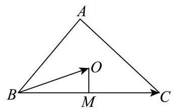
长宁 · 第3题 ★★☆☆☆ · 教师预估 已知向量 a → = ( x , 2 , 3 ) \overrightarrow{a} = \left( {x,2,3}\right) a = ( x , 2 , 3 ) b → = ( 2 , y , 6 ) \overrightarrow{b} = \left( {2, y,6}\right) b = ( 2 , y , 6 ) a → ⊥ b → \overrightarrow{a}\bot \overrightarrow{b} a ⊥ b x + y = x + y = x + y =
考点： 空间向量垂直与数量积；空间线线垂直。难度依据： 空间向量垂直与数量积；空间线线垂直
展开答案与解析 【答案】 -9
【解析】
【详解】 因为 a → = ( x , 2 , 3 ) , b → = ( 2 , y , 6 ) \overrightarrow{a} = \left( {x,2,3}\right) ,\overrightarrow{b} = \left( {2, y,6}\right) a = ( x , 2 , 3 ) , b = ( 2 , y , 6 ) a → ⊥ b → \overrightarrow{a} \bot \overrightarrow{b} a ⊥ b
所以 a → ⋅ b → = 2 x + 2 y + 3 × 6 = 0 \overrightarrow{a} \cdot \overrightarrow{b} = {2x} + {2y} + 3 \times 6 = 0 a ⋅ b = 2 x + 2 y + 3 × 6 = 0
则 x + y = − 9 x + y = - 9 x + y = − 9
长宁 · 第8题 ★★★☆☆ · 教师预估 在 A B C {ABC} A BC D D D B C {BC} BC ∣ A D → ∣ = 4 \left| \overrightarrow{AD}\right| = 4 A D = 4 ∣ B C → ∣ = 6 \left| \overrightarrow{BC}\right| = 6 BC = 6 A B → ⋅ A C → = \overrightarrow{AB} \cdot \overrightarrow{AC} = A B ⋅ A C =
考点： 中线向量与数量积。难度依据： 中线向量与数量积
展开答案与解析 【答案】 7
【解析】
【详解】 因为在 A B C {ABC} A BC D D D B C {BC} BC A B → + A C → = 2 A D → \overrightarrow{AB} + \overrightarrow{AC} = 2\overrightarrow{AD} A B + A C = 2 A D
A B → 2 + A C → 2 + 2 A B → ⋅ A C → = 4 A D → 2 = 64 {\overrightarrow{AB}}^{2} + {\overrightarrow{AC}}^{2} + 2\overrightarrow{AB} \cdot \overrightarrow{AC} = 4{\overrightarrow{AD}}^{2} = {64} A B 2 + A C 2 + 2 A B ⋅ A C = 4 A D 2 = 64
又 ∣ B C → ∣ = 6 \left| \overrightarrow{BC}\right| = 6 BC = 6 ∣ A C → − A B → ∣ = 6 \left| {\overrightarrow{AC} - \overrightarrow{AB}}\right| = 6 A C − A B = 6 A B → 2 + A C → 2 − 2 A B → ⋅ A C → = 36 {\overrightarrow{AB}}^{2} + {\overrightarrow{AC}}^{2} - 2\overrightarrow{AB} \cdot \overrightarrow{AC} = {36} A B 2 + A C 2 − 2 A B ⋅ A C = 36
所以 4 A B → ⋅ A C → = 28 , A B → ⋅ A C → = 7 4\overrightarrow{AB} \cdot \overrightarrow{AC} = {28},\overrightarrow{AB} \cdot \overrightarrow{AC} = 7 4 A B ⋅ A C = 28 , A B ⋅ A C = 7
黄浦 · 第8题 ★★☆☆☆ · 教师预估 本题资料或解析有待核事项，预览不可作为已审定成品。
在复平面内,点 P , Q , O P, Q, O P , Q , O z , w , 0 z, w,0 z , w , 0 ∣ z ∣ = 3 , ∣ w ∣ = 5 , u = z + w \left| z\right| = 3,\left| w\right| = 5, u = z + w ∣ z ∣ = 3 , ∣ w ∣ = 5 , u = z + w ∣ u ∣ = 7 \left| u\right| = 7 ∣ u ∣ = 7 O P → \overrightarrow{OP} OP O Q → \overrightarrow{OQ} OQ
考点： 复数加法；向量夹角。难度依据： 复数加法；向量夹角
核查说明： 仅本题解析局部回核；其他题未据此判定终审通过。
展开答案与解析 【答案】π 3 \frac\pi3 3 π
【解析·向量记号复核修订】
设复数 u u u A A A O A → = O P → + O Q → \overrightarrow{OA}=\overrightarrow{OP}+\overrightarrow{OQ} O A = OP + OQ ∣ O P → ∣ = 3 |\overrightarrow{OP}|=3 ∣ OP ∣ = 3 ∣ O Q → ∣ = 5 |\overrightarrow{OQ}|=5 ∣ OQ ∣ = 5 ∣ O A → ∣ = 7 |\overrightarrow{OA}|=7 ∣ O A ∣ = 7
两边取模平方，得
∣ O A → ∣ 2 = ∣ O P → ∣ 2 + ∣ O Q → ∣ 2 + 2 O P → ⋅ O Q → . |\overrightarrow{OA}|^2=|\overrightarrow{OP}|^2+|\overrightarrow{OQ}|^2+2\overrightarrow{OP}\cdot\overrightarrow{OQ}. ∣ O A ∣ 2 = ∣ OP ∣ 2 + ∣ OQ ∣ 2 + 2 OP ⋅ OQ .
因此 49 = 9 + 25 + 2 O P → ⋅ O Q → 49=9+25+2\overrightarrow{OP}\cdot\overrightarrow{OQ} 49 = 9 + 25 + 2 OP ⋅ OQ O P → ⋅ O Q → = 15 2 \overrightarrow{OP}\cdot\overrightarrow{OQ}=\frac{15}{2} OP ⋅ OQ = 2 15
设两向量夹角为 θ ∈ [ 0 , π ] \theta\in[0,\pi] θ ∈ [ 0 , π ]
cos θ = O P → ⋅ O Q → ∣ O P → ∣ ∣ O Q → ∣ = 15 / 2 3 × 5 = 1 2 . \cos\theta=\frac{\overrightarrow{OP}\cdot\overrightarrow{OQ}}{|\overrightarrow{OP}|\,|\overrightarrow{OQ}|}=\frac{15/2}{3\times5}=\frac12. cos θ = ∣ OP ∣ ∣ OQ ∣ OP ⋅ OQ = 3 × 5 15/2 = 2 1 .
故 θ = π 3 \theta=\frac\pi3 θ = 3 π
【复核修订说明】教研整理PDF第1页题干保留向量箭头，第7页简答为 π / 3 \pi/3 π /3
共线、分点与平面几何综合 用向量比例、分点或数量积表达几何约束，综合大题不拆失小问。
嘉定 · 第20题 ★★★★☆ · 教师预估 本题资料或解析有待核事项，预览不可作为已审定成品。
已知椭圆 Γ : x 2 a 2 + y 2 4 = 1 ( a > 2 ) \Gamma : \frac{{x}^{2}}{{a}^{2}} + \frac{{y}^{2}}{4} = 1\left( {a > 2}\right) Γ : a 2 x 2 + 4 y 2 = 1 ( a > 2 ) l 1 : y = x 2 、 l 2 : y = − x 2 {l}_{1} : y = \frac{x}{2}\text{ 、 }{l}_{2} : y = - \frac{x}{2} l 1 : y = 2 x 、 l 2 : y = − 2 x P P P l 1 {l}_{1} l 1 l 2 {l}_{2} l 2 M M M l 2 {l}_{2} l 2 l 1 {l}_{1} l 1 N N N
(1)当 P P P ∣ M N ∣ \left| {MN}\right| ∣ MN ∣
(2)若椭圆的离心率 e = 3 2 e = \frac{\sqrt{3}}{2} e = 2 3 Γ \Gamma Γ ∣ O M → + O N → ∣ \left| {\overrightarrow{OM} + \overrightarrow{ON}}\right| OM + ON
(3)若 ∣ M N ∣ \left| {MN}\right| ∣ MN ∣ P P P a a a O N P M {ONPM} ONPM
考点： (1) 椭圆顶点与平行线关系；(2) 椭圆离心率与向量模的范围；(3) 定值条件与面积最值。难度依据： 椭圆与向量定值面积最值
核查说明： 题干与答案解析尚未逐页对照原卷，数学内容未独立终审。
展开答案与解析 【答案】 (1) 4 (2)最大值为 4，最小值为 2
(3) a = 8 a = 8 a = 8 O N P M {ONPM} ONPM
【解析】
【分析】 (1) 根据条件分别求直线 P M {PM} PM P N {PN} PN M , N M, N M , N
(2)首先根据离心率求椭圆方程，再根据向量的平行四边形法则转化为求 ∣ O P → ∣ \left| \overrightarrow{OP}\right| OP
(3)首先根据点 P P P P M {PM} PM P N {PN} PN M M M N N N a a a cos ∠ M O N \cos \angle {MON} cos ∠ MON ∣ M N ∣ \left| {MN}\right| ∣ MN ∣ △ M O N \bigtriangleup {MON} △ MON
【小问 1 详解】
当点 P P P P ( 0 , 2 ) , l P M : y = x 2 + 2 , l P N : y = − x 2 + 2 P\left( {0,2}\right) ,{l}_{PM} : y = \frac{x}{2} + 2,{l}_{PN} : y = - \frac{x}{2} + 2 P ( 0 , 2 ) , l PM : y = 2 x + 2 , l PN : y = − 2 x + 2
联立 { y = x 2 + 2 y = − x 2 \left\{ \begin{array}{l} y = \frac{x}{2} + 2 \\ y = - \frac{x}{2} \end{array}\right. { y = 2 x + 2 y = − 2 x { x = − 2 y = 1 \left\{ \begin{array}{l} x = - 2 \\ y = 1 \end{array}\right. { x = − 2 y = 1 M ( − 2 , 1 ) M\left( {-2,1}\right) M ( − 2 , 1 )
联立 { y = − x 2 + 2 y = x 2 \left\{ \begin{array}{l} y = - \frac{x}{2} + 2 \\ y = \frac{x}{2} \end{array}\right. { y = − 2 x + 2 y = 2 x { x = 2 y = 1 \left\{ \begin{array}{l} x = 2 \\ y = 1 \end{array}\right. { x = 2 y = 1 N ( 2 , 1 ) N\left( {2,1}\right) N ( 2 , 1 )
所以 ∣ M N ∣ = ∣ 2 − ( − 2 ) ∣ = 4 \left| {MN}\right| = \left| {2 - \left( {-2}\right) }\right| = 4 ∣ MN ∣ = ∣ 2 − ( − 2 ) ∣ = 4
【小问 2 详解】
椭圆的离心率 e = a 2 − 4 a = 3 2 e = \frac{\sqrt{{a}^{2} - 4}}{a} = \frac{\sqrt{3}}{2} e = a a 2 − 4 = 2 3 a 2 = 16 {a}^{2} = {16} a 2 = 16
所以椭圆方程为 x 2 16 + y 2 4 = 1 \frac{{x}^{2}}{16} + \frac{{y}^{2}}{4} = 1 16 x 2 + 4 y 2 = 1
由条件可知四边形 O N P M {ONPM} ONPM O M → + O N → = O P → \overrightarrow{OM} + \overrightarrow{ON} = \overrightarrow{OP} OM + ON = OP
设 P ( x 0 , y 0 ) , − 4 ≤ x 0 ≤ 4 P\left( {{x}_{0},{y}_{0}}\right) , - 4 \leq {x}_{0} \leq 4 P ( x 0 , y 0 ) , − 4 ≤ x 0 ≤ 4
所以 ∣ O M → + O N → ∣ = ∣ O P → ∣ = x 0 2 + y 0 2 = 3 4 x 0 2 + 4 ∈ [ 2 , 4 ] \left| {\overrightarrow{OM} + \overrightarrow{ON}}\right| = \left| \overrightarrow{OP}\right| = \sqrt{{x}_{0}^{2} + {y}_{0}^{2}} = \sqrt{\frac{3}{4}{x}_{0}^{2} + 4} \in \left\lbrack {2,4}\right\rbrack OM + ON = OP = x 0 2 + y 0 2 = 4 3 x 0 2 + 4 ∈ [ 2 , 4 ]
所以 ∣ O M → + O N → ∣ \left| {\overrightarrow{OM} + \overrightarrow{ON}}\right| OM + ON
【小问 3 详解】
设 P ( x 0 , y 0 ) P\left( {{x}_{0},{y}_{0}}\right) P ( x 0 , y 0 ) l P M : y − y 0 = 1 2 ( x − x 0 ) , l P N : y − y 0 = − 1 2 ( x − x 0 ) {l}_{PM} : y - {y}_{0} = \frac{1}{2}\left( {x - {x}_{0}}\right) ,{l}_{PN} : y - {y}_{0} = - \frac{1}{2}\left( {x - {x}_{0}}\right) l PM : y − y 0 = 2 1 ( x − x 0 ) , l PN : y − y 0 = − 2 1 ( x − x 0 )
联立 { y − y 0 = 1 2 ( x − x 0 ) y = − 1 2 x \left\{ \begin{array}{l} y - {y}_{0} = \frac{1}{2}\left( {x - {x}_{0}}\right) \\ y = - \frac{1}{2}x \end{array}\right. { y − y 0 = 2 1 ( x − x 0 ) y = − 2 1 x x = x 0 2 − y 0 , y = − x 0 4 + y 0 2 x = \frac{{x}_{0}}{2} - {y}_{0}, y = - \frac{{x}_{0}}{4} + \frac{{y}_{0}}{2} x = 2 x 0 − y 0 , y = − 4 x 0 + 2 y 0
即 M ( x 0 2 − y 0 , − x 0 4 + y 0 2 ) M\left( {\frac{{x}_{0}}{2} - {y}_{0}, - \frac{{x}_{0}}{4} + \frac{{y}_{0}}{2}}\right) M ( 2 x 0 − y 0 , − 4 x 0 + 2 y 0 )
联立 { y − y 0 = − 1 2 ( x − x 0 ) y = 1 2 x \left\{ \begin{array}{l} y - {y}_{0} = - \frac{1}{2}\left( {x - {x}_{0}}\right) \\ y = \frac{1}{2}x \end{array}\right. { y − y 0 = − 2 1 ( x − x 0 ) y = 2 1 x x = x 0 2 + y 0 , y = x 0 4 + y 0 2 x = \frac{{x}_{0}}{2} + {y}_{0}, y = \frac{{x}_{0}}{4} + \frac{{y}_{0}}{2} x = 2 x 0 + y 0 , y = 4 x 0 + 2 y 0
即 N ( x 0 2 + y 0 , x 0 4 + y 0 2 ) N\left( {\frac{{x}_{0}}{2} + {y}_{0},\frac{{x}_{0}}{4} + \frac{{y}_{0}}{2}}\right) N ( 2 x 0 + y 0 , 4 x 0 + 2 y 0 )
因为点 P P P x 0 2 a 2 + y 0 2 4 = 1 \frac{{x}_{0}^{2}}{{a}^{2}} + \frac{{y}_{0}^{2}}{4} = 1 a 2 x 0 2 + 4 y 0 2 = 1
所以 ∣ M N ∣ = 4 y 0 2 + x 0 2 4 = 4 × 4 × ( 1 − x 0 2 a 2 ) + x 0 2 4 = 16 + ( 1 4 − 16 a 2 ) x 0 2 \left| {MN}\right| = \sqrt{4{y}_{0}^{2} + \frac{{x}_{0}^{2}}{4}} = \sqrt{4 \times 4 \times \left( {1 - \frac{{x}_{0}^{2}}{{a}^{2}}}\right) + \frac{{x}_{0}^{2}}{4}} = \sqrt{{16} + \left( {\frac{1}{4} - \frac{16}{{a}^{2}}}\right) {x}_{0}^{2}} ∣ MN ∣ = 4 y 0 2 + 4 x 0 2 = 4 × 4 × ( 1 − a 2 x 0 2 ) + 4 x 0 2 = 16 + ( 4 1 − a 2 16 ) x 0 2
因为 ∣ M N ∣ \left| {MN}\right| ∣ MN ∣ x 0 {x}_{0} x 0 1 4 − 16 a 2 = 0 \frac{1}{4} - \frac{16}{{a}^{2}} = 0 4 1 − a 2 16 = 0 a 2 = 64 {a}^{2} = {64} a 2 = 64 a = 8 a = 8 a = 8 ∣ M N ∣ = 4 \left| {MN}\right| = 4 ∣ MN ∣ = 4
如图: 由条件可知, tan ∠ N O x = 1 2 \tan \angle {NOx} = \frac{1}{2} tan ∠ NO x = 2 1 cos ∠ N O x = 2 5 = 2 5 5 \cos \angle {NOx} = \frac{2}{\sqrt{5}} = \frac{2\sqrt{5}}{5} cos ∠ NO x = 5 2 = 5 2 5
cos ∠ M O N = cos ( π − 2 ∠ N O x ) = − cos 2 ∠ N O x = 1 − 2 cos 2 ∠ N O x = − 3 5 \cos \angle {MON} = \cos \left( {\pi - 2\angle {NOx}}\right) = - \cos 2\angle {NOx} = 1 - 2{\cos }^{2}\angle {NOx} = - \frac{3}{5} cos ∠ MON = cos ( π − 2∠ NO x ) = − cos 2∠ NO x = 1 − 2 cos 2 ∠ NO x = − 5 3
则 sin ∠ M O N = 4 5 \sin \angle {MON} = \frac{4}{5} sin ∠ MON = 5 4 ∣ M N ∣ \left| {MN}\right| ∣ MN ∣
△ M O N \bigtriangleup {MON} △ MON ∣ M N ∣ 2 = ∣ O M ∣ 2 + ∣ O N ∣ 2 − 2 ∣ O M ∣ ∣ O N ∣ cos ∠ M O N {\left| MN\right| }^{2} = {\left| OM\right| }^{2} + {\left| ON\right| }^{2} - 2\left| {OM}\right| \left| {ON}\right| \cos \angle {MON} ∣ MN ∣ 2 = ∣ OM ∣ 2 + ∣ ON ∣ 2 − 2 ∣ OM ∣ ∣ ON ∣ cos ∠ MON
= ∣ O M ∣ 2 + ∣ O N ∣ 2 + 6 5 ∣ O M ∣ ∣ O N ∣ ≥ 16 5 ∣ O M ∣ ∣ O N ∣ = {\left| OM\right| }^{2} + {\left| ON\right| }^{2} + \frac{6}{5}\left| {OM}\right| \left| {ON}\right| \geq \frac{16}{5}\left| {OM}\right| \left| {ON}\right| = ∣ OM ∣ 2 + ∣ ON ∣ 2 + 5 6 ∣ OM ∣ ∣ ON ∣ ≥ 5 16 ∣ OM ∣ ∣ ON ∣
即 ∣ O M ∣ ∣ O N ∣ ≤ 5 \left| {OM}\right| \left| {ON}\right| \leq 5 ∣ OM ∣ ∣ ON ∣ ≤ 5 S △ M O N = 1 2 ∣ O M ∣ ∣ O N ∣ sin ∠ M O N ≤ 2 {S}_{\bigtriangleup {MON}} = \frac{1}{2}\left| {OM}\right| \left| {ON}\right| \sin \angle {MON} \leq 2 S △ MON = 2 1 ∣ OM ∣ ∣ ON ∣ sin ∠ MON ≤ 2
而四边形 O N P M {ONPM} ONPM S □ O N P M = 2 S △ M O N ≤ 4 {S}_{\square {ONPM}} = 2{S}_{\bigtriangleup {MON}} \leq 4 S □ ONPM = 2 S △ MON ≤ 4 ∣ O M ∣ = ∣ O N ∣ \left| {OM}\right| = \left| {ON}\right| ∣ OM ∣ = ∣ ON ∣
此时，四边形 ONPM 的最大值为 4 ，
如下图:由以上可知， cos ∠ M O N = 3 5 \cos \angle {MON} = \frac{3}{5} cos ∠ MON = 5 3 ∣ M N ∣ = 4 \left| {MN}\right| = 4 ∣ MN ∣ = 4
△ M O N \bigtriangleup {MON} △ MON ∣ M N ∣ 2 = ∣ O M ∣ 2 + ∣ O N ∣ 2 − 2 ∣ O M ∣ ∣ O N ∣ cos ∠ M O N {\left| MN\right| }^{2} = {\left| OM\right| }^{2} + {\left| ON\right| }^{2} - 2\left| {OM}\right| \left| {ON}\right| \cos \angle {MON} ∣ MN ∣ 2 = ∣ OM ∣ 2 + ∣ ON ∣ 2 − 2 ∣ OM ∣ ∣ ON ∣ cos ∠ MON
= ∣ O M ∣ 2 + ∣ O N ∣ 2 − 6 5 ∣ O M ∣ ∣ O N ∣ ≥ 4 5 ∣ O M ∣ ∣ O N ∣ = {\left| OM\right| }^{2} + {\left| ON\right| }^{2} - \frac{6}{5}\left| {OM}\right| \left| {ON}\right| \geq \frac{4}{5}\left| {OM}\right| \left| {ON}\right| = ∣ OM ∣ 2 + ∣ ON ∣ 2 − 5 6 ∣ OM ∣ ∣ ON ∣ ≥ 5 4 ∣ OM ∣ ∣ ON ∣
即 ∣ O M ∣ ∣ O N ∣ ≤ 20 \left| {OM}\right| \left| {ON}\right| \leq {20} ∣ OM ∣ ∣ ON ∣ ≤ 20 S △ M O N = 1 2 ∣ O M ∣ ∣ O N ∣ sin ∠ M O N ≤ 8 {S}_{\bigtriangleup {MON}} = \frac{1}{2}\left| {OM}\right| \left| {ON}\right| \sin \angle {MON} \leq 8 S △ MON = 2 1 ∣ OM ∣ ∣ ON ∣ sin ∠ MON ≤ 8
而四边形 O N P M {ONPM} ONPM S □ O N P M = 2 S △ M O N ≤ 16 {S}_{\square {ONPM}} = 2{S}_{\bigtriangleup {MON}} \leq {16} S □ ONPM = 2 S △ MON ≤ 16 ∣ O M ∣ = ∣ O N ∣ \left| {OM}\right| = \left| {ON}\right| ∣ OM ∣ = ∣ ON ∣
综上两种情况可知,四边形 O N P M {ONPM} ONPM
奉贤 · 第20题 ★★★★☆ · 教师预估 已知椭圆 Γ : x 2 a 2 + y 2 b 2 = 1 ( a > b > 0 ) \Gamma : \frac{{x}^{2}}{{a}^{2}} + \frac{{y}^{2}}{{b}^{2}} = 1\left( {a > b > 0}\right) Γ : a 2 x 2 + b 2 y 2 = 1 ( a > b > 0 ) ( 0 , 1 ) \left( {0,1}\right) ( 0 , 1 ) 2 2 \frac{\sqrt{2}}{2} 2 2 M ( 0 , − m ) M\left( {0, - m}\right) M ( 0 , − m ) m > 0 m > 0 m > 0 l l l Γ \Gamma Γ C , D C, D C , D
(1)求椭圆下的方程；
(2)若直线 l l l x 2 + y 2 = 2 3 {x}^{2} + {y}^{2} = \frac{2}{3} x 2 + y 2 = 3 2 m = 2 m = 2 m = 2 C D {CD} C D
(3)若以 C D {CD} C D x x x P P P P P P
考点： (1) 离心率求椭圆方程；(2) 切线条件及弦长；(3) 数量积建立直径圆定点。难度依据： 椭圆方程弦长和直径圆定点；数量积表示圆周角
展开答案与解析 【答案】 (1) x 2 2 + y 2 = 1 \frac{{x}^{2}}{2} + {y}^{2} = 1 2 x 2 + y 2 = 1
(2) 4 21 11 \frac{4\sqrt{21}}{11} 11 4 21
(3) P ( 0 , 1 ) P\left( {0,1}\right) P ( 0 , 1 )
【解析】
【分析】 (1) 利用离心率及所过点计算即可得;
(2)设出直线 l l l k 2 {k}^{2} k 2 y y y
(3) 设 l : y = k x − m , P ( s , t ) ( t > 0 ) l : y = {kx} - m, P\left( {s, t}\right) \left( {t > 0}\right) l : y = k x − m , P ( s , t ) ( t > 0 ) y y y P C → ⋅ P D → = 0 \overrightarrow{PC} \cdot \overrightarrow{PD} = 0 PC ⋅ P D = 0 s 、 t 、 k 、 m s\text{ 、 }t\text{ 、 }k\text{ 、 }m s 、 t 、 k 、 m
【小问 1 详解】
由题意可得 { c a = 2 2 1 b 2 = 1 a 2 = b 2 + c 2 \left\{ \begin{array}{l} \frac{c}{a} = \frac{\sqrt{2}}{2} \\ \frac{1}{{b}^{2}} = 1 \\ {a}^{2} = {b}^{2} + {c}^{2} \end{array}\right. ⎩ ⎨ ⎧ a c = 2 2 b 2 1 = 1 a 2 = b 2 + c 2 { a = 2 b = 1 c = 1 \left\{ \begin{array}{l} a = \sqrt{2} \\ b = 1 \\ c = 1 \end{array}\right. ⎩ ⎨ ⎧ a = 2 b = 1 c = 1
故椭圆 Γ \Gamma Γ x 2 2 + y 2 = 1 \frac{{x}^{2}}{2} + {y}^{2} = 1 2 x 2 + y 2 = 1
【小问 2 详解】
由 m = 2 m = 2 m = 2 M ( 0 , − 2 ) M\left( {0, - 2}\right) M ( 0 , − 2 ) l : y = k x − 2 , C ( x 1 , y 1 ) 、 D ( x 2 , y 2 ) l : y = {kx} - 2, C\left( {{x}_{1},{y}_{1}}\right) \text{ 、 }D\left( {{x}_{2},{y}_{2}}\right) l : y = k x − 2 , C ( x 1 , y 1 ) 、 D ( x 2 , y 2 )
则由直线 l l l x 2 + y 2 = 2 3 {x}^{2} + {y}^{2} = \frac{2}{3} x 2 + y 2 = 3 2 ∣ − 2 ∣ k 2 + 1 = 2 3 \frac{\left| -2\right| }{\sqrt{{k}^{2} + 1}} = \sqrt{\frac{2}{3}} k 2 + 1 ∣ − 2 ∣ = 3 2 k 2 = 5 {k}^{2} = 5 k 2 = 5
联立 { y = k x − 2 x 2 2 + y 2 = 1 \left\{ \begin{array}{l} y = {kx} - 2 \\ \frac{{x}^{2}}{2} + {y}^{2} = 1 \end{array}\right. { y = k x − 2 2 x 2 + y 2 = 1 y y y ( 2 k 2 + 1 ) x 2 − 8 k x + 6 = 0 \left( {2{k}^{2} + 1}\right) {x}^{2} - {8kx} + 6 = 0 ( 2 k 2 + 1 ) x 2 − 8 k x + 6 = 0
Δ = ( − 8 k ) 2 − 4 ( 2 k 2 + 1 ) × 6 = 16 k 2 − 24 = 16 × 5 − 24 = 56 > 0 , \Delta = {\left( -8k\right) }^{2} - 4\left( {2{k}^{2} + 1}\right) \times 6 = {16}{k}^{2} - {24} = {16} \times 5 - {24} = {56} > 0, Δ = ( − 8 k ) 2 − 4 ( 2 k 2 + 1 ) × 6 = 16 k 2 − 24 = 16 × 5 − 24 = 56 > 0 ,
则 x 1 + x 2 = 8 k 2 k 2 + 1 , x 1 x 2 = 6 2 k 2 + 1 {x}_{1} + {x}_{2} = \frac{8k}{2{k}^{2} + 1},\;{x}_{1}{x}_{2} = \frac{6}{2{k}^{2} + 1} x 1 + x 2 = 2 k 2 + 1 8 k , x 1 x 2 = 2 k 2 + 1 6
则 ∣ C D ∣ = k 2 + 1 ⋅ ( x 1 + x 2 ) 2 − 4 x 1 x 2 = k 2 + 1 ⋅ ( 8 k 2 k 2 + 1 ) 2 − 4 × 6 2 k 2 + 1 = k 2 + 1 2 k 2 + 1 ⋅ 16 k 2 − 24 = 2 2 ⋅ k 2 + 1 ⋅ 2 k 2 − 3 2 k 2 + 1 = 2 2 × 5 + 1 × 2 × 5 − 3 2 × 5 + 1 = 4 21 11 ; \left| {CD}\right| = \sqrt{{k}^{2} + 1} \cdot \sqrt{{\left( {x}_{1} + {x}_{2}\right) }^{2} - 4{x}_{1}{x}_{2}} = \sqrt{{k}^{2} + 1} \cdot \sqrt{{\left( \frac{8k}{2{k}^{2} + 1}\right) }^{2} - 4 \times \frac{6}{2{k}^{2} + 1}} \; = \frac{\sqrt{{k}^{2} + 1}}{2{k}^{2} + 1} \cdot \sqrt{{16}{k}^{2} - {24}} = \frac{2\sqrt{2} \cdot \sqrt{{k}^{2} + 1} \cdot \sqrt{2{k}^{2} - 3}}{2{k}^{2} + 1} \; = \frac{2\sqrt{2} \times \sqrt{5 + 1} \times \sqrt{2 \times 5 - 3}}{2 \times 5 + 1} = \frac{4\sqrt{21}}{11}; ∣ C D ∣ = k 2 + 1 ⋅ ( x 1 + x 2 ) 2 − 4 x 1 x 2 = k 2 + 1 ⋅ ( 2 k 2 + 1 8 k ) 2 − 4 × 2 k 2 + 1 6 = 2 k 2 + 1 k 2 + 1 ⋅ 16 k 2 − 24 = 2 k 2 + 1 2 2 ⋅ k 2 + 1 ⋅ 2 k 2 − 3 = 2 × 5 + 1 2 2 × 5 + 1 × 2 × 5 − 3 = 11 4 21 ;
设 l : y = k x − m , C ( x 1 , y 1 ) 、 D ( x 2 , y 2 ) , P ( s , t ) ( t > 0 ) l : y = {kx} - m, C\left( {{x}_{1},{y}_{1}}\right) \text{ 、 }D\left( {{x}_{2},{y}_{2}}\right) , P\left( {s, t}\right) \left( {t > 0}\right) l : y = k x − m , C ( x 1 , y 1 ) 、 D ( x 2 , y 2 ) , P ( s , t ) ( t > 0 )
联立 { y = k x − m x 2 2 + y 2 = 1 \left\{ \begin{array}{l} y = {kx} - m \\ \frac{{x}^{2}}{2} + {y}^{2} = 1 \end{array}\right. { y = k x − m 2 x 2 + y 2 = 1 y y y ( 2 k 2 + 1 ) x 2 − 4 k m x + 2 m 2 − 2 = 0 \left( {2{k}^{2} + 1}\right) {x}^{2} - {4kmx} + 2{m}^{2} - 2 = 0 ( 2 k 2 + 1 ) x 2 − 4 km x + 2 m 2 − 2 = 0
Δ = ( − 4 k m ) 2 − 4 ( 2 k 2 + 1 ) ( 2 m 2 − 2 ) = 16 m 2 k 2 − 16 m 2 k 2 + 8 − 8 m 2 + 16 k 2 \Delta = {\left( -4km\right) }^{2} - 4\left( {2{k}^{2} + 1}\right) \left( {2{m}^{2} - 2}\right) = {16}{m}^{2}{k}^{2} - {16}{m}^{2}{k}^{2} + 8 - 8{m}^{2} + {16}{k}^{2} Δ = ( − 4 km ) 2 − 4 ( 2 k 2 + 1 ) ( 2 m 2 − 2 ) = 16 m 2 k 2 − 16 m 2 k 2 + 8 − 8 m 2 + 16 k 2
= 8 − 8 m 2 + 16 k 2 > 0 = 8 - 8{m}^{2} + {16}{k}^{2} > 0 = 8 − 8 m 2 + 16 k 2 > 0 2 k 2 − m 2 + 1 > 0 2{k}^{2} - {m}^{2} + 1 > 0 2 k 2 − m 2 + 1 > 0
x 1 + x 2 = 4 k m 2 k 2 + 1 , x 1 x 2 = 2 m 2 − 2 2 k 2 + 1 , {x}_{1} + {x}_{2} = \frac{4km}{2{k}^{2} + 1},\;{x}_{1}{x}_{2} = \frac{2{m}^{2} - 2}{2{k}^{2} + 1}, x 1 + x 2 = 2 k 2 + 1 4 km , x 1 x 2 = 2 k 2 + 1 2 m 2 − 2 ,
由点 P P P C D {CD} C D P C → ⋅ P D → = 0 \overrightarrow{PC} \cdot \overrightarrow{PD} = 0 PC ⋅ P D = 0
由 P C → = ( x 1 − s , y 1 − t ) , P D → = ( x 2 − s , y 2 − t ) \overrightarrow{PC} = \left( {{x}_{1} - s,{y}_{1} - t}\right) ,\overrightarrow{PD} = \left( {{x}_{2} - s,{y}_{2} - t}\right) PC = ( x 1 − s , y 1 − t ) , P D = ( x 2 − s , y 2 − t )
则 P C → ⋅ P D → = ( x 1 − s ) ( x 2 − s ) + ( y 1 − t ) ( y 2 − t ) \overrightarrow{PC} \cdot \overrightarrow{PD} = \left( {{x}_{1} - s}\right) \left( {{x}_{2} - s}\right) + \left( {{y}_{1} - t}\right) \left( {{y}_{2} - t}\right) PC ⋅ P D = ( x 1 − s ) ( x 2 − s ) + ( y 1 − t ) ( y 2 − t )
= x 1 x 2 − s ( x 1 + x 2 ) + s 2 + y 1 y 2 − t ( y 1 + y 2 ) + t 2 = {x}_{1}{x}_{2} - s\left( {{x}_{1} + {x}_{2}}\right) + {s}^{2} + {y}_{1}{y}_{2} - t\left( {{y}_{1} + {y}_{2}}\right) + {t}^{2} = x 1 x 2 − s ( x 1 + x 2 ) + s 2 + y 1 y 2 − t ( y 1 + y 2 ) + t 2
= x 1 x 2 − s ( x 1 + x 2 ) + s 2 + ( k x 1 − m ) ( k x 2 − m ) − t ( k x 1 − m + k x 2 − m ) + t 2 = {x}_{1}{x}_{2} - s\left( {{x}_{1} + {x}_{2}}\right) + {s}^{2} + \left( {k{x}_{1} - m}\right) \left( {k{x}_{2} - m}\right) - t\left( {k{x}_{1} - m + k{x}_{2} - m}\right) + {t}^{2} = x 1 x 2 − s ( x 1 + x 2 ) + s 2 + ( k x 1 − m ) ( k x 2 − m ) − t ( k x 1 − m + k x 2 − m ) + t 2
= ( k 2 + 1 ) x 1 x 2 − ( s + k m + t k ) ( x 1 + x 2 ) + s 2 + t 2 + m 2 + 2 t m = \left( {{k}^{2} + 1}\right) {x}_{1}{x}_{2} - \left( {s + {km} + {tk}}\right) \left( {{x}_{1} + {x}_{2}}\right) + {s}^{2} + {t}^{2} + {m}^{2} + {2tm} = ( k 2 + 1 ) x 1 x 2 − ( s + km + t k ) ( x 1 + x 2 ) + s 2 + t 2 + m 2 + 2 t m
= ( 2 m 2 − 2 ) ( k 2 + 1 ) 2 k 2 + 1 − 4 k m ( s + k m + t k ) 2 k 2 + 1 + ( s 2 + t 2 + m 2 + 2 t m ) ( 2 k 2 + 1 ) 2 k 2 + 1
= \frac{\left( {2{m}^{2} - 2}\right) \left( {{k}^{2} + 1}\right) }{2{k}^{2} + 1} - \frac{{4km}\left( {s + {km} + {tk}}\right) }{2{k}^{2} + 1} + \frac{\left( {{s}^{2} + {t}^{2} + {m}^{2} + {2tm}}\right) \left( {2{k}^{2} + 1}\right) }{2{k}^{2} + 1}
= 2 k 2 + 1 ( 2 m 2 − 2 ) ( k 2 + 1 ) − 2 k 2 + 1 4 km ( s + km + t k ) + 2 k 2 + 1 ( s 2 + t 2 + m 2 + 2 t m ) ( 2 k 2 + 1 )
= − 2 k 2 + 3 m 2 − 2 − 4 k m s + 2 k 2 s 2 + 2 k 2 t 2 + s 2 + t 2 + 2 t m 2 k 2 + 1
= \frac{-2{k}^{2} + 3{m}^{2} - 2 - {4kms} + 2{k}^{2}{s}^{2} + 2{k}^{2}{t}^{2} + {s}^{2} + {t}^{2} + {2tm}}{2{k}^{2} + 1}
= 2 k 2 + 1 − 2 k 2 + 3 m 2 − 2 − 4 km s + 2 k 2 s 2 + 2 k 2 t 2 + s 2 + t 2 + 2 t m
= ( 2 t 2 + 2 s 2 − 2 ) k 2 − 4 m s k + 3 m 2 + s 2 + t 2 + 2 t m − 2 2 k 2 + 1 = 0 ,
= \frac{\left( {2{t}^{2} + 2{s}^{2} - 2}\right) {k}^{2} - {4msk} + 3{m}^{2} + {s}^{2} + {t}^{2} + {2tm} - 2}{2{k}^{2} + 1} = 0,
= 2 k 2 + 1 ( 2 t 2 + 2 s 2 − 2 ) k 2 − 4 m s k + 3 m 2 + s 2 + t 2 + 2 t m − 2 = 0 ,
即 ( 2 t 2 + 2 s 2 − 2 ) k 2 − 4 m s k + 3 m 2 + s 2 + t 2 + 2 t m − 2 = 0 \left( {2{t}^{2} + 2{s}^{2} - 2}\right) {k}^{2} - {4msk} + 3{m}^{2} + {s}^{2} + {t}^{2} + {2tm} - 2 = 0 ( 2 t 2 + 2 s 2 − 2 ) k 2 − 4 m s k + 3 m 2 + s 2 + t 2 + 2 t m − 2 = 0
故 { 2 t 2 + 2 s 2 − 2 = 0 − 4 s = 0 3 m 2 + s 2 + t 2 + 2 t m − 2 = 0 \left\{ \begin{array}{l} 2{t}^{2} + 2{s}^{2} - 2 = 0 \\ - {4s} = 0 \\ 3{m}^{2} + {s}^{2} + {t}^{2} + {2tm} - 2 = 0 \end{array}\right. ⎩ ⎨ ⎧ 2 t 2 + 2 s 2 − 2 = 0 − 4 s = 0 3 m 2 + s 2 + t 2 + 2 t m − 2 = 0 { s = 0 t 2 = 1 3 m 2 + 2 t m − 1 = 0 \left\{ \begin{array}{l} s = 0 \\ {t}^{2} = 1 \\ 3{m}^{2} + {2tm} - 1 = 0 \end{array}\right. ⎩ ⎨ ⎧ s = 0 t 2 = 1 3 m 2 + 2 t m − 1 = 0
由 t > 0 t > 0 t > 0 t = 1 t = 1 t = 1 3 m 2 + 2 m − 1 = ( 3 m − 1 ) ( m + 1 ) = 0 3{m}^{2} + {2m} - 1 = \left( {{3m} - 1}\right) \left( {m + 1}\right) = 0 3 m 2 + 2 m − 1 = ( 3 m − 1 ) ( m + 1 ) = 0
即 m = 1 3 m = \frac{1}{3} m = 3 1 m = − 1 m = - 1 m = − 1 m > 0 m > 0 m > 0 m = 1 3 m = \frac{1}{3} m = 3 1
即当且仅当 m = 1 3 m = \frac{1}{3} m = 3 1 C D {CD} C D x x x P P P P P P ( 0 , 1 ) \left( {0,1}\right) ( 0 , 1 )
宝山 · 第4题 ★☆☆☆☆ · 教师预估 若 n → = ( 1 , 2 ) \overrightarrow{n} = \left( {1,2}\right) n = ( 1 , 2 ) l : a x + y − 1 = 0 l : {ax} + y - 1 = 0 l : a x + y − 1 = 0 a a a
考点： 直线法向量与平行坐标比例；直线一般式及法向量。难度依据： 直线法向量与平行坐标比例；直线一般式及法向量
展开答案与解析 【答案】 1 2 # # 0.5 \frac{1}{2}\# \# {0.5} 2 1 ## 0.5
【解析】
【分析】 利用直线一般式的法向量形式, 结合已知法向量与该法向量平行的性质列比例式求解 a a a
【详解】 已知直线 l l l a x + y − 1 = 0 {ax} + y - 1 = 0 a x + y − 1 = 0
根据直线一般式 A x + B y + C = 0 {Ax} + {By} + C = 0 A x + B y + C = 0 l l l ( a , 1 ) \left( {a,1}\right) ( a , 1 )
因为 n → = ( 1 , 2 ) \overrightarrow{n} = \left( {1,2}\right) n = ( 1 , 2 ) l l l ( a , 1 ) \left( {a,1}\right) ( a , 1 ) ( 1 , 2 ) \left( {1,2}\right) ( 1 , 2 )
由向量平行的坐标关系得: 2 a = 1 × 1 {2a} = 1 \times 1 2 a = 1 × 1 a = 1 2 a = \frac{1}{2} a = 2 1
【点睛】 本题考查直线法向量的概念和向量平行的坐标运算, 记住直线一般式 A x + B y + C = 0 {Ax} + {By} + C = 0 A x + B y + C = 0 ( A , B ) \left( {A, B}\right) ( A , B )
崇明 · 第20题 ★★★★☆ · 教师预估 已知椭圆 C : x 2 4 + y 2 3 = 1 C : \frac{{x}^{2}}{4} + \frac{{y}^{2}}{3} = 1 C : 4 x 2 + 3 y 2 = 1
(1)求椭圆 C C C e e e
(2)已知椭圆右顶点为 A A A M M M y y y P P P C C C A P → = 2 P M → \overrightarrow{AP} = 2\overrightarrow{PM} A P = 2 PM M M M
(3)已知 G ( 5 2 , 0 ) G\left( {\frac{5}{2},0}\right) G ( 2 5 , 0 ) R ( 4 , 0 ) R\left( {4,0}\right) R ( 4 , 0 ) C C C D D D E E E D G {DG} D G x = 1 x = 1 x = 1 H H H E H ⊥ y {EH} \bot y E H ⊥ y
考点： (1) 椭圆离心率；(2) 向量分点及椭圆坐标；(3) 直线与椭圆联立、韦达及坐标证明。难度依据： 椭圆离心率分点及直线定向；分点坐标和共线条件
展开答案与解析 【答案】 (1) 1 2 \frac{1}{2} 2 1
(2) ( 0 , 6 ) \left( {0,\sqrt{6}}\right) ( 0 , 6 )
(3) 证明见详解.
【解析】
【分析】 (1) 根据离心率定义直接计算可得;
(2)设 M ( 0 , m ) , m > 0 M\left( {0, m}\right) , m > 0 M ( 0 , m ) , m > 0 P P P
(3)利用韦达定理表示出点 E E E H H H E E E H H H
【小问 1 详解】
记椭圆 C : x 2 4 + y 2 3 = 1 C : \frac{{x}^{2}}{4} + \frac{{y}^{2}}{3} = 1 C : 4 x 2 + 3 y 2 = 1 2 a {2a} 2 a 2 b {2b} 2 b 2 c {2c} 2 c
则 a = 2 , b = 3 , c = a 2 − b 2 = 1 a = 2, b = \sqrt{3}, c = \sqrt{{a}^{2} - {b}^{2}} = 1 a = 2 , b = 3 , c = a 2 − b 2 = 1 e = c a = 1 2 e = \frac{c}{a} = \frac{1}{2} e = a c = 2 1
【小问 2 详解】
由题知, A ( 2 , 0 ) A\left( {2,0}\right) A ( 2 , 0 ) M ( 0 , m ) , m > 0 , P ( x P , y P ) M\left( {0, m}\right) , m > 0, P\left( {{x}_{P},{y}_{P}}\right) M ( 0 , m ) , m > 0 , P ( x P , y P )
因为 A P → = ( x P − 2 , y P ) , P M → = ( − x P , m − y P ) , A P → = 2 P M → \overrightarrow{AP} = \left( {{x}_{P} - 2,{y}_{P}}\right) ,\overrightarrow{PM} = \left( {-{x}_{P}, m - {y}_{P}}\right) ,\overrightarrow{AP} = 2\overrightarrow{PM} A P = ( x P − 2 , y P ) , PM = ( − x P , m − y P ) , A P = 2 PM
所以 ( x P − 2 , y P ) = 2 ( − x P , m − y P ) \left( {{x}_{P} - 2,{y}_{P}}\right) = 2\left( {-{x}_{P}, m - {y}_{P}}\right) ( x P − 2 , y P ) = 2 ( − x P , m − y P ) x P = 2 3 , y P = 2 m 3 {x}_{P} = \frac{2}{3},{y}_{P} = \frac{2m}{3} x P = 3 2 , y P = 3 2 m
代入椭圆方程得 1 9 + 4 m 2 27 = 1 \frac{1}{9} + \frac{4{m}^{2}}{27} = 1 9 1 + 27 4 m 2 = 1 m = 6 m = \sqrt{6} m = 6
【小问 3 详解】
易知,当直线 D E {DE} D E D , E D, E D , E H H H
设直线 D E {DE} D E x = n y + 4 , D ( x 1 , y 1 ) , E ( x 2 , y 2 ) x = {ny} + 4, D\left( {{x}_{1},{y}_{1}}\right) , E\left( {{x}_{2},{y}_{2}}\right) x = n y + 4 , D ( x 1 , y 1 ) , E ( x 2 , y 2 )
联立 { x 2 4 + y 2 3 = 1 x = n y + 4 \left\{ \begin{array}{l} \frac{{x}^{2}}{4} + \frac{{y}^{2}}{3} = 1 \\ x = {ny} + 4 \end{array}\right. { 4 x 2 + 3 y 2 = 1 x = n y + 4 ( 3 n 2 + 4 ) y 2 + 24 n y + 36 = 0 \left( {3{n}^{2} + 4}\right) {y}^{2} + {24ny} + {36} = 0 ( 3 n 2 + 4 ) y 2 + 24 n y + 36 = 0
由 Δ = ( 24 n ) 2 − 4 ( 3 n 2 + 4 ) × 36 = 144 ( n 2 − 4 ) > 0 \Delta = {\left( {24}n\right) }^{2} - 4\left( {3{n}^{2} + 4}\right) \times {36} = {144}\left( {{n}^{2} - 4}\right) > 0 Δ = ( 24 n ) 2 − 4 ( 3 n 2 + 4 ) × 36 = 144 ( n 2 − 4 ) > 0 n < − 2 n < - 2 n < − 2 n > 2 n > 2 n > 2
则 y 1 + y 2 = − 24 n 3 n 2 + 4 , y 1 y 2 = 36 3 n 2 + 4 {y}_{1} + {y}_{2} = \frac{-{24n}}{3{n}^{2} + 4},{y}_{1}{y}_{2} = \frac{36}{3{n}^{2} + 4} y 1 + y 2 = 3 n 2 + 4 − 24 n , y 1 y 2 = 3 n 2 + 4 36
所以 3 ( y 1 + y 2 ) = − 2 n y 1 y 2 3\left( {{y}_{1} + {y}_{2}}\right) = - {2n}{y}_{1}{y}_{2} 3 ( y 1 + y 2 ) = − 2 n y 1 y 2 y 2 = − 3 y 1 3 + 2 n y 1 {y}_{2} = \frac{-3{y}_{1}}{3 + {2n}{y}_{1}} y 2 = 3 + 2 n y 1 − 3 y 1
设 H ( 1 , h ) H\left( {1, h}\right) H ( 1 , h ) D , H , G D, H, G D , H , G D H → / / H G → \overrightarrow{DH}//\overrightarrow{HG} DH // H G D H → = ( 1 − x 1 , h − y 1 ) , H G → = ( 3 2 , − h ) \overrightarrow{DH} = \left( {1 - {x}_{1}, h - {y}_{1}}\right) ,\overrightarrow{HG} = \left( {\frac{3}{2}, - h}\right) DH = ( 1 − x 1 , h − y 1 ) , H G = ( 2 3 , − h )
所以 − h ( 1 − x 1 ) = 3 2 ( h − y 1 ) - h\left( {1 - {x}_{1}}\right) = \frac{3}{2}\left( {h - {y}_{1}}\right) − h ( 1 − x 1 ) = 2 3 ( h − y 1 ) h = 3 y 1 5 − 2 x 1 = 3 y 1 5 − 2 ( n y 1 + 4 ) = − 3 y 1 3 + 2 n y 1 h = \frac{3{y}_{1}}{5 - 2{x}_{1}} = \frac{3{y}_{1}}{5 - 2\left( {n{y}_{1} + 4}\right) } = \frac{-3{y}_{1}}{3 + {2n}{y}_{1}} h = 5 − 2 x 1 3 y 1 = 5 − 2 ( n y 1 + 4 ) 3 y 1 = 3 + 2 n y 1 − 3 y 1
所以 h = y 2 h = {y}_{2} h = y 2 E H ⊥ y {EH} \bot y E H ⊥ y
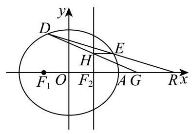
普陀 · 第9题 ★★★☆☆ · 教师预估 已知向量 a → = ( 1 , 2 ) , b → = ( − 1 , 1 ) , c → = ( 3 , 4 ) \overrightarrow{a} = \left( {1,2}\right) ,\overrightarrow{b} = \left( {-1,1}\right) ,\overrightarrow{c} = \left( {3,4}\right) a = ( 1 , 2 ) , b = ( − 1 , 1 ) , c = ( 3 , 4 ) y = f ( x ) y = f\left( x\right) y = f ( x ) f ( x ) = { x + 1 , x < 2 2 x − 1 , x ≥ 2 f\left( x\right) = \left\{ \begin{array}{l} x + 1, x < 2 \\ {2x} - 1, x \geq 2 \end{array}\right. f ( x ) = { x + 1 , x < 2 2 x − 1 , x ≥ 2 d → ( x ) = f ( x ) ⋅ a → + f ( x + 2 ) ⋅ b → \overrightarrow{d}\left( x\right) = f\left( x\right) \cdot \overrightarrow{a} + f\left( {x + 2}\right) \cdot \overrightarrow{b} d ( x ) = f ( x ) ⋅ a + f ( x + 2 ) ⋅ b d → ( x ) / / c → \overrightarrow{d}\left( x\right) //\overrightarrow{c} d ( x ) // c x = x = x =
考点： 向量平行的坐标条件；分段函数代入并分类。难度依据： 向量平行的坐标条件；分段函数代入并分类
展开答案与解析 【答案】 − 23 9 - \frac{23}{9} − 9 23
【解析】
【分析】 由题意可得 f ( x + 2 ) = − 2 7 f ( x ) f\left( {x + 2}\right) = - \frac{2}{7}f\left( x\right) f ( x + 2 ) = − 7 2 f ( x ) x < 0 、 0 ≤ x < 2 x < 0\text{ 、 }0 \leq x < 2 x < 0 、 0 ≤ x < 2 x ≥ 2 x \geq 2 x ≥ 2
【详解】 因为 d → ( x ) = f ( x ) ⋅ a → + f ( x + 2 ) ⋅ b → = ( f ( x ) − f ( x + 2 ) , 2 f ( x ) + f ( x + 2 ) ) \overrightarrow{d}\left( x\right) = f\left( x\right) \cdot \overrightarrow{a} + f\left( {x + 2}\right) \cdot \overrightarrow{b} = \left( {f\left( x\right) - f\left( {x + 2}\right) ,{2f}\left( x\right) + f\left( {x + 2}\right) }\right) d ( x ) = f ( x ) ⋅ a + f ( x + 2 ) ⋅ b = ( f ( x ) − f ( x + 2 ) , 2 f ( x ) + f ( x + 2 ) )
又因为 c → = ( 3 , 4 ) \overrightarrow{c} = \left( {3,4}\right) c = ( 3 , 4 ) d → ( x ) / / c → \overrightarrow{d}\left( x\right) //\overrightarrow{c} d ( x ) // c
所以 4 [ f ( x ) − f ( x + 2 ) ] = 3 [ 2 f ( x ) + f ( x + 2 ) ] 4\left\lbrack {f\left( x\right) - f\left( {x + 2}\right) }\right\rbrack = 3\left\lbrack {{2f}\left( x\right) + f\left( {x + 2}\right) }\right\rbrack 4 [ f ( x ) − f ( x + 2 ) ] = 3 [ 2 f ( x ) + f ( x + 2 ) ]
整理得 f ( x + 2 ) = − 2 7 f ( x ) f\left( {x + 2}\right) = - \frac{2}{7}f\left( x\right) f ( x + 2 ) = − 7 2 f ( x )
当 x < 0 x < 0 x < 0 x + 2 < 2 x + 2 < 2 x + 2 < 2
则有 x + 2 + 1 = − 2 7 ( x + 1 ) x + 2 + 1 = - \frac{2}{7}\left( {x + 1}\right) x + 2 + 1 = − 7 2 ( x + 1 ) x = − 23 9 < 0 x = - \frac{23}{9} < 0 x = − 9 23 < 0
当 0 ≤ x < 2 0 \leq x < 2 0 ≤ x < 2 2 ≤ x + 2 < 4 2 \leq x + 2 < 4 2 ≤ x + 2 < 4
则有 2 ( x + 2 ) − 1 = − 2 7 ( x + 1 ) 2\left( {x + 2}\right) - 1 = - \frac{2}{7}\left( {x + 1}\right) 2 ( x + 2 ) − 1 = − 7 2 ( x + 1 ) x = − 23 16 < 0 x = - \frac{23}{16} < 0 x = − 16 23 < 0
当 x ≥ 2 x \geq 2 x ≥ 2 x + 2 ≥ 4 x + 2 \geq 4 x + 2 ≥ 4
则有 2 ( x + 2 ) − 1 = − 2 7 ( 2 x − 1 ) 2\left( {x + 2}\right) - 1 = - \frac{2}{7}\left( {{2x} - 1}\right) 2 ( x + 2 ) − 1 = − 7 2 ( 2 x − 1 ) x = − 19 18 < 0 x = - \frac{19}{18} < 0 x = − 18 19 < 0
综上， x = − 23 9 x = - \frac{23}{9} x = − 9 23
普陀 · 第18题 ★★★★☆ · 教师预估 设 A B C {ABC} A BC A , B , C A, B, C A , B , C a , b , c a, b, c a , b , c b sin ( A + 5 π 6 ) = a cos A cos C + c cos 2 A . b\sin \left( {A + \frac{5\pi }{6}}\right) = a\cos A\cos C + c{\cos }^{2}A. b sin ( A + 6 5 π ) = a cos A cos C + c cos 2 A .
(1)求角 A A A
(2)点 O O O D D D ( O A → + O B → ) ⋅ A B → = 0 \left( {\overrightarrow{OA} + \overrightarrow{OB}}\right) \cdot \overrightarrow{AB} = 0 ( O A + OB ) ⋅ A B = 0 ( O A → + O C → ) ⋅ A C → = 0 \left( {\overrightarrow{OA} + \overrightarrow{OC}}\right) \cdot \overrightarrow{AC} = 0 ( O A + OC ) ⋅ A C = 0 B D → = 2 D C → \overrightarrow{BD} = 2\overrightarrow{DC} B D = 2 D C A B ⋅ A D = 0 {AB} \cdot {AD} = 0 A B ⋅ A D = 0 C O → ⋅ A B → C O → ⋅ C B → + C O → ⋅ C A → \frac{\overrightarrow{CO} \cdot \overrightarrow{AB}}{\overrightarrow{CO} \cdot \overrightarrow{CB} + \overrightarrow{CO} \cdot \overrightarrow{CA}} CO ⋅ CB + CO ⋅ C A CO ⋅ A B
考点： (1) 正弦定理化简解角；(2) 外心向量与分点数量积。难度依据： 正弦定理及三角恒等变换；外心数量积及分点关系
展开答案与解析 【答案】 (1) 5 π 6 \frac{5\pi }{6} 6 5 π
(2) 3 4 \frac{3}{4} 4 3
【解析】
【分析】 (1) 利用正弦定理将边化为角,化简得 sin ( A + 5 π 6 ) = cos A \sin \left( {A + \frac{5\pi }{6}}\right) = \cos A sin ( A + 6 5 π ) = cos A A A A
(2)由向量条件推出 O O O
cos 2 ∠ A B C − cos 2 ∠ B A C 2 − cos 2 ∠ B A C − cos 2 ∠ A B C \frac{\cos 2\angle {ABC} - \cos 2\angle {BAC}}{2 - \cos 2\angle {BAC} - \cos 2\angle {ABC}} 2 − c o s 2∠ B A C − c o s 2∠ A BC c o s 2∠ A BC − c o s 2∠ B A C B D → = 2 D C → \overrightarrow{BD} = 2\overrightarrow{DC} B D = 2 D C A B ⋅ A D = 0 {AB} \cdot {AD} = 0 A B ⋅ A D = 0 cos 2 ∠ A B C \cos 2\angle {ABC} cos 2∠ A BC
【小问 1 详解】
因为 b sin ( A + 5 π 6 ) = a cos A cos C + c cos 2 A b\sin \left( {A + \frac{5\pi }{6}}\right) = a\cos A\cos C + c{\cos }^{2}A b sin ( A + 6 5 π ) = a cos A cos C + c cos 2 A
设 A B C {ABC} A BC R R R a = 2 R sin A , b = 2 R sin B , c = 2 R sin C a = {2R}\sin A, b = {2R}\sin B, c = {2R}\sin C a = 2 R sin A , b = 2 R sin B , c = 2 R sin C
代入可得 sin B sin ( A + 5 π 6 ) = sin A cos A cos C + sin C cos 2 A \sin B\sin \left( {A + \frac{5\pi }{6}}\right) = \sin A\cos A\cos C + \sin C{\cos }^{2}A sin B sin ( A + 6 5 π ) = sin A cos A cos C + sin C cos 2 A
所以 sin B sin ( A + 5 π 6 ) = ( sin A cos C + cos A sin C ) cos A \sin B\sin \left( {A + \frac{5\pi }{6}}\right) = \left( {\sin A\cos C + \cos A\sin C}\right) \cos A sin B sin ( A + 6 5 π ) = ( sin A cos C + cos A sin C ) cos A
即 sin B sin ( A + 5 π 6 ) = sin ( A + C ) cos A \sin B\sin \left( {A + \frac{5\pi }{6}}\right) = \sin \left( {A + C}\right) \cos A sin B sin ( A + 6 5 π ) = sin ( A + C ) cos A
因为在 A B C {ABC} A BC A + C = π − B A + C = \pi - B A + C = π − B sin ( A + C ) = sin B \sin \left( {A + C}\right) = \sin B sin ( A + C ) = sin B
即 sin B sin ( A + 5 π 6 ) = sin B cos A \sin B\sin \left( {A + \frac{5\pi }{6}}\right) = \sin B\cos A sin B sin ( A + 6 5 π ) = sin B cos A
因为 B ∈ ( 0 , π ) B \in \left( {0,\pi }\right) B ∈ ( 0 , π ) sin B ≠ 0 \sin B \neq 0 sin B = 0 sin ( A + 5 π 6 ) = cos A \sin \left( {A + \frac{5\pi }{6}}\right) = \cos A sin ( A + 6 5 π ) = cos A
化简得: sin A cos 5 π 6 + cos A sin 5 π 6 = cos A \sin A\cos \frac{5\pi }{6} + \cos A\sin \frac{5\pi }{6} = \cos A sin A cos 6 5 π + cos A sin 6 5 π = cos A
解得 sin A = − 3 3 cos A \sin A = - \frac{\sqrt{3}}{3}\cos A sin A = − 3 3 cos A tan A = − 3 3 \tan A = - \frac{\sqrt{3}}{3} tan A = − 3 3
因为 A ∈ ( 0 , π ) A \in \left( {0,\pi }\right) A ∈ ( 0 , π ) A = 5 π 6 A = \frac{5\pi }{6} A = 6 5 π
【小问 2 详解】
由 ( O A → + O B → ) ⋅ A B → = 0 \left( {\overrightarrow{OA} + \overrightarrow{OB}}\right) \cdot \overrightarrow{AB} = 0 ( O A + OB ) ⋅ A B = 0 ( O A → + O B → ) ⋅ ( O B → − O A → ) = 0 \left( {\overrightarrow{OA} + \overrightarrow{OB}}\right) \cdot \left( {\overrightarrow{OB} - \overrightarrow{OA}}\right) = 0 ( O A + OB ) ⋅ ( OB − O A ) = 0
所以 O A → 2 = O B → 2 {\overrightarrow{OA}}^{2} = {\overrightarrow{OB}}^{2} O A 2 = OB 2 ∣ O A → ∣ = ∣ O B → ∣ \left| \overrightarrow{OA}\right| = \left| \overrightarrow{OB}\right| O A = OB ( O A → + O C → ) ⋅ A C → = 0 \left( {\overrightarrow{OA} + \overrightarrow{OC}}\right) \cdot \overrightarrow{AC} = 0 ( O A + OC ) ⋅ A C = 0 ∣ O C → ∣ = ∣ O B → ∣ \left| \overrightarrow{OC}\right| = \left| \overrightarrow{OB}\right| OC = OB
所以 O O O A B C {ABC} A BC ∣ O C → ∣ = ∣ O B → ∣ = ∣ O A → ∣ = R \left| \overrightarrow{OC}\right| = \left| \overrightarrow{OB}\right| = \left| \overrightarrow{OA}\right| = R OC = OB = O A = R
因为同弧所对的圆周角是圆心角的一半,
所以 ∠ A O B = 2 ∠ A C B \angle {AOB} = 2\angle {ACB} ∠ A OB = 2∠ A CB ∠ A O C = 2 ∠ A B C \angle {AOC} = 2\angle {ABC} ∠ A OC = 2∠ A BC ∠ B O C = 2 π − 2 ∠ B A C \angle {BOC} = {2\pi } - 2\angle {BAC} ∠ BOC = 2 π − 2∠ B A C
所以 C O → ⋅ A B → = − O C → ⋅ ( O B → − O A → ) = − ∣ O C → ∣ ⋅ ∣ O B → ∣ cos ∠ B O C + ∣ O C → ∣ ⋅ ∣ O A → ∣ cos ∠ A O C = − R 2 cos 2 ∠ B A C + R 2 cos 2 ∠ A B C \overrightarrow{CO} \cdot \overrightarrow{AB} = - \overrightarrow{OC} \cdot \left( {\overrightarrow{OB} - \overrightarrow{OA}}\right) = - \left| \overrightarrow{OC}\right| \cdot \left| \overrightarrow{OB}\right| \cos \angle {BOC} + \left| \overrightarrow{OC}\right| \cdot \left| \overrightarrow{OA}\right| \cos \angle {AOC} \; = - {R}^{2}\cos 2\angle {BAC} + {R}^{2}\cos 2\angle {ABC} CO ⋅ A B = − OC ⋅ ( OB − O A ) = − OC ⋅ OB cos ∠ BOC + OC ⋅ O A cos ∠ A OC = − R 2 cos 2∠ B A C + R 2 cos 2∠ A BC
C O → ⋅ C B → = − O C → ⋅ ( O B → − O C → ) = − ∣ O C → ∣ ⋅ ∣ O B → ∣ cos ∠ B O C + ∣ O C → ∣ 2 = − R 2 cos 2 ∠ B A C + R 2 \overrightarrow{CO} \cdot \overrightarrow{CB} = - \overrightarrow{OC} \cdot \left( {\overrightarrow{OB} - \overrightarrow{OC}}\right) = - \left| \overrightarrow{OC}\right| \cdot \left| \overrightarrow{OB}\right| \cos \angle {BOC} + {\left| \overrightarrow{OC}\right| }^{2} = - {R}^{2}\cos 2\angle {BAC} + {R}^{2} CO ⋅ CB = − OC ⋅ ( OB − OC ) = − OC ⋅ OB cos ∠ BOC + OC 2 = − R 2 cos 2∠ B A C + R 2
C O → ⋅ C A → = − O C → ⋅ ( O A → − O C → ) = − ∣ O C → ∣ ⋅ ∣ O A → ∣ cos ∠ A O C + ∣ O C → ∣ 2 = − R 2 cos 2 ∠ A B C + R 2 \overrightarrow{CO} \cdot \overrightarrow{CA} = - \overrightarrow{OC} \cdot \left( {\overrightarrow{OA} - \overrightarrow{OC}}\right) = - \left| \overrightarrow{OC}\right| \cdot \left| \overrightarrow{OA}\right| \cos \angle {AOC} + {\left| \overrightarrow{OC}\right| }^{2} = - {R}^{2}\cos 2\angle {ABC} + {R}^{2} CO ⋅ C A = − OC ⋅ ( O A − OC ) = − OC ⋅ O A cos ∠ A OC + OC 2 = − R 2 cos 2∠ A BC + R 2
得到
C O → ⋅ A B → C O → ⋅ C B → + C O → ⋅ C A → = − R 2 cos 2 ∠ B A C + R 2 cos 2 ∠ A B C − R 2 cos 2 ∠ B A C + R 2 − R 2 cos 2 ∠ A B C + R 2 \frac{\overrightarrow{CO} \cdot \overrightarrow{AB}}{\overrightarrow{CO} \cdot \overrightarrow{CB} + \overrightarrow{CO} \cdot \overrightarrow{CA}} = \frac{-{R}^{2}\cos 2\angle {BAC} + {R}^{2}\cos 2\angle {ABC}}{-{R}^{2}\cos 2\angle {BAC} + {R}^{2} - {R}^{2}\cos 2\angle {ABC} + {R}^{2}} CO ⋅ CB + CO ⋅ C A CO ⋅ A B = − R 2 c o s 2∠ B A C + R 2 − R 2 c o s 2∠ A BC + R 2 − R 2 c o s 2∠ B A C + R 2 c o s 2∠ A BC
= cos 2 ∠ A B C − cos 2 ∠ B A C 2 − cos 2 ∠ B A C − cos 2 ∠ A B C , = \frac{\cos 2\angle {ABC} - \cos 2\angle {BAC}}{2 - \cos 2\angle {BAC} - \cos 2\angle {ABC}}, = 2 − c o s 2∠ B A C − c o s 2∠ A BC c o s 2∠ A BC − c o s 2∠ B A C ,
而 B D → = 2 D C → \overrightarrow{BD} = 2\overrightarrow{DC} B D = 2 D C A D → = 1 3 A B → + 2 3 A C → \overrightarrow{AD} = \frac{1}{3}\overrightarrow{AB} + \frac{2}{3}\overrightarrow{AC} A D = 3 1 A B + 3 2 A C
因为 A B ⋅ A D = 0 {AB} \cdot {AD} = 0 A B ⋅ A D = 0 A B ⋅ ( 1 3 A B + 2 3 A C ) = 0 {AB} \cdot \left( {\frac{1}{3}{AB} + \frac{2}{3}{AC}}\right) = 0 A B ⋅ ( 3 1 A B + 3 2 A C ) = 0 A B 2 + 2 A B ⋅ A C = 0 A{B}^{2} + {2AB} \cdot {AC} = 0 A B 2 + 2 A B ⋅ A C = 0
而 A B → ⋅ A C → = ∣ A B → ∣ ⋅ ∣ A C → ∣ cos ∠ B A C = − 3 2 ⋅ ∣ A B → ∣ ⋅ ∣ A C → ∣ \overrightarrow{AB} \cdot \overrightarrow{AC} = \left| \overrightarrow{AB}\right| \cdot \left| \overrightarrow{AC}\right| \cos \angle {BAC} = - \frac{\sqrt{3}}{2} \cdot \left| \overrightarrow{AB}\right| \cdot \left| \overrightarrow{AC}\right| A B ⋅ A C = A B ⋅ A C cos ∠ B A C = − 2 3 ⋅ A B ⋅ A C ∣ A B → ∣ = 3 ∣ A C ∣ \left| \overrightarrow{AB}\right| = \sqrt{3}\left| {AC}\right| A B = 3 ∣ A C ∣
由正弦定理 ∣ A B → ∣ sin ∠ A C B = ∣ A C → ∣ sin ∠ A B C \frac{\left| \overrightarrow{AB}\right| }{\sin \angle {ACB}} = \frac{\left| \overrightarrow{AC}\right| }{\sin \angle {ABC}} s i n ∠ A CB A B = s i n ∠ A BC A C sin ∠ A C B = 3 sin ∠ A B C \sin \angle {ACB} = \sqrt{3}\sin \angle {ABC} sin ∠ A CB = 3 sin ∠ A BC
又因为 ∠ A C B + ∠ A B C = π 6 \angle {ACB} + \angle {ABC} = \frac{\pi }{6} ∠ A CB + ∠ A BC = 6 π sin ( π 6 − ∠ A B C ) = 3 sin ∠ A B C \sin \left( {\frac{\pi }{6} - \angle {ABC}}\right) = \sqrt{3}\sin \angle {ABC} sin ( 6 π − ∠ A BC ) = 3 sin ∠ A BC
化简得 cos ∠ A B C = 3 3 sin ∠ A B C \cos \angle {ABC} = 3\sqrt{3}\sin \angle {ABC} cos ∠ A BC = 3 3 sin ∠ A BC tan ∠ A B C = 3 9 \tan \angle {ABC} = \frac{\sqrt{3}}{9} tan ∠ A BC = 9 3
所以 cos 2 ∠ A B C = 1 − tan 2 ∠ A B C 1 + tan 2 ∠ A B C = 13 14 \cos 2\angle {ABC} = \frac{1 - {\tan }^{2}\angle {ABC}}{1 + {\tan }^{2}\angle {ABC}} = \frac{13}{14} cos 2∠ A BC = 1 + t a n 2 ∠ A BC 1 − t a n 2 ∠ A BC = 14 13
因为 ∠ B A C = 5 π 6 \angle {BAC} = \frac{5\pi }{6} ∠ B A C = 6 5 π cos 2 ∠ B A C = cos 5 π 3 = 1 2 \cos {2\angle {BAC}} = \cos \frac{5\pi }{3} = \frac{1}{2} cos 2∠ B A C = cos 3 5 π = 2 1
代入计算 cos 2 ∠ A B C − cos 2 ∠ B A C 2 − cos 2 ∠ B A C − cos 2 ∠ A B C = 13 14 − 1 2 2 − 1 2 − 13 14 = 3 4 \frac{\cos 2\angle {ABC} - \cos 2\angle {BAC}}{2 - \cos 2\angle {BAC} - \cos 2\angle {ABC}} = \frac{\frac{13}{14} - \frac{1}{2}}{2 - \frac{1}{2} - \frac{13}{14}} = \frac{3}{4} 2 − c o s 2∠ B A C − c o s 2∠ A BC c o s 2∠ A BC − c o s 2∠ B A C = 2 − 2 1 − 14 13 14 13 − 2 1 = 4 3 C O → ⋅ A B → C O → ⋅ C B → + C O → ⋅ C A → = 3 4 \frac{\overrightarrow{CO} \cdot \overrightarrow{AB}}{\overrightarrow{CO} \cdot \overrightarrow{CB} + \overrightarrow{CO} \cdot \overrightarrow{CA}} = \frac{3}{4} CO ⋅ CB + CO ⋅ C A CO ⋅ A B = 4 3
杨浦 · 第8题 ★★☆☆☆ · 教师预估 直线 l : ( a − 3 ) x + ( 2 a + 1 ) y − 3 = 0 l : \left( {a - 3}\right) x + \left( {{2a} + 1}\right) y - 3 = 0 l : ( a − 3 ) x + ( 2 a + 1 ) y − 3 = 0 n → = ( 3 , 2 ) \overrightarrow{n} = \left( {3,2}\right) n = ( 3 , 2 ) a = a = a =
考点： 直线系数向量与给定法向量共线。难度依据： 运用法向量坐标关系
展开答案与解析 【答案】 − 9 4 - \frac{9}{4} − 4 9
【解析】
【详解】 易知直线 l : ( a − 3 ) x + ( 2 a + 1 ) y − 3 = 0 l : \left( {a - 3}\right) x + \left( {{2a} + 1}\right) y - 3 = 0 l : ( a − 3 ) x + ( 2 a + 1 ) y − 3 = 0 ( a − 3 , 2 a + 1 ) \left( {a - 3,{2a} + 1}\right) ( a − 3 , 2 a + 1 ) l l l n → = ( 3 , 2 ) \overrightarrow{n} = \left( {3,2}\right) n = ( 3 , 2 )
根据向量共线的坐标表示得 2 ( a − 3 ) − 3 ( 2 a + 1 ) = 0 2\left( {a - 3}\right) - 3\left( {{2a} + 1}\right) = 0 2 ( a − 3 ) − 3 ( 2 a + 1 ) = 0 a = − 9 4 a = - \frac{9}{4} a = − 4 9
浦东 · 第20题 ★★★★★ · 教师预估 已知双曲线 C : x 2 − y 2 b 2 = 1 ( b > 0 ) C : {x}^{2} - \frac{{y}^{2}}{{b}^{2}} = 1\left( {b > 0}\right) C : x 2 − b 2 y 2 = 1 ( b > 0 ) A A A D ( 2 , 0 ) D\left( {2,0}\right) D ( 2 , 0 ) l l l C C C M M M N N N M M M
(1)若双曲线 C C C 2 5 2\sqrt{5} 2 5 C C C e e e
(2)若 b = 3 b = \sqrt{3} b = 3 △ M A D \bigtriangleup {MAD} △ M A D M M M
(3)若双曲线 C C C x + 2 y = 0 x + \sqrt{2}y = 0 x + 2 y = 0 M M M N N N C C C λ ( λ < 4 3 ) \lambda \left( {\lambda < \frac{4}{3}}\right) λ ( λ < 3 4 ) M N → = λ M D → \overrightarrow{MN} = \lambda \overrightarrow{MD} MN = λ M D l l l
考点： (1)焦距求离心率；(2)分类讨论直角并排除渐近线平行；(3)韦达与弦上向量比例求倾斜角范围。难度依据： 直角分类、双交点限制及比例范围
展开答案与解析 【答案】 (1) 5 \sqrt{5} 5
(2) ( 2 , 3 ) \left( {2,3}\right) ( 2 , 3 )
(3) ( arctan 2 2 , arctan 10 2 ) \left( {\arctan \frac{\sqrt{2}}{2},\arctan \frac{\sqrt{10}}{2}}\right) ( arctan 2 2 , arctan 2 10 )
【解析】
【分析】 (1) 根据焦距和离心率公式求解即可;
(2)分 ∠ A D M = π 2 \angle {ADM} = \frac{\pi }{2} ∠ A D M = 2 π ∠ D M A = π 2 \angle {DMA} = \frac{\pi }{2} ∠ D M A = 2 π
(3)根据渐近线方程得双曲线的方程，设直线 l l l x = m y + 2 x = {my} + 2 x = m y + 2 y 1 + y 2 , y 1 y 2 {y}_{1} + {y}_{2},{y}_{1}{y}_{2} y 1 + y 2 , y 1 y 2 M N → = λ M D → \overrightarrow{MN} = \lambda \overrightarrow{MD} MN = λ M D y 2 y 1 \frac{{y}_{2}}{{y}_{1}} y 1 y 2 ( y 1 + y 2 ) 2 y 1 y 2 \frac{{\left( {y}_{1} + {y}_{2}\right) }^{2}}{{y}_{1}{y}_{2}} y 1 y 2 ( y 1 + y 2 ) 2 m m m
【小问 1 详解】
由题， 2 c = 2 5 {2c} = 2\sqrt{5} 2 c = 2 5 c = 5 c = \sqrt{5} c = 5
故 e = c a = 5 e = \frac{c}{a} = \sqrt{5} e = a c = 5
【小问 2 详解】
因为点 M M M ∠ M A D \angle {MAD} ∠ M A D
若 ∠ A D M = π 2 \angle {ADM} = \frac{\pi }{2} ∠ A D M = 2 π x = 2 x = 2 x = 2 C : x 2 − y 2 3 = 1 C : {x}^{2} - \frac{{y}^{2}}{3} = 1 C : x 2 − 3 y 2 = 1 M ( 2 , 3 ) M\left( {2,3}\right) M ( 2 , 3 )
若 ∠ D M A = π 2 \angle {DMA} = \frac{\pi }{2} ∠ D M A = 2 π M ( x 0 , y 0 ) M\left( {{x}_{0},{y}_{0}}\right) M ( x 0 , y 0 ) M D → = ( 2 − x 0 , − y 0 ) , M A → = ( − 1 − x 0 , − y 0 ) \overrightarrow{MD} = \left( {2 - {x}_{0}, - {y}_{0}}\right) ,\overrightarrow{MA} = \left( {-1 - {x}_{0}, - {y}_{0}}\right) M D = ( 2 − x 0 , − y 0 ) , M A = ( − 1 − x 0 , − y 0 )
则 M D → ⋅ M A → = x 0 2 − x 0 − 2 + y 0 2 = 0 \overrightarrow{MD} \cdot \overrightarrow{MA} = {x}_{0}^{2} - {x}_{0} - 2 + {y}_{0}^{2} = 0 M D ⋅ M A = x 0 2 − x 0 − 2 + y 0 2 = 0
又因为点 M M M x 0 2 − y 0 2 3 = 1 {x}_{0}^{2} - \frac{{y}_{0}^{2}}{3} = 1 x 0 2 − 3 y 0 2 = 1 M ( 5 4 , 3 3 4 ) M\left( {\frac{5}{4},\frac{3\sqrt{3}}{4}}\right) M ( 4 5 , 4 3 3 ) k D M = 3 3 4 5 4 − 2 = − 3 {k}_{DM} = \frac{\frac{3\sqrt{3}}{4}}{\frac{5}{4} - 2} = - \sqrt{3} k D M = 4 5 − 2 4 3 3 = − 3
D M {DM} D M
综上,点 M M M ( 2 , 3 ) \left( {2,3}\right) ( 2 , 3 )
【小问 3 详解】 由题可得,双曲线 C : x 2 − 2 y 2 = 1 C : {x}^{2} - 2{y}^{2} = 1 C : x 2 − 2 y 2 = 1
当直线 l l l M N → = 2 M D → \overrightarrow{MN} = 2\overrightarrow{MD} MN = 2 M D λ < 4 3 \lambda < \frac{4}{3} λ < 3 4
所以直线 l l l
又 M N → = λ M D → \overrightarrow{MN} = \lambda \overrightarrow{MD} MN = λ M D M , D , N M, D, N M , D , N M , N M, N M , N l l l 0 , 1 < λ < 4 3 0,1 < \lambda < \frac{4}{3} 0 , 1 < λ < 3 4
设直线 l l l x = m y + 2 , M ( x 1 , y 1 ) 、 N ( x 2 , y 2 ) x = {my} + 2, M\left( {{x}_{1},{y}_{1}}\right) \text{ 、 }N\left( {{x}_{2},{y}_{2}}\right) x = m y + 2 , M ( x 1 , y 1 ) 、 N ( x 2 , y 2 ) y 1 > 0 , y 2 < 0 {y}_{1} > 0,{y}_{2} < 0 y 1 > 0 , y 2 < 0
联立方程 { x = m y + 2 x 2 − 2 y 2 = 1 \left\{ \begin{array}{l} x = {my} + 2 \\ {x}^{2} - 2{y}^{2} = 1 \end{array}\right. { x = m y + 2 x 2 − 2 y 2 = 1 ( m 2 − 2 ) y 2 + 4 m y + 3 = 0 \left( {{m}^{2} - 2}\right) {y}^{2} + {4my} + 3 = 0 ( m 2 − 2 ) y 2 + 4 m y + 3 = 0
显然 m 2 − 2 ≠ 0 , Δ = ( 4 m ) 2 − 4 ( m 2 − 2 ) × 3 = 4 m 2 + 24 > 0 {m}^{2} - 2 \neq 0,\Delta = {\left( 4m\right) }^{2} - 4\left( {{m}^{2} - 2}\right) \times 3 = 4{m}^{2} + {24} > 0 m 2 − 2 = 0 , Δ = ( 4 m ) 2 − 4 ( m 2 − 2 ) × 3 = 4 m 2 + 24 > 0
y 1 + y 2 = − 4 m m 2 − 2 > 0 , y 1 y 2 = 3 m 2 − 2 < 0 {y}_{1} + {y}_{2} = \frac{-{4m}}{{m}^{2} - 2} > 0,\;{y}_{1}{y}_{2} = \frac{3}{{m}^{2} - 2} < 0 y 1 + y 2 = m 2 − 2 − 4 m > 0 , y 1 y 2 = m 2 − 2 3 < 0 0 < m < 2 0 < m < \sqrt{2} 0 < m < 2
由 M N → = λ M D → \overrightarrow{MN} = \lambda \overrightarrow{MD} MN = λ M D y 2 − y 1 = − λ y 1 {y}_{2} - {y}_{1} = - \lambda {y}_{1} y 2 − y 1 = − λ y 1 1 < λ < 4 3 1 < \lambda < \frac{4}{3} 1 < λ < 3 4
故 y 2 y 1 = 1 − λ ∈ ( − 1 3 , 0 ) \frac{{y}_{2}}{{y}_{1}} = 1 - \lambda \in \left( {-\frac{1}{3},0}\right) y 1 y 2 = 1 − λ ∈ ( − 3 1 , 0 )
因此 ( y 1 + y 2 ) 2 y 1 y 2 = y 2 y 1 + y 1 y 2 + 2 \frac{{\left( {y}_{1} + {y}_{2}\right) }^{2}}{{y}_{1}{y}_{2}} = \frac{{y}_{2}}{{y}_{1}} + \frac{{y}_{1}}{{y}_{2}} + 2 y 1 y 2 ( y 1 + y 2 ) 2 = y 1 y 2 + y 2 y 1 + 2
根据对勾函数 y = x + 1 x y = x + \frac{1}{x} y = x + x 1 y y y ( − 1 , 0 ) \left( {-1,0}\right) ( − 1 , 0 )
可知 ( y 1 + y 2 ) 2 y 1 y 2 = y 2 y 1 + y 1 y 2 + 2 < − 1 3 + ( − 3 ) + 2 = − 4 3 \frac{{\left( {y}_{1} + {y}_{2}\right) }^{2}}{{y}_{1}{y}_{2}} = \frac{{y}_{2}}{{y}_{1}} + \frac{{y}_{1}}{{y}_{2}} + 2 < - \frac{1}{3} + \left( {-3}\right) + 2 = - \frac{4}{3} y 1 y 2 ( y 1 + y 2 ) 2 = y 1 y 2 + y 2 y 1 + 2 < − 3 1 + ( − 3 ) + 2 = − 3 4
又 ( y 1 + y 2 ) 2 y 1 y 2 = ( − 4 m m 2 − 2 ) 2 ⋅ m 2 − 2 3 = 16 3 ⋅ m 2 m 2 − 2 \frac{{\left( {y}_{1} + {y}_{2}\right) }^{2}}{{y}_{1}{y}_{2}} = {\left( -\frac{4m}{{m}^{2} - 2}\right) }^{2} \cdot \frac{{m}^{2} - 2}{3} = \frac{16}{3} \cdot \frac{{m}^{2}}{{m}^{2} - 2} y 1 y 2 ( y 1 + y 2 ) 2 = ( − m 2 − 2 4 m ) 2 ⋅ 3 m 2 − 2 = 3 16 ⋅ m 2 − 2 m 2
故 16 3 ⋅ m 2 m 2 − 2 < − 4 3 \frac{16}{3} \cdot \frac{{m}^{2}}{{m}^{2} - 2} < - \frac{4}{3} 3 16 ⋅ m 2 − 2 m 2 < − 3 4 2 10 < m < 2 \frac{2}{\sqrt{10}} < m < \sqrt{2} 10 2 < m < 2
所以，直线 l l l ( 2 2 , 10 2 ) \left( {\frac{\sqrt{2}}{2},\frac{\sqrt{10}}{2}}\right) ( 2 2 , 2 10 )
直线 l l l ( arctan 2 2 , arctan 10 2 ) \left( {\arctan \frac{\sqrt{2}}{2},\arctan \frac{\sqrt{10}}{2}}\right) ( arctan 2 2 , arctan 2 10 )
虹口 · 第20题 ★★★★☆ · 教师预估 设椭圆 Γ : x 2 4 + y 2 = 1 \Gamma : \frac{{x}^{2}}{4} + {y}^{2} = 1 Γ : 4 x 2 + y 2 = 1 A A A
(1)求 Γ \Gamma Γ
(2)设 Γ \Gamma Γ F F F B B B P P P Γ \Gamma Γ y y y A B → / / F P → \overrightarrow{AB}//\overrightarrow{FP} A B // FP P P P
(3)设直线 l : x − y + m = 0 l : x - y + m = 0 l : x − y + m = 0 l l l Γ \Gamma Γ C C C D D D A A A C D {CD} C D m m m
考点： (1) 椭圆离心率；(2) 向量平行转直线与椭圆交点；(3) 点在直径圆外转数量积及参数范围。难度依据： 椭圆离心率焦点弦和直径圆；平行坐标与点在圆外的数量积
展开答案与解析 【答案】 (1) 3 2 \frac{\sqrt{3}}{2} 2 3
(2) x = 5 − 3 2 x = \frac{\sqrt{5} - \sqrt{3}}{2} x = 2 5 − 3
(3) m ∈ ( − 5 , 6 5 ) ∪ ( 2 , 5 ) m \in \left( {-\sqrt{5},\frac{6}{5}}\right) \cup \left( {2,\sqrt{5}}\right) m ∈ ( − 5 , 5 6 ) ∪ ( 2 , 5 )
【解析】
【小问 1 详解】
由椭圆方程可得 a = 2 , b = 1 , c = a 2 − b 2 = 3 a = 2, b = 1, c = \sqrt{{a}^{2} - {b}^{2}} = \sqrt{3} a = 2 , b = 1 , c = a 2 − b 2 = 3 e = c a = 3 2 e = \frac{c}{a} = \frac{\sqrt{3}}{2} e = a c = 2 3
【小问 2 详解】
由条件可知 A ( − 2 , 0 ) , B ( 0 , 1 ) , F ( − 3 , 0 ) A\left( {-2,0}\right) , B\left( {0,1}\right) , F\left( {-\sqrt{3},0}\right) A ( − 2 , 0 ) , B ( 0 , 1 ) , F ( − 3 , 0 )
设直线 A B {AB} A B k A B {k}_{AB} k A B F P {FP} FP k F P {k}_{FP} k FP
k A B = 1 − 0 0 + 2 = 1 2 {k}_{AB} = \frac{1 - 0}{0 + 2} = \frac{1}{2} k A B = 0 + 2 1 − 0 = 2 1 A B → / / F P → \overrightarrow{AB}//\overrightarrow{FP} A B // FP k F P = 1 2 {k}_{FP} = \frac{1}{2} k FP = 2 1
所以直线 F P {FP} FP y = 1 2 ( x + 3 ) y = \frac{1}{2}\left( {x + \sqrt{3}}\right) y = 2 1 ( x + 3 )
联立椭圆: { x 2 4 + y 2 = 1 y = 1 2 ( x + 3 ) ⇒ x 2 + ( x + 3 ) 2 = 4 ⇒ 2 x 2 + 2 3 x − 1 = 0 \left\{ {\begin{matrix} \frac{{x}^{2}}{4} + {y}^{2} = 1 \\ y = \frac{1}{2}\left( {x + \sqrt{3}}\right) \end{matrix} \Rightarrow {x}^{2} + {\left( x + \sqrt{3}\right) }^{2} = 4 \Rightarrow 2{x}^{2} + 2\sqrt{3}x - 1 = 0}\right. { 4 x 2 + y 2 = 1 y = 2 1 ( x + 3 ) ⇒ x 2 + ( x + 3 ) 2 = 4 ⇒ 2 x 2 + 2 3 x − 1 = 0
所以 x = 5 − 3 2 x = \frac{\sqrt{5} - \sqrt{3}}{2} x = 2 5 − 3 x = − 3 − 5 2 x = \frac{-\sqrt{3} - \sqrt{5}}{2} x = 2 − 3 − 5
又因为点 P P P y y y P P P x = 5 − 3 2 x = \frac{\sqrt{5} - \sqrt{3}}{2} x = 2 5 − 3
【小问 3 详解】
设 C ( x 1 , y 1 ) , D ( x 2 , y 2 ) C\left( {{x}_{1},{y}_{1}}\right) , D\left( {{x}_{2},{y}_{2}}\right) C ( x 1 , y 1 ) , D ( x 2 , y 2 )
{ x − y + m = 0 x 2 4 + y 2 = 1 ⇒ ( y − m ) 2 4 + y 2 = 1 ⇒ 5 y 2 − 2 m y + m 2 − 4 = 0 , \left\{ {\begin{array}{l} x - y + m = 0 \\ \frac{{x}^{2}}{4} + {y}^{2} = 1 \end{array} \Rightarrow \frac{{\left( y - m\right) }^{2}}{4} + {y}^{2} = 1 \Rightarrow 5{y}^{2} - {2my} + {m}^{2} - 4 = 0,}\right. { x − y + m = 0 4 x 2 + y 2 = 1 ⇒ 4 ( y − m ) 2 + y 2 = 1 ⇒ 5 y 2 − 2 m y + m 2 − 4 = 0 ,
先确定有两个交点,即 Δ = ( − 2 m ) 2 − 4 × 5 × ( m 2 − 4 ) > 0 \Delta = {\left( -2m\right) }^{2} - 4 \times 5 \times \left( {{m}^{2} - 4}\right) > 0 Δ = ( − 2 m ) 2 − 4 × 5 × ( m 2 − 4 ) > 0
即 4 m 2 − 20 m 2 + 80 > 0 ⇒ − 16 m 2 + 80 > 0 ⇒ m 2 < 5 4{m}^{2} - {20}{m}^{2} + {80} > 0 \Rightarrow - {16}{m}^{2} + {80} > 0 \Rightarrow {m}^{2} < 5 4 m 2 − 20 m 2 + 80 > 0 ⇒ − 16 m 2 + 80 > 0 ⇒ m 2 < 5
所以 − 5 < m < 5 - \sqrt{5} < m < \sqrt{5} − 5 < m < 5
因为圆上任意一点与直径两端点连线所成的角为直角,
而点 A A A C D {CD} C D ∠ C A D < 90 ∘ \angle {CAD} < {90}^{ \circ } ∠ C A D < 90 ∘ A C → ⋅ A D → > 0 \overrightarrow{AC} \cdot \overrightarrow{AD} > 0 A C ⋅ A D > 0
由 A C → = ( x 1 + 2 , y 1 ) , A D → = ( x 2 + 2 , y 2 ) \overrightarrow{AC} = \left( {{x}_{1} + 2,{y}_{1}}\right) ,\overrightarrow{AD} = \left( {{x}_{2} + 2,{y}_{2}}\right) A C = ( x 1 + 2 , y 1 ) , A D = ( x 2 + 2 , y 2 )
所以 A C → ⋅ A D → = ( x 1 + 2 ) ( x 2 + 2 ) + y 1 y 2 > 0 \overrightarrow{AC} \cdot \overrightarrow{AD} = \left( {{x}_{1} + 2}\right) \left( {{x}_{2} + 2}\right) + {y}_{1}{y}_{2} > 0 A C ⋅ A D = ( x 1 + 2 ) ( x 2 + 2 ) + y 1 y 2 > 0
即 2 y 1 y 2 − ( m − 2 ) ( y 1 + y 2 ) + ( m − 2 ) 2 > 0 2{y}_{1}{y}_{2} - \left( {m - 2}\right) \left( {{y}_{1} + {y}_{2}}\right) + {\left( m - 2\right) }^{2} > 0 2 y 1 y 2 − ( m − 2 ) ( y 1 + y 2 ) + ( m − 2 ) 2 > 0
将 y 1 + y 2 = 2 m 5 , y 1 y 2 = m 2 − 4 5 {y}_{1} + {y}_{2} = \frac{2m}{5},{y}_{1}{y}_{2} = \frac{{m}^{2} - 4}{5} y 1 + y 2 = 5 2 m , y 1 y 2 = 5 m 2 − 4
2 ⋅ m 2 − 4 5 − ( m − 2 ) ⋅ 2 m 5 + ( m − 2 ) 2 > 0 ⇒ 2 ( m 2 − 4 ) − 2 m ( m − 2 ) + 5 ( m − 2 ) 2 > 0 2 \cdot \frac{{m}^{2} - 4}{5} - \left( {m - 2}\right) \cdot \frac{2m}{5} + {\left( m - 2\right) }^{2} > 0 \Rightarrow 2\left( {{m}^{2} - 4}\right) - {2m}\left( {m - 2}\right) + 5{\left( m - 2\right) }^{2} > 0 2 ⋅ 5 m 2 − 4 − ( m − 2 ) ⋅ 5 2 m + ( m − 2 ) 2 > 0 ⇒ 2 ( m 2 − 4 ) − 2 m ( m − 2 ) + 5 ( m − 2 ) 2 > 0
2 m 2 − 8 − 2 m 2 + 4 m + 5 ( m 2 − 4 m + 4 ) > 0 ⇒ 5 m 2 − 16 m + 12 > 0 ⇒ ( 5 m − 6 ) ( m − 2 ) > 0 2{m}^{2} - 8 - 2{m}^{2} + {4m} + 5\left( {{m}^{2} - {4m} + 4}\right) > 0 \Rightarrow 5{m}^{2} - {16m} + {12} > 0 \Rightarrow \left( {{5m} - 6}\right) \left( {m - 2}\right) > 0 2 m 2 − 8 − 2 m 2 + 4 m + 5 ( m 2 − 4 m + 4 ) > 0 ⇒ 5 m 2 − 16 m + 12 > 0 ⇒ ( 5 m − 6 ) ( m − 2 ) > 0
解得 m < 6 5 m < \frac{6}{5} m < 5 6 m > 2 m > 2 m > 2 − 5 < m < 5 - \sqrt{5} < m < \sqrt{5} − 5 < m < 5
所以 m ∈ ( − 5 , 6 5 ) ∪ ( 2 , 5 ) m \in \left( {-\sqrt{5},\frac{6}{5}}\right) \cup \left( {2,\sqrt{5}}\right) m ∈ ( − 5 , 5 6 ) ∪ ( 2 , 5 )
长宁 · 第20题 ★★★★☆ · 教师预估 本题资料或解析有待核事项，预览不可作为已审定成品。
双曲线 Γ : x 2 3 − y 2 b 2 = 1 ( b > 0 ) \Gamma : \frac{{x}^{2}}{3} - \frac{{y}^{2}}{{b}^{2}} = 1\left( {b > 0}\right) Γ : 3 x 2 − b 2 y 2 = 1 ( b > 0 ) P ( 2 , 1 ) P\left( {2,1}\right) P ( 2 , 1 ) x x x Γ \Gamma Γ P P P A A A B B B P A {PA} P A P B {PB} PB y y y M M M N N N
(1)求 Γ \Gamma Γ
(2)设直线 P A {PA} P A x x x Q Q Q M Q → = 2 Q P → \overrightarrow{MQ} = 2\overrightarrow{QP} MQ = 2 QP A A A
(3) 若 M M M N N N A B {AB} A B
考点： （1）双曲线离心率；（2）向量分点及直线与双曲线交点；（3）对称截距和直线定点。难度依据： 双曲线离心率与直线定点；分点坐标
核查说明： 分析与详解的定点参数表达不一致，需回核并数学验证。
展开答案与解析 【答案】 (1) e = 2 e = \sqrt{2} e = 2
(2) 14 5 \frac{14}{5} 5 14
(3)证明见解析
【解析】
【分析】 (1) 将点的坐标代入双曲线方程求得 b 2 = 3 {b}^{2} = 3 b 2 = 3
(2)设出点的坐标，利用坐标运算，结合向量关系，联立求解即可；
(3)先求得 k P A + k P B = 1 {k}_{PA} + {k}_{PB} = 1 k P A + k PB = 1 A B : y = k x + s {AB} : y = {kx} + s A B : y = k x + s x 2 − y 2 = 3 {x}^{2} - {y}^{2} = 3 x 2 − y 2 = 3 s = 1 − 2 k s = 1 - {2k} s = 1 − 2 k
【小问 1 详解】
将 P ( 2 , 1 ) P\left( {2,1}\right) P ( 2 , 1 ) x 2 3 − y 2 b 2 = 1 ( b > 0 ) \frac{{x}^{2}}{3} - \frac{{y}^{2}}{{b}^{2}} = 1\left( {b > 0}\right) 3 x 2 − b 2 y 2 = 1 ( b > 0 ) 4 3 − 1 b 2 = 1 ⇒ b 2 = 3 \frac{4}{3} - \frac{1}{{b}^{2}} = 1 \Rightarrow {b}^{2} = 3 3 4 − b 2 1 = 1 ⇒ b 2 = 3
因为双曲线中 a 2 = 3 {a}^{2} = 3 a 2 = 3 c 2 = a 2 + b 2 = 6 {c}^{2} = {a}^{2} + {b}^{2} = 6 c 2 = a 2 + b 2 = 6
即离心率: e = c a = 6 3 = 2 e = \frac{c}{a} = \frac{\sqrt{6}}{\sqrt{3}} = \sqrt{2} e = a c = 3 6 = 2
【小问 2 详解】
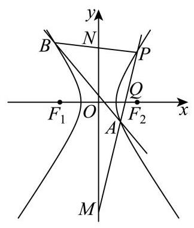
设 A ( x 1 , y 1 ) A\left( {{x}_{1},{y}_{1}}\right) A ( x 1 , y 1 ) P A {PA} P A y − 1 = y 1 − 1 x 1 − 2 ( x − 2 ) y - 1 = \frac{{y}_{1} - 1}{{x}_{1} - 2}\left( {x - 2}\right) y − 1 = x 1 − 2 y 1 − 1 ( x − 2 )
令 x = 0 x = 0 x = 0 y = − 2 y 1 + 2 x 1 − 2 + 1 = x 1 − 2 y 1 x 1 − 2 y = \frac{-2{y}_{1} + 2}{{x}_{1} - 2} + 1 = \frac{{x}_{1} - 2{y}_{1}}{{x}_{1} - 2} y = x 1 − 2 − 2 y 1 + 2 + 1 = x 1 − 2 x 1 − 2 y 1 M ( 0 , x 1 − 2 y 1 x 1 − 2 ) M\left( {0,\frac{{x}_{1} - 2{y}_{1}}{{x}_{1} - 2}}\right) M ( 0 , x 1 − 2 x 1 − 2 y 1 )
令 y = 0 y = 0 y = 0 − 1 = y 1 − 1 x 1 − 2 ( x − 2 ) ⇒ x = 2 − x 1 − 2 y 1 − 1 = 2 y 1 − x 1 y 1 − 1 - 1 = \frac{{y}_{1} - 1}{{x}_{1} - 2}\left( {x - 2}\right) \Rightarrow x = 2 - \frac{{x}_{1} - 2}{{y}_{1} - 1} = \frac{2{y}_{1} - {x}_{1}}{{y}_{1} - 1} − 1 = x 1 − 2 y 1 − 1 ( x − 2 ) ⇒ x = 2 − y 1 − 1 x 1 − 2 = y 1 − 1 2 y 1 − x 1 Q ( 2 y 1 − x 1 y 1 − 1 , 0 ) Q\left( {\frac{2{y}_{1} - {x}_{1}}{{y}_{1} - 1},0}\right) Q ( y 1 − 1 2 y 1 − x 1 , 0 )
由 M Q → = 2 Q P → \overrightarrow{MQ} = 2\overrightarrow{QP} MQ = 2 QP ( 2 y 1 − x 1 y 1 − 1 , − x 1 − 2 y 1 x 1 − 2 ) = 2 ( 2 − 2 y 1 − x 1 y 1 − 1 , 1 ) \left( {\frac{2{y}_{1} - {x}_{1}}{{y}_{1} - 1}, - \frac{{x}_{1} - 2{y}_{1}}{{x}_{1} - 2}}\right) = 2\left( {2 - \frac{2{y}_{1} - {x}_{1}}{{y}_{1} - 1},1}\right) ( y 1 − 1 2 y 1 − x 1 , − x 1 − 2 x 1 − 2 y 1 ) = 2 ( 2 − y 1 − 1 2 y 1 − x 1 , 1 )
则由纵坐标对应相等可得 − x 1 − 2 y 1 x 1 − 2 = 2 ⇒ y 1 = 3 x 1 − 4 2 - \frac{{x}_{1} - 2{y}_{1}}{{x}_{1} - 2} = 2 \Rightarrow {y}_{1} = \frac{3{x}_{1} - 4}{2} − x 1 − 2 x 1 − 2 y 1 = 2 ⇒ y 1 = 2 3 x 1 − 4
由 (1) 知双曲线化简为 x 2 − y 2 = 3 {x}^{2} - {y}^{2} = 3 x 2 − y 2 = 3 x 1 2 − ( 3 x 1 − 4 2 ) 2 = 3 ⇒ 5 x 1 2 − 24 x 1 + 28 = 0 {x}_{1}^{2} - {\left( \frac{3{x}_{1} - 4}{2}\right) }^{2} = 3 \Rightarrow 5{x}_{1}^{2} - {24}{x}_{1} + {28} = 0 x 1 2 − ( 2 3 x 1 − 4 ) 2 = 3 ⇒ 5 x 1 2 − 24 x 1 + 28 = 0
解得 x 1 = 14 5 {x}_{1} = \frac{14}{5} x 1 = 5 14 x 1 = 2 {x}_{1} = 2 x 1 = 2 P P P x 1 = 14 5 {x}_{1} = \frac{14}{5} x 1 = 5 14
【小问 3 详解】
设 M ( 0 , m ) M\left( {0, m}\right) M ( 0 , m ) M , N M, N M , N N ( 0 , − m ) N\left( {0, - m}\right) N ( 0 , − m )
计算得直线 P A , P B {PA},{PB} P A , PB k P A = 1 + m 2 , k P B = 1 − m 2 {k}_{PA} = \frac{1 + m}{2},{k}_{PB} = \frac{1 - m}{2} k P A = 2 1 + m , k PB = 2 1 − m
所以有 k P A + k P B = 1 − m 2 + 1 + m 2 = 1 {k}_{PA} + {k}_{PB} = \frac{1 - m}{2} + \frac{1 + m}{2} = 1 k P A + k PB = 2 1 − m + 2 1 + m = 1
设直线 A B : y = k x + s {AB} : y = {kx} + s A B : y = k x + s x 2 − y 2 = 3 {x}^{2} - {y}^{2} = 3 x 2 − y 2 = 3
可得: x 2 − ( k x + s ) 2 = 3 ⇒ ( 1 − k 2 ) x 2 − 2 k s x − s 2 − 3 = 0 {x}^{2} - {\left( kx + s\right) }^{2} = 3 \Rightarrow \left( {1 - {k}^{2}}\right) {x}^{2} - {2ksx} - {s}^{2} - 3 = 0 x 2 − ( k x + s ) 2 = 3 ⇒ ( 1 − k 2 ) x 2 − 2 k s x − s 2 − 3 = 0
设 A ( x A , y A ) , B ( x B , y B ) A\left( {{x}_{A},{y}_{A}}\right) , B\left( {{x}_{B},{y}_{B}}\right) A ( x A , y A ) , B ( x B , y B )
由韦达定理得 x A + x B = 2 k s 1 − k 2 , x A x B = − s 2 + 3 1 − k 2 {x}_{A} + {x}_{B} = \frac{2ks}{1 - {k}^{2}},{x}_{A}{x}_{B} = - \frac{{s}^{2} + 3}{1 - {k}^{2}} x A + x B = 1 − k 2 2 k s , x A x B = − 1 − k 2 s 2 + 3
由 k P A + k P B = 1 {k}_{PA} + {k}_{PB} = 1 k P A + k PB = 1 y A − 1 x A − 2 + y B − 1 x B − 2 = 1 ⇒ k x A + s − 1 x A − 2 + k x B + s − 1 x B − 2 = 1 \frac{{y}_{A} - 1}{{x}_{A} - 2} + \frac{{y}_{B} - 1}{{x}_{B} - 2} = 1 \Rightarrow \frac{k{x}_{A} + s - 1}{{x}_{A} - 2} + \frac{k{x}_{B} + s - 1}{{x}_{B} - 2} = 1 x A − 2 y A − 1 + x B − 2 y B − 1 = 1 ⇒ x A − 2 k x A + s − 1 + x B − 2 k x B + s − 1 = 1
整理得: ( k x A + s − 1 ) ( x B − 2 ) + ( k x B + s − 1 ) ( x A − 2 ) = ( x A − 2 ) ( x B − 2 ) \left( {k{x}_{A} + s - 1}\right) \left( {{x}_{B} - 2}\right) + \left( {k{x}_{B} + s - 1}\right) \left( {{x}_{A} - 2}\right) = \left( {{x}_{A} - 2}\right) \left( {{x}_{B} - 2}\right) ( k x A + s − 1 ) ( x B − 2 ) + ( k x B + s − 1 ) ( x A − 2 ) = ( x A − 2 ) ( x B − 2 )
所以 2 k x A x B + ( s − 1 − 2 k ) ( x A + x B ) − 4 ( s − 1 ) = x A x B − 2 ( x A + x B ) + 4 {2k}{x}_{A}{x}_{B} + \left( {s - 1 - {2k}}\right) \left( {{x}_{A} + {x}_{B}}\right) - 4\left( {s - 1}\right) = {x}_{A}{x}_{B} - 2\left( {{x}_{A} + {x}_{B}}\right) + 4 2 k x A x B + ( s − 1 − 2 k ) ( x A + x B ) − 4 ( s − 1 ) = x A x B − 2 ( x A + x B ) + 4
所以 ( 2 k − 1 ) x A x B + ( s + 1 − 2 k ) ( x A + x B ) − 4 s = 0 \left( {{2k} - 1}\right) {x}_{A}{x}_{B} + \left( {s + 1 - {2k}}\right) \left( {{x}_{A} + {x}_{B}}\right) - {4s} = 0 ( 2 k − 1 ) x A x B + ( s + 1 − 2 k ) ( x A + x B ) − 4 s = 0
代入韦达定理可得: ( 2 k − 1 ) ( − s 2 + 3 1 − k 2 ) + ( s + 1 − 2 k ) 2 k s 1 − k 2 − 4 s = 0 \left( {{2k} - 1}\right) \left( {-\frac{{s}^{2} + 3}{1 - {k}^{2}}}\right) + \left( {s + 1 - {2k}}\right) \frac{2ks}{1 - {k}^{2}} - {4s} = 0 ( 2 k − 1 ) ( − 1 − k 2 s 2 + 3 ) + ( s + 1 − 2 k ) 1 − k 2 2 k s − 4 s = 0
所以 − ( 2 k − 1 ) ( s 2 + 3 ) + ( s + 1 − 2 k ) 2 k s − 4 s ( 1 − k 2 ) = 0 - \left( {{2k} - 1}\right) \left( {{s}^{2} + 3}\right) + \left( {s + 1 - {2k}}\right) {2ks} - {4s}\left( {1 - {k}^{2}}\right) = 0 − ( 2 k − 1 ) ( s 2 + 3 ) + ( s + 1 − 2 k ) 2 k s − 4 s ( 1 − k 2 ) = 0
所以 − 2 k s 2 − 6 k + s 2 + 3 + 2 k s 2 + 2 k s − 4 k 2 s − 4 s + 4 k 2 s = 0 - {2k}{s}^{2} - {6k} + {s}^{2} + 3 + {2k}{s}^{2} + {2ks} - 4{k}^{2}s - {4s} + 4{k}^{2}s = 0 − 2 k s 2 − 6 k + s 2 + 3 + 2 k s 2 + 2 k s − 4 k 2 s − 4 s + 4 k 2 s = 0
所以 − 6 k + s 2 + 3 + 2 k s − 4 s = 0 - {6k} + {s}^{2} + 3 + {2ks} - {4s} = 0 − 6 k + s 2 + 3 + 2 k s − 4 s = 0
所以 2 k ( s − 3 ) + ( s − 3 ) ( s − 1 ) = 0 ⇒ ( s − 3 ) ( 2 k + s − 1 ) = 0 {2k}\left( {s - 3}\right) + \left( {s - 3}\right) \left( {s - 1}\right) = 0 \Rightarrow \left( {s - 3}\right) \left( {{2k} + s - 1}\right) = 0 2 k ( s − 3 ) + ( s − 3 ) ( s − 1 ) = 0 ⇒ ( s − 3 ) ( 2 k + s − 1 ) = 0 s = 3 s = 3 s = 3 s = 1 − 2 k s = 1 - {2k} s = 1 − 2 k s = 1 − 2 k s = 1 - {2k} s = 1 − 2 k A B : y = k x + 1 − 2 k = k ( x − 2 ) + 1 {AB} : y = {kx} + 1 - {2k} = k\left( {x - 2}\right) + 1 A B : y = k x + 1 − 2 k = k ( x − 2 ) + 1 P ( 2 , 1 ) P\left( {2,1}\right) P ( 2 , 1 ) s = 3 s = 3 s = 3 A B : y = k x + 3 {AB} : y = {kx} + 3 A B : y = k x + 3 ( 0 , 3 ) \left( {0,3}\right) ( 0 , 3 )
静安 · 第10题 ★★★☆☆ · 教师预估 如图所示，在 A B C {ABC} A BC ∠ B A C = π 3 \angle {BAC} = \frac{\pi }{3} ∠ B A C = 3 π ∣ A C ∣ = 2 ∣ A B ∣ \left| {AC}\right| = 2\left| {AB}\right| ∣ A C ∣ = 2 ∣ A B ∣ ∣ A B ∣ = 1 \left| {AB}\right| = 1 ∣ A B ∣ = 1 P P P A C {AC} A C D D D A B {AB} A B ∣ A D ∣ = 2 ∣ D B ∣ \left| {AD}\right| = 2\left| {DB}\right| ∣ A D ∣ = 2 ∣ D B ∣ C D {CD} C D B P {BP} BP R R R ∣ C R ∣ = \left| {CR}\right| = ∣ CR ∣ =
考点： 三角形分点与坐标。难度依据： 三角形分点与坐标
展开答案与解析 【答案】 7 2 \frac{\sqrt{7}}{2} 2 7
【解析】
【分析】 建立平面直角坐标系,求出直线 P B 、 C D {PB}\text{ 、 }{CD} PB 、 C D R R R ∣ C R ∣ \left| {CR}\right| ∣ CR ∣
【详解】 因为 ∣ A C ∣ = 2 ∣ A B ∣ , ∣ A B ∣ = 1 \left| {AC}\right| = 2\left| {AB}\right| ,\left| {AB}\right| = 1 ∣ A C ∣ = 2 ∣ A B ∣ , ∣ A B ∣ = 1 ∣ A C ∣ = 2 \left| {AC}\right| = 2 ∣ A C ∣ = 2
以点 A A A A B {AB} A B x x x
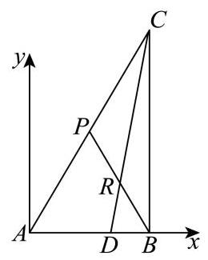
则 A ( 0 , 0 ) , B ( 1 , 0 ) , C ( 2 cos π 3 , 2 sin π 3 ) A\left( {0,0}\right) , B\left( {1,0}\right) , C\left( {2\cos \frac{\pi }{3},2\sin \frac{\pi }{3}}\right) A ( 0 , 0 ) , B ( 1 , 0 ) , C ( 2 cos 3 π , 2 sin 3 π ) C ( 1 , 3 ) C\left( {1,\sqrt{3}}\right) C ( 1 , 3 )
因为 P P P A C {AC} A C P ( 1 2 , 3 2 ) P\left( {\frac{1}{2},\frac{\sqrt{3}}{2}}\right) P ( 2 1 , 2 3 )
因为 ∣ A D ∣ = 2 ∣ D B ∣ \left| {AD}\right| = 2\left| {DB}\right| ∣ A D ∣ = 2 ∣ D B ∣ D ( 2 3 , 0 ) D\left( {\frac{2}{3},0}\right) D ( 3 2 , 0 )
直线 P B : y = 3 2 − 0 1 2 − 1 ( x − 1 ) {PB} : y = \frac{\frac{\sqrt{3}}{2} - 0}{\frac{1}{2} - 1}\left( {x - 1}\right) PB : y = 2 1 − 1 2 3 − 0 ( x − 1 ) y = − 3 ( x − 1 ) y = - \sqrt{3}\left( {x - 1}\right) y = − 3 ( x − 1 )
直线 C D : y = 3 − 0 1 − 2 3 ( x − 2 3 ) {CD} : \;y = \frac{\sqrt{3} - 0}{1 - \frac{2}{3}}\left( {x - \frac{2}{3}}\right) C D : y = 1 − 3 2 3 − 0 ( x − 3 2 ) y = 3 3 ( x − 2 3 ) y = 3\sqrt{3}\left( {x - \frac{2}{3}}\right) y = 3 3 ( x − 3 2 )
联立 { y = − 3 ( x − 1 ) y = 3 3 ( x − 2 3 ) \left\{ \begin{array}{l} y = - \sqrt{3}\left( {x - 1}\right) \\ y = 3\sqrt{3}\left( {x - \frac{2}{3}}\right) \end{array}\right. { y = − 3 ( x − 1 ) y = 3 3 ( x − 3 2 ) { x = 3 4 y = 3 4 \left\{ \begin{array}{l} x = \frac{3}{4} \\ y = \frac{\sqrt{3}}{4} \end{array}\right. { x = 4 3 y = 4 3 R ( 3 4 , 3 4 ) R\left( {\frac{3}{4},\frac{\sqrt{3}}{4}}\right) R ( 4 3 , 4 3 )
故 ∣ C R ∣ = ( 3 4 − 1 ) 2 + ( 3 4 − 3 ) 2 = 7 2 \left| {CR}\right| = \sqrt{{\left( \frac{3}{4} - 1\right) }^{2} + {\left( \frac{\sqrt{3}}{4} - \sqrt{3}\right) }^{2}} = \frac{\sqrt{7}}{2} ∣ CR ∣ = ( 4 3 − 1 ) 2 + ( 4 3 − 3 ) 2 = 2 7
黄浦 · 第20题 ★★★★★ · 教师预估 本题资料或解析有待核事项，预览不可作为已审定成品。
已知点 F 1 、 F 2 {F}_{1}\text{ 、 }{F}_{2} F 1 、 F 2 Γ : x 2 6 + y 2 2 = 1 \Gamma : \frac{{x}^{2}}{6} + \frac{{y}^{2}}{2} = 1 Γ : 6 x 2 + 2 y 2 = 1 l l l F 1 {F}_{1} F 1 F 2 {F}_{2} F 2 Γ \Gamma Γ P 、 Q P\text{ 、 }Q P 、 Q
(1)求点 F 1 、 F 2 {F}_{1}\text{ 、 }{F}_{2} F 1 、 F 2
(2)若 F 2 P → ⋅ F 2 Q → = 11 \overrightarrow{{F}_{2}P} \cdot \overrightarrow{{F}_{2}Q} = {11} F 2 P ⋅ F 2 Q = 11 l l l
(3)设直线 l 1 {l}_{1} l 1 F 1 {F}_{1} F 1 l l l l 2 : x = m {l}_{2} : x = m l 2 : x = m l 1 {l}_{1} l 1 T T T m m m T T T Γ \Gamma Γ P Q {PQ} PQ ∣ P Q ∣ ∣ T F 1 ∣ \frac{\left| PQ\right| }{\left| T{F}_{1}\right| } ∣ T F 1 ∣ ∣ PQ ∣
考点： （1）椭圆焦点坐标；（2）向量数量积与弦；（3）弦中点定点及长度比最值。难度依据： 椭圆焦点弦与定点最值；数量积与弦
核查说明： 解析末尾均值不等式表达疑有OCR错误，需核原解。
展开答案与解析 【答案】 (1) F 1 ( − 2 , 0 ) 、 F 2 ( 2 , 0 ) {F}_{1}\left( {-2,0}\right) \text{ 、 }{F}_{2}\left( {2,0}\right) F 1 ( − 2 , 0 ) 、 F 2 ( 2 , 0 )
(2) x + y + 2 = 0 x + y + 2 = 0 x + y + 2 = 0 x − y + 2 = 0 x - y + 2 = 0 x − y + 2 = 0
(3) 3 \sqrt{3} 3
【解析】
【分析】 (1) 求出椭圆 Γ \Gamma Γ F 1 、 F 2 {F}_{1}\text{ 、 }{F}_{2} F 1 、 F 2
(2)设直线 l l l x = t y − 2 x = {ty} - 2 x = t y − 2 P ( x 1 , y 1 ) P\left( {{x}_{1},{y}_{1}}\right) P ( x 1 , y 1 ) Q ( x 2 , y 2 ) Q\left( {{x}_{2},{y}_{2}}\right) Q ( x 2 , y 2 ) t t t l l l
(3)求出线段 P Q {PQ} PQ N N N O N {ON} ON x = m x = m x = m T F 1 T{F}_{1} T F 1 T T T O T {OT} OT O N 、 O T {ON}\text{ 、 }{OT} ON 、 OT m m m ∣ P Q ∣ 、 ∣ T F 1 ∣ \left| {PQ}\right| \text{ 、 }\left| {T{F}_{1}}\right| ∣ PQ ∣ 、 ∣ T F 1 ∣ ∣ P Q ∣ ∣ T F 1 ∣ \frac{\left| PQ\right| }{\left| T{F}_{1}\right| } ∣ T F 1 ∣ ∣ PQ ∣
【小问 1 详解】
椭圆 Γ \Gamma Γ c = 6 − 2 = 2 c = \sqrt{6 - 2} = 2 c = 6 − 2 = 2 F 1 ( − 2 , 0 ) 、 F 2 ( 2 , 0 ) {F}_{1}\left( {-2,0}\right) \text{ 、 }{F}_{2}\left( {2,0}\right) F 1 ( − 2 , 0 ) 、 F 2 ( 2 , 0 )
【小问 2 详解】
由题意可知直线 l l l x x x l l l x = t y − 2 x = {ty} - 2 x = t y − 2 P ( x 1 , y 1 ) 、 Q ( x 2 , y 2 ) P\left( {{x}_{1},{y}_{1}}\right) \text{ 、 }Q\left( {{x}_{2},{y}_{2}}\right) P ( x 1 , y 1 ) 、 Q ( x 2 , y 2 )
将 x = t y − 2 x = {ty} - 2 x = t y − 2 x 2 6 + y 2 2 = 1 \frac{{x}^{2}}{6} + \frac{{y}^{2}}{2} = 1 6 x 2 + 2 y 2 = 1 ( t 2 + 3 ) y 2 − 4 t y − 2 = 0 \left( {{t}^{2} + 3}\right) {y}^{2} - {4ty} - 2 = 0 ( t 2 + 3 ) y 2 − 4 t y − 2 = 0 Δ = 16 t 2 + 8 ( t 2 + 3 ) = 24 ( t 2 + 1 ) > 0 , \Delta = {16}{t}^{2} + 8\left( {{t}^{2} + 3}\right) = {24}\left( {{t}^{2} + 1}\right) > 0, Δ = 16 t 2 + 8 ( t 2 + 3 ) = 24 ( t 2 + 1 ) > 0 ,
故 y 1 + y 2 = 4 t t 2 + 3 , y 1 ⋅ y 2 = − 2 t 2 + 3 {y}_{1} + {y}_{2} = \frac{4t}{{t}^{2} + 3},{y}_{1} \cdot {y}_{2} = \frac{-2}{{t}^{2} + 3} y 1 + y 2 = t 2 + 3 4 t , y 1 ⋅ y 2 = t 2 + 3 − 2
又 F 2 P → = ( x 1 − 2 , y 1 ) , F 2 Q → = ( x 2 − 2 , y 2 ) \overrightarrow{{F}_{2}P} = \left( {{x}_{1} - 2,{y}_{1}}\right) ,\overrightarrow{{F}_{2}Q} = \left( {{x}_{2} - 2,{y}_{2}}\right) F 2 P = ( x 1 − 2 , y 1 ) , F 2 Q = ( x 2 − 2 , y 2 )
F 2 P → ⋅ F 2 Q → = ( x 1 − 2 ) ( x 2 − 2 ) + y 1 y 2 = ( t y 1 − 4 ) ( t y 2 − 4 ) + y 1 y 2 = ( t 2 + 1 ) y 1 y 2 − 4 t ( y 1 + y 2 ) + 16 = t 2 + 1 t 2 + 3 ( − 2 ) − 4 t ⋅ 4 t t 2 + 3 + 16 = − 18 t 2 − 2 t 2 + 3 + 16 = 11 \overrightarrow{{F}_{2}P} \cdot \overrightarrow{{F}_{2}Q} = \left( {{x}_{1} - 2}\right) \left( {{x}_{2} - 2}\right) + {y}_{1}{y}_{2} = \left( {t{y}_{1} - 4}\right) \left( {t{y}_{2} - 4}\right) + {y}_{1}{y}_{2} = \left( {{t}^{2} + 1}\right) {y}_{1}{y}_{2} - {4t}\left( {{y}_{1} + {y}_{2}}\right) + {16} \; = \frac{{t}^{2} + 1}{{t}^{2} + 3}\left( {-2}\right) - {4t} \cdot \frac{4t}{{t}^{2} + 3} + {16} = \frac{-{18}{t}^{2} - 2}{{t}^{2} + 3} + {16} = {11} F 2 P ⋅ F 2 Q = ( x 1 − 2 ) ( x 2 − 2 ) + y 1 y 2 = ( t y 1 − 4 ) ( t y 2 − 4 ) + y 1 y 2 = ( t 2 + 1 ) y 1 y 2 − 4 t ( y 1 + y 2 ) + 16 = t 2 + 3 t 2 + 1 ( − 2 ) − 4 t ⋅ t 2 + 3 4 t + 16 = t 2 + 3 − 18 t 2 − 2 + 16 = 11 t = ± 1 t = \pm 1 t = ± 1
所以直线 l l l x + y + 2 = 0 x + y + 2 = 0 x + y + 2 = 0 x − y + 2 = 0 x - y + 2 = 0 x − y + 2 = 0
【小问 3 详解】
设线段 P Q {PQ} PQ N ( x 0 , y 0 ) N\left( {{x}_{0},{y}_{0}}\right) N ( x 0 , y 0 ) y 0 = 2 t t 2 + 3 , x 0 = t y 0 − 2 = − 6 t 2 + 3 {y}_{0} = \frac{2t}{{t}^{2} + 3},{x}_{0} = t{y}_{0} - 2 = \frac{-6}{{t}^{2} + 3} y 0 = t 2 + 3 2 t , x 0 = t y 0 − 2 = t 2 + 3 − 6 O N {ON} ON k 1 = − t 3 {k}_{1} = - \frac{t}{3} k 1 = − 3 t
易知直线 T F 1 T{F}_{1} T F 1 t ( x + 2 ) + y = 0 t\left( {x + 2}\right) + y = 0 t ( x + 2 ) + y = 0
将 x = m x = m x = m T F 1 T{F}_{1} T F 1 t ( x + 2 ) + y = 0 t\left( {x + 2}\right) + y = 0 t ( x + 2 ) + y = 0 T ( m , − ( m + 2 ) t ) T\left( {m, - \left( {m + 2}\right) t}\right) T ( m , − ( m + 2 ) t )
直线 O T {OT} OT k 2 = − ( m + 2 ) t m {k}_{2} = - \frac{\left( {m + 2}\right) t}{m} k 2 = − m ( m + 2 ) t
因为直线 O T {OT} OT P Q {PQ} PQ k 1 = k 2 {k}_{1} = {k}_{2} k 1 = k 2 − ( m + 2 ) t m = − t 3 - \frac{\left( {m + 2}\right) t}{m} = - \frac{t}{3} − m ( m + 2 ) t = − 3 t t t t
则 m + 2 m = 1 3 \frac{m + 2}{m} = \frac{1}{3} m m + 2 = 3 1 m = − 3 m = - 3 m = − 3
故存在唯一的常数 m m m O T {OT} OT P Q {PQ} PQ
此时 ∣ P Q ∣ = 1 + t 2 ∣ y 1 − y 2 ∣ = 1 + t 2 ⋅ ( 4 t t 2 + 3 ) 2 + 8 t 2 + 3 = 2 6 ( 1 + t 2 ) t 2 + 3 \left| {PQ}\right| = \sqrt{1 + {t}^{2}}\left| {{y}_{1} - {y}_{2}}\right| = \sqrt{1 + {t}^{2}} \cdot \sqrt{{\left( \frac{4t}{{t}^{2} + 3}\right) }^{2} + \frac{8}{{t}^{2} + 3}} = \frac{2\sqrt{6}\left( {1 + {t}^{2}}\right) }{{t}^{2} + 3} ∣ PQ ∣ = 1 + t 2 ∣ y 1 − y 2 ∣ = 1 + t 2 ⋅ ( t 2 + 3 4 t ) 2 + t 2 + 3 8 = t 2 + 3 2 6 ( 1 + t 2 )
∣ T F 1 ∣ = 1 + t 2 \left| {T{F}_{1}}\right| = \sqrt{1 + {t}^{2}} ∣ T F 1 ∣ = 1 + t 2 ∣ P Q ∣ ∣ T F 1 ∣ = 2 6 ⋅ 1 + t 2 t 2 + 3 \frac{\left| PQ\right| }{\left| T{F}_{1}\right| } = 2\sqrt{6} \cdot \frac{\sqrt{1 + {t}^{2}}}{{t}^{2} + 3} ∣ T F 1 ∣ ∣ PQ ∣ = 2 6 ⋅ t 2 + 3 1 + t 2
令 1 + t 2 = z \sqrt{1 + {t}^{2}} = z 1 + t 2 = z z ∈ [ 1 , + ∞ ) z \in \lbrack 1, + \infty ) z ∈ [ 1 , + ∞ ) ∣ P Q ∣ ∣ T F 1 ∣ = 2 6 z z 2 + 2 ≤ 2 6 z 2 2 z = 3 \frac{\left| PQ\right| }{\left| T{F}_{1}\right| } = \frac{2\sqrt{6}z}{{z}^{2} + 2} \leq \frac{2\sqrt{6}z}{2\sqrt{2z}} = \sqrt{3} ∣ T F 1 ∣ ∣ PQ ∣ = z 2 + 2 2 6 z ≤ 2 2 z 2 6 z = 3 z = 2 ∈ [ 1 , + ∞ ) z = \sqrt{2} \in \lbrack 1, + \infty ) z = 2 ∈ [ 1 , + ∞ )
时， ∣ P Q ∣ ∣ T F 1 ∣ = 3 \frac{\left| PQ\right| }{\left| T{F}_{1}\right| } = \sqrt{3} ∣ T F 1 ∣ ∣ PQ ∣ = 3
所以 ∣ P Q ∣ ∣ T F 1 ∣ \frac{\left| PQ\right| }{\left| T{F}_{1}\right| } ∣ T F 1 ∣ ∣ PQ ∣ 3 \sqrt{3} 3
空间坐标、法向量与角距 明确建系依据，以法向量及投影求线面角、距离和数量积。
嘉定 · 第18题 ★★★☆☆ · 教师预估 本题资料或解析有待核事项，预览不可作为已审定成品。
如图，在 A B C {ABC} A BC ∠ A C B = 90 ∘ \angle {ACB} = {90}^{ \circ } ∠ A CB = 90 ∘ D A ⊥ {DA}\bot D A ⊥ A B C {ABC} A BC M M M N N N A C {AC} A C D B {DB} D B
(1)求证: M N ⊥ A C {MN}\bot {AC} MN ⊥ A C
(2)若 A C = B C = A D = 2 {AC} = {BC} = {AD} = 2 A C = BC = A D = 2 M N {MN} MN A B D {ABD} A B D
考点： (1) 空间垂直关系证明；(2) 建系求直线与平面所成角。难度依据： 空间建系求线面角
核查说明： 题干与答案解析尚未逐页对照原卷，数学内容未独立终审。
展开答案与解析 【答案】 (1) 证明见解析
(2) π 6 \frac{\pi }{6} 6 π
【解析】
【分析】 (1) 建立适当空间直角坐标系,设 A C = a , B C = b , A D = c {AC} = a,{BC} = b,{AD} = c A C = a , BC = b , A D = c M N → , A C → \overrightarrow{MN},\overrightarrow{AC} MN , A C M N → ⋅ A C → = 0 \overrightarrow{MN} \cdot \overrightarrow{AC} = 0 MN ⋅ A C = 0 M N ⊥ A C {MN} \bot {AC} MN ⊥ A C
(2)求出平面 A B D {ABD} A B D n → \overrightarrow{n} n sin θ = ∣ cos ⟨ M N → , n → ⟩ ∣ \sin \theta = \left| {\cos \langle \overrightarrow{MN},\overrightarrow{n}\rangle }\right| sin θ = cos ⟨ MN , n ⟩ M N {MN} MN A B D {ABD} A B D θ \theta θ
【小问 1 详解】
由题可建立如图所示的空间直角坐标系. 设 A C = a , B C = b , A D = c {AC} = a,{BC} = b,{AD} = c A C = a , BC = b , A D = c
则 C ( 0 , 0 , 0 ) , A ( − a , 0 , 0 ) , B ( 0 , b , 0 ) , D ( − a , 0 , c ) , M ( − a 2 , 0 , 0 ) , N ( − a 2 , b 2 , c 2 ) C\left( {0,0,0}\right) , A\left( {-a,0,0}\right) , B\left( {0, b,0}\right) , D\left( {-a,0, c}\right) , M\left( {-\frac{a}{2},0,0}\right) , N\left( {-\frac{a}{2},\frac{b}{2},\frac{c}{2}}\right) C ( 0 , 0 , 0 ) , A ( − a , 0 , 0 ) , B ( 0 , b , 0 ) , D ( − a , 0 , c ) , M ( − 2 a , 0 , 0 ) , N ( − 2 a , 2 b , 2 c )
所以 M N → = ( 0 , b 2 , c 2 ) , A C → = ( a , 0 , 0 ) \overrightarrow{MN} = \left( {0,\frac{b}{2},\frac{c}{2}}\right) ,\overrightarrow{AC} = \left( {a,0,0}\right) MN = ( 0 , 2 b , 2 c ) , A C = ( a , 0 , 0 )
所以 M N → ⋅ A C → = 0 × a + b 2 × 0 + c 2 × 0 = 0 , ∴ M N ⊥ A C \overrightarrow{MN} \cdot \overrightarrow{AC} = 0 \times a + \frac{b}{2} \times 0 + \frac{c}{2} \times 0 = 0,\therefore {MN} \bot {AC} MN ⋅ A C = 0 × a + 2 b × 0 + 2 c × 0 = 0 , ∴ MN ⊥ A C
【小问 2 详解】
∵ A C = B C = A D = 2 \because {AC} = {BC} = {AD} = 2 ∵ A C = BC = A D = 2
∴ C ( 0 , 0 , 0 ) , A ( − 2 , 0 , 0 ) , B ( 0 , 2 , 0 ) , D ( − 2 , 0 , 2 ) , M ( − 1 , 0 , 0 ) , N ( − 1 , 1 , 1 ) \therefore C\left( {0,0,0}\right) , A\left( {-2,0,0}\right) , B\left( {0,2,0}\right) , D\left( {-2,0,2}\right) , M\left( {-1,0,0}\right) , N\left( {-1,1,1}\right) ∴ C ( 0 , 0 , 0 ) , A ( − 2 , 0 , 0 ) , B ( 0 , 2 , 0 ) , D ( − 2 , 0 , 2 ) , M ( − 1 , 0 , 0 ) , N ( − 1 , 1 , 1 )
∴ M N → = ( 0 , 1 , 1 ) , ∣ M N → ∣ = 0 2 + 1 2 + 1 2 = 2 , A B → = ( 2 , 2 , 0 ) , A D → = ( 0 , 0 , 2 ) \therefore \overrightarrow{MN} = \left( {0,1,1}\right) ,\left| \overrightarrow{MN}\right| = \sqrt{{0}^{2} + {1}^{2} + {1}^{2}} = \sqrt{2},\overrightarrow{AB} = \left( {2,2,0}\right) ,\overrightarrow{AD} = \left( {0,0,2}\right) ∴ MN = ( 0 , 1 , 1 ) , MN = 0 2 + 1 2 + 1 2 = 2 , A B = ( 2 , 2 , 0 ) , A D = ( 0 , 0 , 2 )
记平面 A B D {ABD} A B D n → = ( x , y , z ) \overrightarrow{n} = \left( {x, y, z}\right) n = ( x , y , z )
则 { n → ⋅ A D → = 2 z = 0 n → ⋅ A B → = 2 x + 2 y = 0 \left\{ \begin{matrix} \overrightarrow{n} \cdot \overrightarrow{AD} = {2z} = 0 \\ \overrightarrow{n} \cdot \overrightarrow{AB} = {2x} + {2y} = 0 \end{matrix}\right. { n ⋅ A D = 2 z = 0 n ⋅ A B = 2 x + 2 y = 0 x = 1 x = 1 x = 1 y = − 1 , z = 0 y = - 1, z = 0 y = − 1 , z = 0
∴ n → = ( 1 , − 1 , 0 ) , ∣ n → ∣ = 1 2 + ( − 1 ) 2 + 0 2 = 2 \therefore \overrightarrow{n} = \left( {1, - 1,0}\right) ,\left| \overrightarrow{n}\right| = \sqrt{{1}^{2} + {\left( -1\right) }^{2} + {0}^{2}} = \sqrt{2} ∴ n = ( 1 , − 1 , 0 ) , n = 1 2 + ( − 1 ) 2 + 0 2 = 2
记直线 M N {MN} MN A B D {ABD} A B D θ \theta θ
则 sin θ = ∣ cos ⟨ M N → , n → ⟩ ∣ = ∣ M N → ⋅ n → ∣ ∣ M N → ∣ ∣ n → ∣ = ∣ 0 × 1 + 1 × ( − 1 ) + 1 × 0 ∣ 2 × 2 = 1 2 \sin \theta = \left| {\cos \langle \overrightarrow{MN},\overrightarrow{n}\rangle }\right| = \frac{\left| \overrightarrow{MN} \cdot \overrightarrow{n}\right| }{\left| \overrightarrow{MN}\right| \left| \overrightarrow{n}\right| } = \frac{\left| 0 \times 1 + 1 \times \left( -1\right) + 1 \times 0\right| }{\sqrt{2} \times \sqrt{2}} = \frac{1}{2} sin θ = cos ⟨ MN , n ⟩ = MN ∣ n ∣ MN ⋅ n = 2 × 2 ∣ 0 × 1 + 1 × ( − 1 ) + 1 × 0 ∣ = 2 1
又 ∵ θ ∈ [ 0 , π 2 ] , ∴ θ = π 6 \because \theta \in \left\lbrack {0,\frac{\pi }{2}}\right\rbrack ,\therefore \theta = \frac{\pi }{6} ∵ θ ∈ [ 0 , 2 π ] , ∴ θ = 6 π
奉贤 · 第19题 ★★★☆☆ · 教师预估 在四棱锥 P − A B C D P - {ABCD} P − A BC D A B C D {ABCD} A BC D P A = P C = 5 , P B = P D = 2 5 {PA} = {PC} = 5,{PB} = {PD} = 2\sqrt{5} P A = PC = 5 , PB = P D = 2 5 A C = 6 {AC} = 6 A C = 6 F F F P D {PD} P D E E E P B {PB} PB P E → = λ P B → , λ ∈ ( 0 , 1 ) \overrightarrow{PE} = \lambda \overrightarrow{PB},\lambda \in \left( {0,1}\right) PE = λ PB , λ ∈ ( 0 , 1 ) A F E {AFE} A FE P C {PC} PC G G G
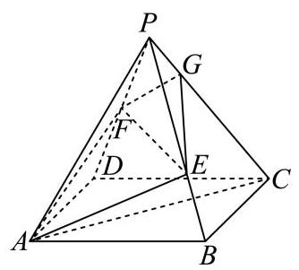
图1
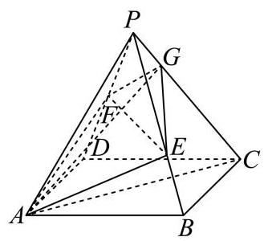
图2
(1)求证:异面直线 E F {EF} EF A C {AC} A C
(2)当 λ = 2 3 \lambda = \frac{2}{3} λ = 3 2 A G {AG} A G A B C D {ABCD} A BC D
考点： (1) 异面直线垂直证明；(2) 空间坐标及截面交点求线面角。难度依据： 空间垂直与线面角；空间坐标和法向量
展开答案与解析 【答案】 (1) 证明见解析
(2) arcsin 4 65 65 \arcsin \frac{4\sqrt{65}}{65} arcsin 65 4 65
【解析】
【分析】 (1) 建立空间直角坐标系,求出 E F → , A C → \overrightarrow{EF},\overrightarrow{AC} EF , A C E F → ⋅ A C → = 0 \overrightarrow{EF} \cdot \overrightarrow{AC} = 0 EF ⋅ A C = 0
(2)求出 A E → \overrightarrow{AE} A E G G G A G → \overrightarrow{AG} A G
【小问 1 详解】
已知四边形 A B C D {ABCD} A BC D A C ⊥ B D {AC} \bot {BD} A C ⊥ B D A C ∩ B D = O {AC} \cap {BD} = O A C ∩ B D = O O O O A C , B D {AC},{BD} A C , B D
∵ P A = P C = 5 , P B = P D = 2 5 \because {PA} = {PC} = 5,{PB} = {PD} = 2\sqrt{5} ∵ P A = PC = 5 , PB = P D = 2 5
∴ P O ⊥ A C , P O ⊥ B D \therefore {PO} \bot {AC},{PO} \bot {BD} ∴ PO ⊥ A C , PO ⊥ B D
∵ A C ∩ B D = O \because {AC} \cap {BD} = O ∵ A C ∩ B D = O A C , B D ⊂ {AC},{BD} \subset A C , B D ⊂ A B C D {ABCD} A BC D
∴ P O ⊥ \therefore {PO} \bot ∴ PO ⊥ A B C D {ABCD} A BC D
以 O O O O A {OA} O A x x x O B {OB} OB y y y O P {OP} OP z z z
∵ A C = 6 , ∴ O A = 3 , O P = A P 2 − O A 2 = 5 2 − 3 2 = 4 \because {AC} = 6,\therefore {OA} = 3,{OP} = \sqrt{A{P}^{2} - O{A}^{2}} = \sqrt{{5}^{2} - {3}^{2}} = 4 ∵ A C = 6 , ∴ O A = 3 , OP = A P 2 − O A 2 = 5 2 − 3 2 = 4
O B = P B 2 − O P 2 = ( 2 5 ) 2 − 4 2 = 2 , {OB} = \sqrt{P{B}^{2} - O{P}^{2}} = \sqrt{{\left( 2\sqrt{5}\right) }^{2} - {4}^{2}} = 2, OB = P B 2 − O P 2 = ( 2 5 ) 2 − 4 2 = 2 ,
∴ A ( 3 , 0 , 0 ) , B ( 0 , 2 , 0 ) , C ( − 3 , 0 , 0 ) , D ( 0 , − 2 , 0 ) , P ( 0 , 0 , 4 ) \therefore A\left( {3,0,0}\right) , B\left( {0,2,0}\right) , C\left( {-3,0,0}\right) , D\left( {0, - 2,0}\right) , P\left( {0,0,4}\right) ∴ A ( 3 , 0 , 0 ) , B ( 0 , 2 , 0 ) , C ( − 3 , 0 , 0 ) , D ( 0 , − 2 , 0 ) , P ( 0 , 0 , 4 )
∵ F \because F ∵ F P D {PD} P D
∴ F ( 0 , − 1 , 2 ) \therefore F\left( {0, - 1,2}\right) ∴ F ( 0 , − 1 , 2 )
∵ \because ∵ E E E P B {PB} PB P E → = λ P B → , P B → = ( 0 , 2 , − 4 ) \overrightarrow{PE} = \lambda \overrightarrow{PB},\overrightarrow{PB} = \left( {0,2, - 4}\right) PE = λ PB , PB = ( 0 , 2 , − 4 )
∴ P E → = ( 0 , 2 λ , − 4 λ ) \therefore \overrightarrow{PE} = \left( {0,{2\lambda }, - {4\lambda }}\right) ∴ PE = ( 0 , 2 λ , − 4 λ ) E ( 0 , 2 λ , 4 − 4 λ ) E\left( {0,{2\lambda },4 - {4\lambda }}\right) E ( 0 , 2 λ , 4 − 4 λ )
∴ E F → = ( 0 , − 1 − 2 λ , − 2 + 4 λ ) \therefore \overrightarrow{EF} = \left( {0, - 1 - {2\lambda }, - 2 + {4\lambda }}\right) ∴ EF = ( 0 , − 1 − 2 λ , − 2 + 4 λ )
∵ A C → = ( − 6 , 0 , 0 ) \because \overrightarrow{AC} = \left( {-6,0,0}\right) ∵ A C = ( − 6 , 0 , 0 )
∴ E F → ⋅ A C → = 0 × ( − 6 ) + ( − 1 − 2 λ ) × 0 + ( − 2 + 4 λ ) × 0 = 0 \therefore \overrightarrow{EF} \cdot \overrightarrow{AC} = 0 \times \left( {-6}\right) + \left( {-1 - {2\lambda }}\right) \times 0 + \left( {-2 + {4\lambda }}\right) \times 0 = 0 ∴ EF ⋅ A C = 0 × ( − 6 ) + ( − 1 − 2 λ ) × 0 + ( − 2 + 4 λ ) × 0 = 0 E F → ⊥ A C → \overrightarrow{EF} \bot \overrightarrow{AC} EF ⊥ A C
∴ \therefore ∴ E F {EF} EF A C {AC} A C
【小问 2 详解】
当 λ = 2 3 \lambda = \frac{2}{3} λ = 3 2 E ( 0 , 4 3 , 4 3 ) , A E → = ( − 3 , 4 3 , 4 3 ) , A F → = ( − 3 , − 1 , 2 ) E\left( {0,\frac{4}{3},\frac{4}{3}}\right) ,\overrightarrow{AE} = \left( {-3,\frac{4}{3},\frac{4}{3}}\right) ,\overrightarrow{AF} = \left( {-3, - 1,2}\right) E ( 0 , 3 4 , 3 4 ) , A E = ( − 3 , 3 4 , 3 4 ) , A F = ( − 3 , − 1 , 2 )
设 n → = ( a , b , c ) \overrightarrow{n} = \left( {a, b, c}\right) n = ( a , b , c ) A E F {AEF} A EF { − 3 a + 4 3 b + 4 3 c = 0 − 3 a − b + 2 c = 0 \left\{ \begin{array}{l} - {3a} + \frac{4}{3}b + \frac{4}{3}c = 0 \\ - {3a} - b + {2c} = 0 \end{array}\right. { − 3 a + 3 4 b + 3 4 c = 0 − 3 a − b + 2 c = 0 a = − 4 a = - 4 a = − 4 n → = ( − 4 , − 2 , − 7 ) \overrightarrow{n} = \left( {-4, - 2, - 7}\right) n = ( − 4 , − 2 , − 7 )
∵ A ( 3 , 0 , 0 ) \because A\left( {3,0,0}\right) ∵ A ( 3 , 0 , 0 )
∴ \therefore ∴ A E F {AEF} A EF − 4 ( x − 3 ) − 2 y − 7 z = 0 - 4\left( {x - 3}\right) - {2y} - {7z} = 0 − 4 ( x − 3 ) − 2 y − 7 z = 0 4 x + 2 y + 7 z = 12 {4x} + {2y} + {7z} = {12} 4 x + 2 y + 7 z = 12
∵ P ( 0 , 0 , 4 ) , C ( − 3 , 0 , 0 ) \because P\left( {0,0,4}\right) , C\left( {-3,0,0}\right) ∵ P ( 0 , 0 , 4 ) , C ( − 3 , 0 , 0 )
∴ P C → = ( − 3 , 0 , − 4 ) \therefore \overrightarrow{PC} = \left( {-3,0, - 4}\right) ∴ PC = ( − 3 , 0 , − 4 ) P C {PC} PC { x = − 3 t y = 0 z = 4 − 4 t , t ∈ [ 0 , 1 ] \left\{ {\begin{array}{l} x = - {3t} \\ y = 0 \\ z = 4 - {4t} \end{array}, t \in \left\lbrack {0,1}\right\rbrack }\right. ⎩ ⎨ ⎧ x = − 3 t y = 0 z = 4 − 4 t , t ∈ [ 0 , 1 ] 4 ( − 3 t ) + 2 × 0 + 7 ( 4 − 4 t ) = 12 4\left( {-{3t}}\right) + 2 \times 0 + 7\left( {4 - {4t}}\right) = {12} 4 ( − 3 t ) + 2 × 0 + 7 ( 4 − 4 t ) = 12 t = 2 5 t = \frac{2}{5} t = 5 2
∴ G ( − 6 5 , 0 , 12 5 ) \therefore G\left( {-\frac{6}{5},0,\frac{12}{5}}\right) ∴ G ( − 5 6 , 0 , 5 12 ) A G → = ( − 21 5 , 0 , 12 5 ) \overrightarrow{AG} = \left( {-\frac{21}{5},0,\frac{12}{5}}\right) A G = ( − 5 21 , 0 , 5 12 )
底面 A B C D {ABCD} A BC D m → = ( 0 , 0 , 1 ) \overrightarrow{m} = \left( {0,0,1}\right) m = ( 0 , 0 , 1 )
设 A G {AG} A G A B C D {ABCD} A BC D θ \theta θ
sin θ = ∣ cos A G → , m → ∣ = ∣ A G → ⋅ m → ∣ ∣ A G → ∣ ⋅ ∣ m → ∣ = 12 5 ( − 21 5 ) 2 + ( 12 5 ) 2 × 1 = 4 65 65 \sin \theta = \left| {\cos \overrightarrow{AG},\overrightarrow{m}}\right| = \frac{\left| \overrightarrow{AG} \cdot \overrightarrow{m}\right| }{\left| \overrightarrow{AG}\right| \cdot \left| \overrightarrow{m}\right| } = \frac{\frac{12}{5}}{\sqrt{{\left( -\frac{21}{5}\right) }^{2} + {\left( \frac{12}{5}\right) }^{2}} \times 1} = \frac{4\sqrt{65}}{65} sin θ = cos A G , m = A G ⋅ ∣ m ∣ A G ⋅ m = ( − 5 21 ) 2 + ( 5 12 ) 2 × 1 5 12 = 65 4 65
∴ A G \therefore {AG} ∴ A G A B C D {ABCD} A BC D arcsin 4 65 65 \arcsin \frac{4\sqrt{65}}{65} arcsin 65 4 65
宝山 · 第17题 ★★★☆☆ · 教师预估 如图，在四棱锥 P − A B C D P - {ABCD} P − A BC D A B C D {ABCD} A BC D P A ⊥ {PA}\bot P A ⊥ A B C D {ABCD} A BC D E E E P A {PA} P A
(1)求证: B D ⊥ {BD} \bot B D ⊥ P A C {PAC} P A C
(2)若直线 B E {BE} BE P A C {PAC} P A C 10 5 \frac{\sqrt{10}}{5} 5 10 B − P C D B - {PCD} B − PC D
考点： (1) 线线垂直推出线面垂直；(2) 空间向量求高再计算棱锥体积。难度依据： 线面垂直和棱锥体积；空间坐标法求线面角
展开答案与解析 【答案】 (1)证明见解析
(2) 1 6 \frac{1}{6} 6 1
【解析】
【分析】 (1) 利用线面垂直判定定理,通过证明 B D {BD} B D P A C {PAC} P A C P A {PA} P A A C {AC} A C B D ⊥ {BD} \bot B D ⊥ P A C {PAC} P A C
(2)建立空间直角坐标系，求出直线方向向量与平面法向量，利用线面角的正弦值公式列方程,求解得到 P A {PA} P A
【小问 1 详解】
如图,连接 A C , B D {AC},{BD} A C , B D O O O O O O A C {AC} A C
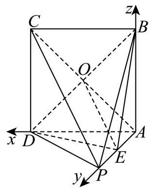
因为四边形 A B C D {ABCD} A BC D A C ⊥ B D {AC} \bot {BD} A C ⊥ B D
又因为 P A ⊥ {PA} \bot P A ⊥ A B C D , B D ⊂ {ABCD},{BD} \subset A BC D , B D ⊂ A B C D {ABCD} A BC D
所以 P A ⊥ B D {PA} \bot {BD} P A ⊥ B D
由 P A ∩ A C = A , P A , A C ⊂ {PA} \cap {AC} = A,{PA},{AC} \subset P A ∩ A C = A , P A , A C ⊂ P A C {PAC} P A C
得 B D ⊥ {BD} \bot B D ⊥ P A C {PAC} P A C
【小问 2 详解】
设 P A = b ( b > 0 ) {PA} = b\;\left( {b > 0}\right) P A = b ( b > 0 )
以 A A A A D {AD} A D x x x A P {AP} A P y y y A B {AB} A B z z z
则 A ( 0 , 0 , 0 ) A\left( {0,0,0}\right) A ( 0 , 0 , 0 ) D ( 1 , 0 , 0 ) D\left( {1,0,0}\right) D ( 1 , 0 , 0 ) P ( 0 , b , 0 ) P\left( {0, b,0}\right) P ( 0 , b , 0 ) B ( 0 , 0 , 1 ) B\left( {0,0,1}\right) B ( 0 , 0 , 1 ) C ( 1 , 0 , 1 ) C\left( {1,0,1}\right) C ( 1 , 0 , 1 ) E ( 0 , b 2 , 0 ) E\left( {0,\frac{b}{2},0}\right) E ( 0 , 2 b , 0 )
B E → = ( 0 , b 2 , − 1 ) , A P → = ( 0 , b , 0 ) , P C → = ( 1 , − b , 1 ) , \overrightarrow{BE} = \left( {0,\frac{b}{2}, - 1}\right) ,\overrightarrow{AP} = \left( {0, b,0}\right) ,\overrightarrow{PC} = \left( {1, - b,1}\right) , BE = ( 0 , 2 b , − 1 ) , A P = ( 0 , b , 0 ) , PC = ( 1 , − b , 1 ) ,
设平面 P A C {PAC} P A C n → = ( x , y , z ) \overrightarrow{n} = \left( {x, y, z}\right) n = ( x , y , z )
则 { n → ⋅ P C → = x − b y + z = 0 n → ⋅ A P → = b y = 0 \left\{ \begin{array}{l} \overrightarrow{n} \cdot \overrightarrow{PC} = x - {by} + z = 0 \\ \overrightarrow{n} \cdot \overrightarrow{AP} = {by} = 0 \end{array}\right. { n ⋅ PC = x − b y + z = 0 n ⋅ A P = b y = 0 x = 1 x = 1 x = 1 n → = ( 1 , 0 , − 1 ) \overrightarrow{n} = \left( {1,0, - 1}\right) n = ( 1 , 0 , − 1 )
设直线 B E {BE} BE P A C {PAC} P A C θ \theta θ
则 sin θ = ∣ B E → ⋅ n → ∣ ∣ B E → ∣ ⋅ ∣ n → ∣ = ∣ 0 × 1 + b 2 × 0 + ( − 1 ) ⋅ ( − 1 ) ∣ 2 ⋅ b 2 4 + 1 = 1 b 2 2 + 2 = 10 5 \sin \theta = \frac{\left| \overrightarrow{BE} \cdot \overrightarrow{n}\right| }{\left| \overrightarrow{BE}\right| \cdot \left| \overrightarrow{n}\right| } = \frac{\left| 0 \times 1 + \frac{b}{2} \times 0 + \left( -1\right) \cdot \left( -1\right) \right| }{\sqrt{2} \cdot \sqrt{\frac{{b}^{2}}{4} + 1}} = \frac{1}{\sqrt{\frac{{b}^{2}}{2} + 2}} = \frac{\sqrt{10}}{5} sin θ = BE ⋅ ∣ n ∣ BE ⋅ n = 2 ⋅ 4 b 2 + 1 ∣ 0 × 1 + 2 b × 0 + ( − 1 ) ⋅ ( − 1 ) ∣ = 2 b 2 + 2 1 = 5 10
整理可得 b 2 = 1 {b}^{2} = 1 b 2 = 1 b = 1 b = 1 b = 1 b = − 1 b = - 1 b = − 1 P A = 1 {PA} = 1 P A = 1
故 V B − P C D = V P − B C D = 1 3 ⋅ S △ B C D ⋅ P A = 1 3 × 1 2 × 1 2 × 1 = 1 6 {V}_{B - {PCD}} = {V}_{P - {BCD}} = \frac{1}{3} \cdot {S}_{\bigtriangleup {BCD}} \cdot {PA} = \frac{1}{3} \times \frac{1}{2} \times {1}^{2} \times 1 = \frac{1}{6} V B − PC D = V P − BC D = 3 1 ⋅ S △ BC D ⋅ P A = 3 1 × 2 1 × 1 2 × 1 = 6 1
徐汇 · 第17题 ★★★☆☆ · 教师预估 如图，在四棱锥 P − A B C D P - {ABCD} P − A BC D △ P C D \bigtriangleup {PCD} △ PC D A B C D {ABCD} A BC D A B / / C D , C D ⊥ A D , C D = 4 , A B = A D = 2 {AB}//{CD},{CD} \bot {AD},{CD} = 4,{AB} = {AD} = 2 A B // C D , C D ⊥ A D , C D = 4 , A B = A D = 2
(1)求证: P B ⊥ C D {PB}\bot {CD} PB ⊥ C D
(2)若四棱锥 P − A B C D P - {ABCD} P − A BC D 4 3 4\sqrt{3} 4 3 P D {PD} P D P B C {PBC} PBC
考点： (1)利用中点和线面垂直证明线线垂直；(2)由体积确定高，建系用法向量求线面角。难度依据： 几何证明后建系计算空间角
展开答案与解析 【答案】 (1) 证明见解析
(2) arcsin 21 7 \arcsin \frac{\sqrt{21}}{7} arcsin 7 21
【解析】
【分析】 (1) 取 C D {CD} C D E E E C D ⊥ {CD} \bot C D ⊥ P B E {PBE} PBE
进而证明 P B ⊥ C D {PB} \bot {CD} PB ⊥ C D
(2)首先利用体积公式求出四棱锥的高，结合几何特征得到 P E ⊥ {PE}\bot PE ⊥ A B C D {ABCD} A BC D
【小问 1 详解】
取 C D {CD} C D E E E P E , B E {PE},{BE} PE , BE
因为 A B / / C D , C D = 2 A B = 4 {AB}//{CD},{CD} = {2AB} = 4 A B // C D , C D = 2 A B = 4
则 D E = A B = 2 {DE} = {AB} = 2 D E = A B = 2 A B E D {ABED} A BE D
又 C D ⊥ A D {CD} \bot {AD} C D ⊥ A D A B E D {ABED} A BE D
所以 B E ⊥ C D {BE} \bot {CD} BE ⊥ C D
△ P C D \bigtriangleup {PCD} △ PC D E E E C D {CD} C D
所以 P E ⊥ C D {PE} \bot {CD} PE ⊥ C D
B E ∩ P E = E , B E , P E ⊂ {BE} \cap {PE} = E,{BE},{PE} \subset BE ∩ PE = E , BE , PE ⊂ P B E {PBE} PBE
所以 C D ⊥ {CD} \bot C D ⊥ P B E {PBE} PBE
P B ⊂ {PB} \subset PB ⊂ P B E {PBE} PBE C D ⊥ P B {CD} \bot {PB} C D ⊥ PB
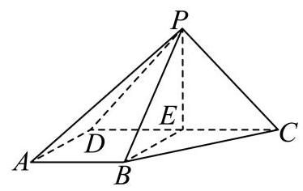
【小问 2 详解】
梯形 A B C D {ABCD} A BC D 1 2 ( 2 + 4 ) × 2 = 6 \frac{1}{2}\left( {2 + 4}\right) \times 2 = 6 2 1 ( 2 + 4 ) × 2 = 6
设四棱锥 P − A B C D P - {ABCD} P − A BC D h h h 1 3 × 6 × h = 4 3 \frac{1}{3} \times 6 \times h = 4\sqrt{3} 3 1 × 6 × h = 4 3
得 h = 2 3 = P E h = 2\sqrt{3} = {PE} h = 2 3 = PE
所以 P E ⊥ {PE} \bot PE ⊥ A B C D {ABCD} A BC D
以 E B , E C , E P {EB},{EC},{EP} EB , EC , EP x x x y y y z z z E − x y z E - {xyz} E − x yz
B ( 2 , 0 , 0 ) , C ( 0 , 2 , 0 ) , D ( 0 , − 2 , 0 ) , P ( 0 , 0 , 2 3 ) , B\left( {2,0,0}\right) ,\;C\left( {0,2,0}\right) ,\;D\left( {0, - 2,0}\right) ,\;P\left( {0,0,2\sqrt{3}}\right) , B ( 2 , 0 , 0 ) , C ( 0 , 2 , 0 ) , D ( 0 , − 2 , 0 ) , P ( 0 , 0 , 2 3 ) ,
设面 P B C {PBC} PBC n = ( x , y , z ) \mathbf{n} = \left( {x, y, z}\right) n = ( x , y , z )
P B → = ( 2 , 0 , − 2 3 ) , B C → = ( − 2 , 2 , 0 ) \overrightarrow{PB} = \left( {2,0, - 2\sqrt{3}}\right) ,\overrightarrow{BC} = \left( {-2,2,0}\right) PB = ( 2 , 0 , − 2 3 ) , BC = ( − 2 , 2 , 0 )
{ n → ⋅ P B → = 0 n → ⋅ B C → = 0 , { 2 x − 2 3 z = 0 − 2 x + 2 y = 0 , \left\{ {\begin{array}{l} \overrightarrow{n} \cdot \overrightarrow{PB} = 0 \\ \overrightarrow{n} \cdot \overrightarrow{BC} = 0 \end{array},\left\{ {\begin{array}{l} {2x} - 2\sqrt{3}z = 0 \\ - {2x} + {2y} = 0 \end{array},}\right. }\right. { n ⋅ PB = 0 n ⋅ BC = 0 , { 2 x − 2 3 z = 0 − 2 x + 2 y = 0 ,
取 z = 1 , x = 3 , y = 3 z = 1, x = \sqrt{3}, y = \sqrt{3} z = 1 , x = 3 , y = 3
则 n = ( 3 , 3 , 1 ) , P D → = ( 0 , − 2 , − 2 3 ) n = \left( {\sqrt{3},\sqrt{3},1}\right) ,\overrightarrow{PD} = \left( {0, - 2, - 2\sqrt{3}}\right) n = ( 3 , 3 , 1 ) , P D = ( 0 , − 2 , − 2 3 )
设直线 P D {PD} P D P B C {PBC} PBC θ \theta θ
sin θ = ∣ cos P D → , n → ∣ = ∣ P D → ⋅ n → ∣ ∣ P D → ∣ ∣ n → ∣ = 4 3 4 × 7 = 21 7 . \sin \theta = \left| {\cos \overrightarrow{PD},\overrightarrow{n}}\right| = \frac{\left| \overrightarrow{PD} \cdot \overrightarrow{n}\right| }{\left| \overrightarrow{PD}\right| \left| \overrightarrow{n}\right| } = \frac{4\sqrt{3}}{4 \times \sqrt{7}} = \frac{\sqrt{21}}{7}. sin θ = cos P D , n = P D ∣ n ∣ P D ⋅ n = 4 × 7 4 3 = 7 21 .
直线 P D {PD} P D P B C {PBC} PBC arcsin 21 7 \arcsin \frac{\sqrt{21}}{7} arcsin 7 21
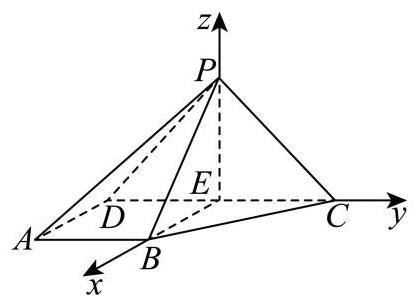
普陀 · 第17题 ★★★☆☆ · 教师预估 如图，在正三棱柱 A B C − A 1 B 1 C 1 {ABC} - {A}_{1}{B}_{1}{C}_{1} A BC − A 1 B 1 C 1 D D D E E E A 1 B 1 {A}_{1}{B}_{1} A 1 B 1 A 1 A {A}_{1}A A 1 A A 1 A = A 1 B 1 = 2. {A}_{1}A = {A}_{1}{B}_{1} = 2. A 1 A = A 1 B 1 = 2.
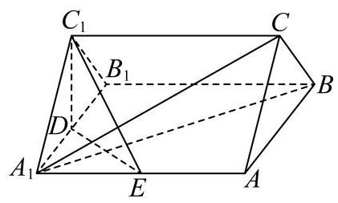
(1)求证:直线 A 1 B ⊥ {A}_{1}B \bot A 1 B ⊥ C 1 D E {C}_{1}{DE} C 1 D E
(2)求点 A A A A 1 C B {A}_{1}{CB} A 1 CB
考点： (1) 线线与线面垂直证明；(2) 等体积法或空间向量求点面距离。难度依据： 正棱柱线面垂直与点面距离；空间坐标与法向量求距离
展开答案与解析 【答案】 (1)证明见解析
(2) 2 21 7 \frac{2\sqrt{21}}{7} 7 2 21
【解析】
【分析】 (1) 根据正三棱柱的结构可判断四边形 A B B 1 A 1 {AB}{B}_{1}{A}_{1} A B B 1 A 1 C − A B A 1 C - {AB}{A}_{1} C − A B A 1
【小问 1 详解】
如图 1,连接 A B 1 A{B}_{1} A B 1
图1
由正三棱柱的结构特征可知,
在正三棱柱 A B C − A 1 B 1 C 1 {ABC} - {{A}_{1}{B}_{1}{C}_{1}} A BC − A 1 B 1 C 1 △ A 1 B 1 C 1 \bigtriangleup {A}_{1}{B}_{1}{C}_{1} △ A 1 B 1 C 1 B B 1 ⊥ B{B}_{1} \bot B B 1 ⊥ A 1 B 1 C 1 {A}_{1}{B}_{1}{C}_{1} A 1 B 1 C 1 D D D A 1 B 1 {A}_{1}{B}_{1} A 1 B 1 C 1 D ⊥ A 1 B 1 {C}_{1}D \bot {A}_{1}{B}_{1} C 1 D ⊥ A 1 B 1
因为 B B 1 ⊂ B{B}_{1} \subset B B 1 ⊂ A B B 1 A 1 {AB}{B}_{1}{A}_{1} A B B 1 A 1 A 1 B 1 C 1 ⊥ {A}_{1}{B}_{1}{C}_{1} \bot A 1 B 1 C 1 ⊥ A B B 1 A 1 {AB}{B}_{1}{A}_{1} A B B 1 A 1
又平面 A 1 B 1 C 1 Q {A}_{1}{B}_{1}{C}_{1}\mathrm{Q} A 1 B 1 C 1 Q A B B 1 A 1 = A 1 B 1 {AB}{B}_{1}{A}_{1} = {A}_{1}{B}_{1} A B B 1 A 1 = A 1 B 1 C 1 D ⊥ {C}_{1}D \bot C 1 D ⊥ A B B 1 A 1 {AB}{B}_{1}{A}_{1} A B B 1 A 1
又 A 1 B ⊂ {A}_{1}B \subset A 1 B ⊂ A B B 1 A 1 {AB}{B}_{1}{A}_{1} A B B 1 A 1 C 1 D ⊥ A 1 B {C}_{1}D \bot {A}_{1}B C 1 D ⊥ A 1 B
因为 A 1 A = A 1 B 1 = 2 {A}_{1}A = {A}_{1}{B}_{1} = 2 A 1 A = A 1 B 1 = 2 A B B 1 A 1 {AB}{B}_{1}{A}_{1} A B B 1 A 1 A B 1 ⊥ A 1 B A{B}_{1} \bot {A}_{1}B A B 1 ⊥ A 1 B
又 D E / / A B 1 {DE}//A{B}_{1} D E // A B 1 D E ⊥ A 1 B {DE} \bot {A}_{1}B D E ⊥ A 1 B
因为 C 1 D , D E ⊂ {C}_{1}D,{DE} \subset C 1 D , D E ⊂ C 1 D E , C 1 D ∩ D E = D {C}_{1}{DE},{C}_{1}D \cap {DE} = D C 1 D E , C 1 D ∩ D E = D A 1 B ⊥ {A}_{1}B \bot A 1 B ⊥ C 1 D E {C}_{1}{DE} C 1 D E
【小问 2 详解】
方法一: 设点 A A A A 1 C B {A}_{1}{CB} A 1 CB h h h
因为 C C 1 / / C{C}_{1}// C C 1 // A B B 1 A 1 {AB}{B}_{1}{A}_{1} A B B 1 A 1 C , C 1 C,{C}_{1} C , C 1 A B B 1 A 1 {AB}{B}_{1}{A}_{1} A B B 1 A 1 C 1 D = 3 {C}_{1}D = \sqrt{3} C 1 D = 3
由 (1) 知,侧面均为正方形,所以 S △ A 1 A B = 1 2 × 2 × 2 = 2 , A 1 C = A 1 B = 2 2 {S}_{\bigtriangleup {A}_{1}{AB}} = \frac{1}{2} \times 2 \times 2 = 2,{A}_{1}C = {A}_{1}B = 2\sqrt{2} S △ A 1 A B = 2 1 × 2 × 2 = 2 , A 1 C = A 1 B = 2 2
又 B C = 2 {BC} = 2 BC = 2 △ A 1 B C \bigtriangleup {A}_{1}{BC} △ A 1 BC
S △ A 1 B C = 1 2 B C ⋅ A 1 C 2 − ( B C 2 ) 2 = 1 2 × 2 × 7 = 7 {S}_{\bigtriangleup {A}_{1}{BC}} = \frac{1}{2}{BC} \cdot \sqrt{{A}_{1}{C}^{2} - {\left( \frac{BC}{2}\right) }^{2}} = \frac{1}{2} \times 2 \times \sqrt{7} = \sqrt{7} S △ A 1 BC = 2 1 BC ⋅ A 1 C 2 − ( 2 BC ) 2 = 2 1 × 2 × 7 = 7
又 V C − A 1 A B = V A − A 1 C B {V}_{C - {A}_{1}{AB}} = {V}_{A - {A}_{1}{CB}} V C − A 1 A B = V A − A 1 CB 1 3 S △ A 1 A B × 3 = 1 3 S △ A 1 B C h \frac{1}{3}{S}_{\bigtriangleup {A}_{1}{AB}} \times \sqrt{3} = \frac{1}{3}{S}_{\bigtriangleup {A}_{1}{BC}}h 3 1 S △ A 1 A B × 3 = 3 1 S △ A 1 BC h
所以 1 3 × 2 × 3 = 1 3 × 7 h \frac{1}{3} \times 2 \times \sqrt{3} = \frac{1}{3} \times \sqrt{7}h 3 1 × 2 × 3 = 3 1 × 7 h h = 2 21 7 h = \frac{2\sqrt{21}}{7} h = 7 2 21 A A A A 1 C B {A}_{1}{CB} A 1 CB 2 21 7 \frac{2\sqrt{21}}{7} 7 2 21
方法二: 取 A B {AB} A B F F F D F {DF} D F D A 1 , D F , D C 1 D{A}_{1},{DF}, D{C}_{1} D A 1 , D F , D C 1
图2
则 A 1 ( 1 , 0 , 0 ) , A ( 1 , 2 , 0 ) , B ( − 1 , 2 , 0 ) , C ( 0 , 2 , 3 ) {A}_{1}\left( {1,0,0}\right) , A\left( {1,2,0}\right) , B\left( {-1,2,0}\right) , C\left( {0,2,\sqrt{3}}\right) A 1 ( 1 , 0 , 0 ) , A ( 1 , 2 , 0 ) , B ( − 1 , 2 , 0 ) , C ( 0 , 2 , 3 )
所以 A 1 A → = ( 0 , 2 , 0 ) , A 1 B → = ( − 2 , 2 , 0 ) , A 1 C → = ( − 1 , 2 , 3 ) \overrightarrow{{A}_{1}A} = \left( {0,2,0}\right) ,\overrightarrow{{A}_{1}B} = \left( {-2,2,0}\right) ,\overrightarrow{{A}_{1}C} = \left( {-1,2,\sqrt{3}}\right) A 1 A = ( 0 , 2 , 0 ) , A 1 B = ( − 2 , 2 , 0 ) , A 1 C = ( − 1 , 2 , 3 )
设平面 A 1 C B {A}_{1}{CB} A 1 CB n → = ( x , y , z ) \overrightarrow{n} = \left( {x, y, z}\right) n = ( x , y , z )
则 { n → ⋅ A 1 B → = 0 n → ⋅ A 1 C → = 0 \left\{ \begin{array}{l} \overrightarrow{n} \cdot \overrightarrow{{A}_{1}B} = 0 \\ \overrightarrow{n} \cdot \overrightarrow{{A}_{1}C} = 0 \end{array}\right. { n ⋅ A 1 B = 0 n ⋅ A 1 C = 0 { − 2 x + 2 y = 0 − x + 2 y + 3 z = 0 \left\{ \begin{array}{l} - {2x} + {2y} = 0 \\ - x + {2y} + \sqrt{3}z = 0 \end{array}\right. { − 2 x + 2 y = 0 − x + 2 y + 3 z = 0 x = 1 x = 1 x = 1 y = 1 , z = − 3 3 y = 1, z = - \frac{\sqrt{3}}{3} y = 1 , z = − 3 3
即 n → = ( 1 , 1 , − 3 3 ) \overrightarrow{n} = \left( {1,1, - \frac{\sqrt{3}}{3}}\right) n = ( 1 , 1 , − 3 3 ) A A A A 1 C B {A}_{1}{CB} A 1 CB ∣ n → ⋅ A 1 A → ∣ n → ∣ ∣ = 2 7 3 = 2 21 7 \left| \frac{\overrightarrow{n} \cdot \overrightarrow{{A}_{1}A}}{\left| \overrightarrow{n}\right| }\right| = \frac{2}{\sqrt{\frac{7}{3}}} = \frac{2\sqrt{21}}{7} ∣ n ∣ n ⋅ A 1 A = 3 7 2 = 7 2 21
松江 · 第10题 ★★★☆☆ · 教师预估 在四棱柱 A B C D − A 1 B 1 C 1 D 1 {ABCD} - {A}_{1}{B}_{1}{C}_{1}{D}_{1} A BC D − A 1 B 1 C 1 D 1 A B C D {ABCD} A BC D ∣ A A 1 → ∣ = 2 \left| \overrightarrow{A{A}_{1}}\right| = 2 A A 1 = 2 A A 1 A{A}_{1} A A 1 B D {BD} B D arccos 2 5 , A D → ⋅ D C 1 → − A B → ⋅ B C 1 → = 4 \arccos \frac{2}{5},\overrightarrow{AD} \cdot \overrightarrow{D{C}_{1}} - \overrightarrow{AB} \cdot \overrightarrow{B{C}_{1}} = 4 arccos 5 2 , A D ⋅ D C 1 − A B ⋅ B C 1 = 4 ∣ B D 1 → ∣ = \left| \overrightarrow{B{D}_{1}}\right| = B D 1 =
考点： 向量分解得到数量积，再求对角线长度。难度依据： 通过数量积消元并处理空间夹角
展开答案与解析 【答案】 37 \sqrt{37} 37
【解析】
【分析】 利用向量的运算法则将已知条件进行转化,进而求出 ∣ B D 1 → ∣ \left| \overrightarrow{B{D}_{1}}\right| B D 1
【详解】 在四棱柱 A B C D − A 1 B 1 C 1 D 1 {ABCD} - {A}_{1}{B}_{1}{C}_{1}{D}_{1} A BC D − A 1 B 1 C 1 D 1
D C 1 → = D C → + C C 1 → = A B → + A A 1 → , B C 1 → = B C → + C C 1 → = A D → + A A 1 → \overrightarrow{D{C}_{1}} = \overrightarrow{DC} + \overrightarrow{C{C}_{1}} = \overrightarrow{AB} + \overrightarrow{A{A}_{1}},\overrightarrow{B{C}_{1}} = \overrightarrow{BC} + \overrightarrow{C{C}_{1}} = \overrightarrow{AD} + \overrightarrow{A{A}_{1}} D C 1 = D C + C C 1 = A B + A A 1 , B C 1 = BC + C C 1 = A D + A A 1
则 A D → ⋅ D C 1 → − A B → ⋅ B C 1 → = A D → ⋅ ( A B → + A A 1 → ) − A B → ⋅ ( A D → + A A 1 → ) \overrightarrow{AD} \cdot \overrightarrow{D{C}_{1}} - \overrightarrow{AB} \cdot \overrightarrow{B{C}_{1}} = \overrightarrow{AD} \cdot \left( {\overrightarrow{AB} + \overrightarrow{A{A}_{1}}}\right) - \overrightarrow{AB} \cdot \left( {\overrightarrow{AD} + \overrightarrow{A{A}_{1}}}\right) A D ⋅ D C 1 − A B ⋅ B C 1 = A D ⋅ ( A B + A A 1 ) − A B ⋅ ( A D + A A 1 )
根据向量乘法分配律展开可得:
A D → ⋅ A B → + A D → ⋅ A A 1 → − A B → ⋅ A D → − A B → ⋅ A A 1 → = A D → ⋅ A A 1 → − A B → ⋅ A A 1 → = ( A D → − A B → ) ⋅ A A 1 → \overrightarrow{AD} \cdot \overrightarrow{AB} + \overrightarrow{AD} \cdot \overrightarrow{A{A}_{1}} - \overrightarrow{AB} \cdot \overrightarrow{AD} - \overrightarrow{AB} \cdot \overrightarrow{A{A}_{1}} = \overrightarrow{AD} \cdot \overrightarrow{A{A}_{1}} - \overrightarrow{AB} \cdot \overrightarrow{A{A}_{1}} = \left( {\overrightarrow{AD} - \overrightarrow{AB}}\right) \cdot \overrightarrow{A{A}_{1}} A D ⋅ A B + A D ⋅ A A 1 − A B ⋅ A D − A B ⋅ A A 1 = A D ⋅ A A 1 − A B ⋅ A A 1 = ( A D − A B ) ⋅ A A 1
因为 A D → − A B → = B D → \overrightarrow{AD} - \overrightarrow{AB} = \overrightarrow{BD} A D − A B = B D ( A D → − A B → ) ⋅ A A 1 → = B D → ⋅ A A 1 → \left( {\overrightarrow{AD} - \overrightarrow{AB}}\right) \cdot \overrightarrow{A{A}_{1}} = \overrightarrow{BD} \cdot \overrightarrow{A{A}_{1}} ( A D − A B ) ⋅ A A 1 = B D ⋅ A A 1
已知 A D → ⋅ D C 1 → − A B → ⋅ B C 1 → = 4 \overrightarrow{AD} \cdot \overrightarrow{D{C}_{1}} - \overrightarrow{AB} \cdot \overrightarrow{B{C}_{1}} = 4 A D ⋅ D C 1 − A B ⋅ B C 1 = 4 B D → ⋅ A A 1 → = 4 \overrightarrow{BD} \cdot \overrightarrow{A{A}_{1}} = 4 B D ⋅ A A 1 = 4
又已知异面直线 A A 1 A{A}_{1} A A 1 B D {BD} B D arccos 2 5 \arccos \frac{2}{5} arccos 5 2 ∣ A A 1 → ∣ = 2 \left| \overrightarrow{A{A}_{1}}\right| = 2 A A 1 = 2
设 B D → \overrightarrow{BD} B D A A 1 → \overrightarrow{A{A}_{1}} A A 1 θ \theta θ cos θ = 2 5 \cos \theta = \frac{2}{5} cos θ = 5 2
根据向量点积公式 a → ⋅ b → = ∣ a → ∣ ∣ b → ∣ cos θ \overrightarrow{a} \cdot \overrightarrow{b} = \left| \overrightarrow{a}\right| \left| \overrightarrow{b}\right| \cos \theta a ⋅ b = a b cos θ B D → ⋅ A A 1 → = ∣ B D → ∣ ∣ A A 1 → ∣ cos θ \overrightarrow{BD} \cdot \overrightarrow{A{A}_{1}} = \left| \overrightarrow{BD}\right| \left| \overrightarrow{A{A}_{1}}\right| \cos \theta B D ⋅ A A 1 = B D A A 1 cos θ
即 4 = ∣ B D → ∣ × 2 × 2 5 4 = \left| \overrightarrow{BD}\right| \times 2 \times \frac{2}{5} 4 = B D × 2 × 5 2 ∣ B D → ∣ = 5 \left| \overrightarrow{BD}\right| = 5 B D = 5
因为 B D 1 → = B D → + D D 1 → = B D → + A A 1 → \overrightarrow{B{D}_{1}} = \overrightarrow{BD} + \overrightarrow{D{D}_{1}} = \overrightarrow{BD} + \overrightarrow{A{A}_{1}} B D 1 = B D + D D 1 = B D + A A 1
∣ B D 1 → ∣ 2 = ( B D → + A A 1 → ) 2 = B D → 2 + 2 B D → ⋅ A A 1 → + A A 1 → 2 . {\left| \overrightarrow{B{D}_{1}}\right| }^{2} = {\left( \overrightarrow{BD} + \overrightarrow{A{A}_{1}}\right) }^{2} = {\overrightarrow{BD}}^{2} + 2\overrightarrow{BD} \cdot \overrightarrow{A{A}_{1}} + {\overrightarrow{A{A}_{1}}}^{2}. B D 1 2 = ( B D + A A 1 ) 2 = B D 2 + 2 B D ⋅ A A 1 + A A 1 2 .
将 ∣ B D → ∣ = 5 , B D → ⋅ A A 1 → = 4 , ∣ A A 1 → ∣ = 2 \left| \overrightarrow{BD}\right| = 5,\overrightarrow{BD} \cdot \overrightarrow{A{A}_{1}} = 4,\left| \overrightarrow{A{A}_{1}}\right| = 2 B D = 5 , B D ⋅ A A 1 = 4 , A A 1 = 2 ∣ B D 1 → ∣ 2 = 5 2 + 2 × 4 + 2 2 = 25 + 8 + 4 = 37 {\left| \overrightarrow{B{D}_{1}}\right| }^{2} = {5}^{2} + 2 \times 4 + {2}^{2} = {25} + 8 + 4 = {37} B D 1 2 = 5 2 + 2 × 4 + 2 2 = 25 + 8 + 4 = 37 ∣ B D 1 → ∣ = 37 \left| \overrightarrow{B{D}_{1}}\right| = \sqrt{37} B D 1 = 37
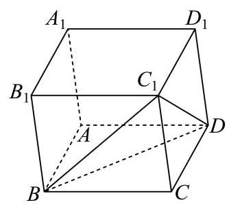
松江 · 第17题 ★★★☆☆ · 教师预估 本题资料或解析有待核事项，预览不可作为已审定成品。
在如图所示的多面体中,已知四边形 A B C D {ABCD} A BC D ∠ A B C = 60 ∘ , F A ⊥ \angle {ABC} = {60}^{ \circ },{FA} \bot ∠ A BC = 60 ∘ , F A ⊥ A B C D , E D ⊥ {ABCD},{ED} \bot A BC D , E D ⊥ A B C D , A B = F A = 2 E D = 2 {ABCD},{AB} = {FA} = {2ED} = 2 A BC D , A B = F A = 2 E D = 2 G G G A F {AF} A F
(1)求证:平面 B D G / / {BDG}// B D G // C E F {CEF} CEF
(2)求直线 B C {BC} BC B D G {BDG} B D G
考点： (1)借助中点和两组平行线证明面面平行；(2)建空间坐标求平面法向量与线面角。难度依据： 几何证明与向量计算结合
核查说明： 答案解析第477字符附近：损坏字符或字体覆盖风险，需回源并视觉检查（底稿扫描记录）；答案解析第710字符附近：损坏字符或字体覆盖风险，需回源并视觉检查（底稿扫描记录）
展开答案与解析 【答案】 (1)证明见解析
(2) 2 4 \frac{\sqrt{2}}{4} 4 2
【解析】
【分析】 (1)连接 A C {AC} A C B D {BD} B D O O O O G , D G {OG},{DG} OG , D G O G / / C F , D G / / E F {OG}//{CF},{DG}//{EF} OG // CF , D G // EF
(2)以 A A A B C {BC} BC B D G {BDG} B D G
【小问 1 详解】
连接 A C {AC} A C B D {BD} B D O O O O G , D G {OG},{DG} OG , D G
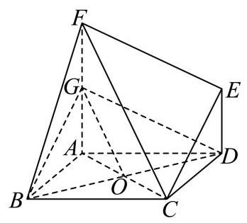
因为菱形 A B C D {ABCD} A BC D O O O A C {AC} A C
所以 O G / / C F {OG}//{CF} OG // CF
又 O G ⊄ {OG} \not\subset OG ⊂ C E F , F C ⊂ {CEF},{FC} \subset CEF , FC ⊂ C E F {CEF} CEF
所以 O G / / {OG}// OG // C E F {CEF} CEF
因为 F A ⊥ {FA} \bot F A ⊥ A B C D , E D ⊥ {ABCD},{ED} \bot A BC D , E D ⊥ A B C D {ABCD} A BC D
所以 F A / / D E {FA}//{DE} F A // D E
又 F A = 2 E D = 2 , F A = 2 F G {FA} = {2ED} = 2,{FA} = {2FG} F A = 2 E D = 2 , F A = 2 FG D E F G {DEFG} D EFG
所以 D G / / E F {DG}//{EF} D G // EF
又 D G ⊄ {DG} \not\subset D G ⊂ C E F , E F ⊂ {CEF},{EF} \subset CEF , EF ⊂ C E F {CEF} CEF
所以 D G / / {DG}// D G // C E F {CEF} CEF
因为 O G ∩ D G = G , O G 、 D G ⊂ {OG} \cap {DG} = G,{OG}\text{ 、 }{DG} \subset OG ∩ D G = G , OG 、 D G ⊂ B D G {BDG} B D G
所以平面 B D G / / {BDG}// B D G // C E F {CEF} CEF
【小问 2 详解】
取 B C {BC} BC M M M A M {AM} A M
因为 ∠ A B C = 60 ∘ \angle {ABC} = {60}^{ \circ } ∠ A BC = 60 ∘ A B C D {ABCD} A BC D
所以 A B C {ABC} A BC A M ⊥ B C {AM} \bot {BC} A M ⊥ BC
则建立以 A A A A M 、 A D 、 A F {AM}\text{ 、 }{AD}\text{ 、 }{AF} A M 、 A D 、 A F x x x y y y z z z A − x y z A - {xyz} A − x yz
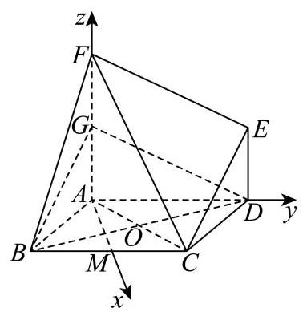
则 B ( 3 , − 1 , 0 ) , C ( 3 , 1 , 0 ) , D ( 0 , 2 , 0 ) , G ( 0 , 0 , 1 ) B\left( {\sqrt{3}, - 1,0}\right) , C\left( {\sqrt{3},1,0}\right) , D\left( {0,2,0}\right) , G\left( {0,0,1}\right) B ( 3 , − 1 , 0 ) , C ( 3 , 1 , 0 ) , D ( 0 , 2 , 0 ) , G ( 0 , 0 , 1 )
所以 B C → = ( 0 , 2 , 0 ) , B D → = ( − 3 , 3 , 0 ) , D G → = ( 0 , − 2 , 1 ) \overrightarrow{BC} = \left( {0,2,0}\right) ,\overrightarrow{BD} = \left( {-\sqrt{3},3,0}\right) ,\overrightarrow{DG} = \left( {0, - 2,1}\right) BC = ( 0 , 2 , 0 ) , B D = ( − 3 , 3 , 0 ) , D G = ( 0 , − 2 , 1 )
设平面 B D G {BDG} B D G n → = ( x , y , z ) \overrightarrow{n} = \left( {x, y, z}\right) n = ( x , y , z )
则 { n → ⋅ B D → = − 3 x + 3 y = 0 n → ⋅ D G → = − 2 y + z = 0 ⇒ { x = 3 y z = 2 y \left\{ {\begin{array}{l} \overrightarrow{n} \cdot \overrightarrow{BD} = - \sqrt{3}x + {3y} = 0 \\ \overrightarrow{n} \cdot \overrightarrow{DG} = - {2y} + z = 0 \end{array} \Rightarrow \left\{ \begin{array}{l} x = \sqrt{3}y \\ z = {2y} \end{array}\right. }\right. { n ⋅ B D = − 3 x + 3 y = 0 n ⋅ D G = − 2 y + z = 0 ⇒ { x = 3 y z = 2 y y = 1 y = 1 y = 1 x = 3 , z = 2 x = \sqrt{3}, z = 2 x = 3 , z = 2 n → = ( 3 , 1 , 2 ) \overrightarrow{n} = \left( {\sqrt{3},1,2}\right) n = ( 3 , 1 , 2 )
所以 cos ⟨ B C → , n → ⟩ = B C → ⋅ n → ∣ B C → ∣ ⋅ ∣ n → ∣ = 2 2 × 2 2 = 2 4 \cos \langle \overrightarrow{BC},\overrightarrow{n}\rangle = \frac{\overrightarrow{BC} \cdot \overrightarrow{n}}{\left| \overrightarrow{BC}\right| \cdot \left| \overrightarrow{n}\right| } = \frac{2}{2 \times 2\sqrt{2}} = \frac{\sqrt{2}}{4} cos ⟨ BC , n ⟩ = BC ⋅ ∣ n ∣ BC ⋅ n = 2 × 2 2 2 = 4 2
直线 B C {BC} BC B D G {BDG} B D G 2 4 \frac{\sqrt{2}}{4} 4 2
浦东 · 第11题 ★★★☆☆ · 教师预估 某光影科技实验室为长方体空间, 底面是边长为 4 米的正方形, 高为 3 米. 为营造动态光影效果，在底面一个顶点处安装射灯 A A A I I I G G G G G G
考点： 建立空间坐标，用垂直数量积确定天花板圆轨迹。难度依据： 将空间垂直转化轨迹方程
展开答案与解析 【答案】 2 2 π 2\sqrt{2}\pi 2 2 π
【解析】
【详解】 如图建立空间直角坐标系:
则 A ( 4 , 0 , 0 ) , I ( 0 , 4 , 1 ) A\left( {4,0,0}\right) , I\left( {0,4,1}\right) A ( 4 , 0 , 0 ) , I ( 0 , 4 , 1 ) G ( x , y , 3 ) G\left( {x, y,3}\right) G ( x , y , 3 )
所以 A G → = ( x − 4 , y , 3 ) , I G → = ( x , y − 4 , 2 ) \overrightarrow{AG} = \left( {x - 4, y,3}\right) ,\overrightarrow{IG} = \left( {x, y - 4,2}\right) A G = ( x − 4 , y , 3 ) , I G = ( x , y − 4 , 2 )
因为 A G ⊥ I G {AG} \bot {IG} A G ⊥ I G A G → ⋅ I G → = ( x − 4 ) x + ( y − 4 ) y + 3 × 2 = 0 \overrightarrow{AG} \cdot \overrightarrow{IG} = \left( {x - 4}\right) x + \left( {y - 4}\right) y + 3 \times 2 = 0 A G ⋅ I G = ( x − 4 ) x + ( y − 4 ) y + 3 × 2 = 0
整理得 ( x − 2 ) 2 + ( y − 2 ) 2 = 2 {\left( x - 2\right) }^{2} + {\left( y - 2\right) }^{2} = 2 ( x − 2 ) 2 + ( y − 2 ) 2 = 2
所以交点 G G G ( 2 , 2 , 3 ) \left( {2,2,3}\right) ( 2 , 2 , 3 ) 2 \sqrt{2} 2
所以交汇点 G G G 2 2 π 2\sqrt{2}\pi 2 2 π
浦东 · 第15题 ★★★☆☆ · 教师预估 已知 e 1 → , e 2 → \overrightarrow{{e}_{1}},\overrightarrow{{e}_{2}} e 1 , e 2 e 3 → \overrightarrow{{e}_{3}} e 3
A. e 1 → + e 2 → 、 e 3 → 、 e 1 → + e 2 → + e 3 → \overrightarrow{{e}_{1}} + \overrightarrow{{e}_{2}}\text{ 、 }\overrightarrow{{e}_{3}}\text{ 、 }\overrightarrow{{e}_{1}} + \overrightarrow{{e}_{2}} + \overrightarrow{{e}_{3}} e 1 + e 2 、 e 3 、 e 1 + e 2 + e 3
B. e 1 → 、 e 2 → + e 3 → 、 3 e 1 → + 4 e 2 → + 3 e 3 → \overrightarrow{{e}_{1}}\text{ 、 }\overrightarrow{{e}_{2}} + \overrightarrow{{e}_{3}}\text{ 、 }3\overrightarrow{{e}_{1}} + 4\overrightarrow{{e}_{2}} + 3\overrightarrow{{e}_{3}} e 1 、 e 2 + e 3 、 3 e 1 + 4 e 2 + 3 e 3
C. e 1 → 、 2 e 2 → − e 3 → 、 e 1 → − 2 e 2 → + e 3 → \overrightarrow{{e}_{1}}\text{ 、 }2\overrightarrow{{e}_{2}} - \overrightarrow{{e}_{3}}\text{ 、 }\overrightarrow{{e}_{1}} - 2\overrightarrow{{e}_{2}} + \overrightarrow{{e}_{3}} e 1 、 2 e 2 − e 3 、 e 1 − 2 e 2 + e 3
D. e 1 → + e 2 → 、 e 2 → + e 3 → 、 e 1 → + k e 3 → \overrightarrow{{e}_{1}} + \overrightarrow{{e}_{2}}\text{ 、 }\overrightarrow{{e}_{2}} + \overrightarrow{{e}_{3}}\text{ 、 }\overrightarrow{{e}_{1}} + k\overrightarrow{{e}_{3}} e 1 + e 2 、 e 2 + e 3 、 e 1 + k e 3 k k k
考点： 根据不共面基底系数判线性相关。难度依据： 建立线性表示并比较系数
展开答案与解析 【答案】 B
【解析】
【分析】 根据向量共面的定义逐项分析即可.
【详解】 对于 A \mathrm{A} A e 1 → + e 2 → = x e 3 → + y ( e 1 → + e 2 → + e 3 → ) = y e 1 → + y e 2 → + ( x + y ) e 3 → \overrightarrow{{e}_{1}} + \overrightarrow{{e}_{2}} = x\overrightarrow{{e}_{3}} + y\left( {\overrightarrow{{e}_{1}} + \overrightarrow{{e}_{2}} + \overrightarrow{{e}_{3}}}\right) = y\overrightarrow{{e}_{1}} + y\overrightarrow{{e}_{2}} + \left( {x + y}\right) \overrightarrow{{e}_{3}} e 1 + e 2 = x e 3 + y ( e 1 + e 2 + e 3 ) = y e 1 + y e 2 + ( x + y ) e 3
由 e 1 → , e 2 → \overrightarrow{{e}_{1}},\overrightarrow{{e}_{2}} e 1 , e 2 e 3 → \overrightarrow{{e}_{3}} e 3 { y = 1 x + y = 0 ⇒ { y = 1 x = − 1 \left\{ {\begin{array}{l} y = 1 \\ x + y = 0 \end{array} \Rightarrow \left\{ \begin{array}{l} y = 1 \\ x = - 1 \end{array}\right. }\right. { y = 1 x + y = 0 ⇒ { y = 1 x = − 1
所以向量 e 1 → + e 2 → 、 e 3 → 、 e 1 → + e 2 → + e 3 → \overrightarrow{{e}_{1}} + \overrightarrow{{e}_{2}}\text{ 、 }\overrightarrow{{e}_{3}}\text{ 、 }\overrightarrow{{e}_{1}} + \overrightarrow{{e}_{2}} + \overrightarrow{{e}_{3}} e 1 + e 2 、 e 3 、 e 1 + e 2 + e 3
对于 B \mathrm{B} B e 1 → = x ( e 2 → + e 3 → ) + y ( 3 e 1 → + 4 e 2 → + 3 e 3 → ) = 3 y e 1 → + ( x + 4 y ) e 2 → + ( x + 3 y ) e 3 → \overrightarrow{{e}_{1}} = x\left( {\overrightarrow{{e}_{2}} + \overrightarrow{{e}_{3}}}\right) + y\left( {3\overrightarrow{{e}_{1}} + 4\overrightarrow{{e}_{2}} + 3\overrightarrow{{e}_{3}}}\right) = {3y}\overrightarrow{{e}_{1}} + \left( {x + {4y}}\right) \overrightarrow{{e}_{2}} + \left( {x + {3y}}\right) \overrightarrow{{e}_{3}} e 1 = x ( e 2 + e 3 ) + y ( 3 e 1 + 4 e 2 + 3 e 3 ) = 3 y e 1 + ( x + 4 y ) e 2 + ( x + 3 y ) e 3
由 e 1 → , e 2 → \overrightarrow{{e}_{1}},\overrightarrow{{e}_{2}} e 1 , e 2 e 3 → \overrightarrow{{e}_{3}} e 3 { 3 y = 1 x + 4 y = 0 x + 3 y = 0 \left\{ \begin{array}{l} {3y} = 1 \\ x + {4y} = 0 \\ x + {3y} = 0 \end{array}\right. ⎩ ⎨ ⎧ 3 y = 1 x + 4 y = 0 x + 3 y = 0
所以向量 e 1 → 、 e 2 → + e 3 → 、 3 e 1 → + 4 e 2 → + 3 e 3 → \overrightarrow{{e}_{1}}\text{ 、 }\overrightarrow{{e}_{2}} + \overrightarrow{{e}_{3}}\text{ 、 }3\overrightarrow{{e}_{1}} + 4\overrightarrow{{e}_{2}} + 3\overrightarrow{{e}_{3}} e 1 、 e 2 + e 3 、 3 e 1 + 4 e 2 + 3 e 3 B \mathrm{B} B
对于 C \mathrm{C} C e 1 → = x ( 2 e 2 → − e 3 → ) + y ( e 1 → − 2 e 2 → + e 3 → ) = y e 1 → + ( 2 x − 2 y ) e 2 → + ( − x + y ) e 3 → \overrightarrow{{e}_{1}} = x\left( {2\overrightarrow{{e}_{2}} - \overrightarrow{{e}_{3}}}\right) + y\left( {\overrightarrow{{e}_{1}} - 2\overrightarrow{{e}_{2}} + \overrightarrow{{e}_{3}}}\right) = y\overrightarrow{{e}_{1}} + \left( {{2x} - {2y}}\right) \overrightarrow{{e}_{2}} + \left( {-x + y}\right) \overrightarrow{{e}_{3}} e 1 = x ( 2 e 2 − e 3 ) + y ( e 1 − 2 e 2 + e 3 ) = y e 1 + ( 2 x − 2 y ) e 2 + ( − x + y ) e 3
由 e 1 → , e 2 → \overrightarrow{{e}_{1}},\overrightarrow{{e}_{2}} e 1 , e 2 e 3 → \overrightarrow{{e}_{3}} e 3 { y = 1 2 x − 2 y = 0 − x + y = 0 ⇒ { y = 1 x = 1 \left\{ {\begin{array}{l} y = 1 \\ {2x} - {2y} = 0 \\ - x + y = 0 \end{array} \Rightarrow \left\{ \begin{array}{l} y = 1 \\ x = 1 \end{array}\right. }\right. ⎩ ⎨ ⎧ y = 1 2 x − 2 y = 0 − x + y = 0 ⇒ { y = 1 x = 1
所以向量 e 1 → 、 2 e 2 → − e 3 → 、 e 1 → − 2 e 2 → + e 3 → \overrightarrow{{e}_{1}}\text{ 、 }2\overrightarrow{{e}_{2}} - \overrightarrow{{e}_{3}}\text{ 、 }\overrightarrow{{e}_{1}} - 2\overrightarrow{{e}_{2}} + \overrightarrow{{e}_{3}} e 1 、 2 e 2 − e 3 、 e 1 − 2 e 2 + e 3 C \mathrm{C} C
对于 D \mathrm{D} D e 1 → + e 2 → = x ( e 2 → + e 3 → ) + y ( e 1 → + k e 3 → ) = y e 1 → + x e 2 → + ( x + k y ) e 3 → \overrightarrow{{e}_{1}} + \overrightarrow{{e}_{2}} = x\left( {\overrightarrow{{e}_{2}} + \overrightarrow{{e}_{3}}}\right) + y\left( {\overrightarrow{{e}_{1}} + k\overrightarrow{{e}_{3}}}\right) = y\overrightarrow{{e}_{1}} + x\overrightarrow{{e}_{2}} + \left( {x + {ky}}\right) \overrightarrow{{e}_{3}} e 1 + e 2 = x ( e 2 + e 3 ) + y ( e 1 + k e 3 ) = y e 1 + x e 2 + ( x + k y ) e 3
由 e 1 → , e 2 → \overrightarrow{{e}_{1}},\overrightarrow{{e}_{2}} e 1 , e 2 e 3 → \overrightarrow{{e}_{3}} e 3 { y = 1 x = 1 x + k y = 0 \left\{ \begin{array}{l} y = 1 \\ x = 1 \\ x + {ky} = 0 \end{array}\right. ⎩ ⎨ ⎧ y = 1 x = 1 x + k y = 0
当 k = − 1 k = - 1 k = − 1 { y = 1 x = 1 \left\{ \begin{array}{l} y = 1 \\ x = 1 \end{array}\right. { y = 1 x = 1 e 1 → + e 2 → 、 e 2 → + e 3 → 、 e 1 → + k e 3 → \overrightarrow{{e}_{1}} + \overrightarrow{{e}_{2}}\text{ 、 }\overrightarrow{{e}_{2}} + \overrightarrow{{e}_{3}}\text{ 、 }\overrightarrow{{e}_{1}} + k\overrightarrow{{e}_{3}} e 1 + e 2 、 e 2 + e 3 、 e 1 + k e 3
当 k ≠ − 1 k \neq - 1 k = − 1 e 1 → + e 2 → 、 e 2 → + e 3 → 、 e 1 → + k e 3 → \overrightarrow{{e}_{1}} + \overrightarrow{{e}_{2}}\text{ 、 }\overrightarrow{{e}_{2}} + \overrightarrow{{e}_{3}}\text{ 、 }\overrightarrow{{e}_{1}} + k\overrightarrow{{e}_{3}} e 1 + e 2 、 e 2 + e 3 、 e 1 + k e 3
所以向量 e 1 → + e 2 → 、 e 2 → + e 3 → 、 e 1 → + k e 3 → \overrightarrow{{e}_{1}} + \overrightarrow{{e}_{2}}\text{ 、 }\overrightarrow{{e}_{2}} + \overrightarrow{{e}_{3}}\text{ 、 }\overrightarrow{{e}_{1}} + k\overrightarrow{{e}_{3}} e 1 + e 2 、 e 2 + e 3 、 e 1 + k e 3 D \mathrm{D} D
虹口 · 第17题 ★★★★☆ · 教师预估 本题资料或解析有待核事项，预览不可作为已审定成品。
如图,在底面半径为 2,侧面积为 4 5 π 4\sqrt{5}\pi 4 5 π
P − O \mathrm{P} - \mathrm{O} P − O A 、 B 、 C A\text{ 、 }B\text{ 、 }C A 、 B 、 C ∠ A O B = ∠ B O C = 45 ∘ \angle {AOB} = \angle {BOC} = {45}^{ \circ } ∠ A OB = ∠ BOC = 45 ∘
(1)求直线 O B {OB} OB P A C {PAC} P A C
(2)设点 D D D P B {PB} PB P P P B B B O A {OA} O A C D {CD} C D
考点： (1) 圆锥高度与空间法向量求线面角；(2) 动点参数化、数量积证明不垂直。难度依据： 圆锥线面角和动线不垂直；空间坐标与数量积
核查说明： 题面∠AOB=∠BOC=45°，原解据图取AOC=90°；依赖A、C异侧位置，需核图以确认。
展开答案与解析 【答案】 (1) 2 2 3 \frac{2\sqrt{2}}{3} 3 2 2
(2)证明见解析
【解析】
【分析】 (1) 利用侧面积求解出圆锥的高,再利用建系的方法,求出直线 O B {OB} OB P A C {PAC} P A C
(2)利用向量的方法，将点 D D D P B {PB} PB P D → = λ P B → \overrightarrow{PD} = \lambda \overrightarrow{PB} P D = λ PB O A → \overrightarrow{OA} O A C D → \overrightarrow{CD} C D
【小问 1 详解】
∵ ∠ A O B = ∠ B O C = 45 ∘ \because \angle {AOB} = \angle {BOC} = {45}^{ \circ } ∵ ∠ A OB = ∠ BOC = 45 ∘
∴ ∠ A O C = 90 ∘ \therefore \angle {AOC} = {90}^{ \circ } ∴ ∠ A OC = 90 ∘
所以可以建立如右图所示的空间直角坐标系,
所以 B ( 2 , 2 , 0 ) , O B → = ( 2 , 2 , 0 ) B\left( {\sqrt{2},\sqrt{2},0}\right) ,\overrightarrow{OB} = \left( {\sqrt{2},\sqrt{2},0}\right) B ( 2 , 2 , 0 ) , OB = ( 2 , 2 , 0 ) O P = a {OP} = a OP = a
则母线长为 4 + a 2 \sqrt{4 + {a}^{2}} 4 + a 2
则侧面积为 1 2 4 + a 2 × 2 π × 2 = 2 4 + a 2 π = 4 5 π \frac{1}{2}\sqrt{4 + {a}^{2}} \times {2\pi } \times 2 = 2\sqrt{4 + {a}^{2}}\pi = 4\sqrt{5}\pi 2 1 4 + a 2 × 2 π × 2 = 2 4 + a 2 π = 4 5 π
解得: a = 4 a = 4 a = 4
所以 P ( 0 , 0 , 4 ) P\left( {0,0,4}\right) P ( 0 , 0 , 4 )
A ( 2 , 0 , 0 ) , C ( 0 , 2 , 0 ) , A C → = ( − 2 , 2 , 0 ) , P A → = ( 2 , 0 , − 4 ) A\left( {2,0,0}\right) , C\left( {0,2,0}\right) ,\overrightarrow{AC} = \left( {-2,2,0}\right) ,\overrightarrow{PA} = \left( {2,0, - 4}\right) A ( 2 , 0 , 0 ) , C ( 0 , 2 , 0 ) , A C = ( − 2 , 2 , 0 ) , P A = ( 2 , 0 , − 4 )
设面 P A C {PAC} P A C m → = ( x 1 , y 1 , z 1 ) \overrightarrow{m} = \left( {{x}_{1},{y}_{1},{z}_{1}}\right) m = ( x 1 , y 1 , z 1 )
所以 m → ⋅ A C → = − 2 x 1 + 2 y 1 = 0 , m → ⋅ P A → = 2 x 1 − 4 z 1 = 0 \overrightarrow{m} \cdot \overrightarrow{AC} = - 2{x}_{1} + 2{y}_{1} = 0,\overrightarrow{m} \cdot \overrightarrow{PA} = 2{x}_{1} - 4{z}_{1} = 0 m ⋅ A C = − 2 x 1 + 2 y 1 = 0 , m ⋅ P A = 2 x 1 − 4 z 1 = 0
不妨令 x 1 = y 1 = 1 {x}_{1} = {y}_{1} = 1 x 1 = y 1 = 1 z 1 = 1 2 {z}_{1} = \frac{1}{2} z 1 = 2 1
所以 m → = ( 1 , 1 , 1 2 ) \overrightarrow{m} = \left( {1,1,\frac{1}{2}}\right) m = ( 1 , 1 , 2 1 ) O B {OB} OB P A C {PAC} P A C θ \theta θ
所以 sin θ = ∣ cos ⟨ O B → , m → ⟩ ∣ = ∣ O B → ⋅ m → ∣ ∣ O B → ∣ ⋅ ∣ m → ∣ = 2 2 2 × 1 2 + 1 2 + ( 1 2 ) 2 = 2 2 3 \sin \theta = \left| {\cos \langle \overrightarrow{OB},\overrightarrow{m}\rangle }\right| = \frac{\left| \overrightarrow{OB} \cdot \overrightarrow{m}\right| }{\left| \overrightarrow{OB}\right| \cdot \left| \overrightarrow{m}\right| } = \frac{2\sqrt{2}}{2 \times \sqrt{{1}^{2} + {1}^{2} + {\left( \frac{1}{2}\right) }^{2}}} = \frac{2\sqrt{2}}{3} sin θ = cos ⟨ OB , m ⟩ = OB ⋅ ∣ m ∣ OB ⋅ m = 2 × 1 2 + 1 2 + ( 2 1 ) 2 2 2 = 3 2 2
【小问 2 详解】
因为 D D D P B {PB} PB P D → = λ P B → , λ ∈ ( 0 , 1 ) \overrightarrow{PD} = \lambda \overrightarrow{PB},\lambda \in \left( {0,1}\right) P D = λ PB , λ ∈ ( 0 , 1 )
C D → = C P → + P D → \overrightarrow{CD} = \overrightarrow{CP} + \overrightarrow{PD} C D = CP + P D P D → = λ P B → = λ ( 2 , 2 , − 4 ) = ( 2 λ , 2 λ , − 4 λ ) \overrightarrow{PD} = \lambda \overrightarrow{PB} = \lambda \left( {\sqrt{2},\sqrt{2}, - 4}\right) = \left( {\sqrt{2}\lambda ,\sqrt{2}\lambda , - {4\lambda }}\right) P D = λ PB = λ ( 2 , 2 , − 4 ) = ( 2 λ , 2 λ , − 4 λ )
C P → = ( 0 , − 2 , 4 ) , C D → = C P → + P D → = ( 2 λ , 2 λ − 2 , 4 − 4 λ ) , \overrightarrow{CP} = \left( {0, - 2,4}\right) ,\overrightarrow{CD} = \overrightarrow{CP} + \overrightarrow{PD} = \left( {\sqrt{2}\lambda ,\sqrt{2}\lambda - 2,4 - {4\lambda }}\right) , CP = ( 0 , − 2 , 4 ) , C D = CP + P D = ( 2 λ , 2 λ − 2 , 4 − 4 λ ) ,
O A → = ( 2 , 0 , 0 ) , \overrightarrow{OA} = \left( {2,0,0}\right) , O A = ( 2 , 0 , 0 ) ,
O A → ⋅ C D → = 2 2 λ ≠ 0 , \overrightarrow{OA} \cdot \overrightarrow{CD} = 2\sqrt{2}\lambda \neq 0, O A ⋅ C D = 2 2 λ = 0 ,
所以直线 O A {OA} O A C D {CD} C D
闵行 · 第18题 ★★★☆☆ · 教师预估 本题资料或解析有待核事项，预览不可作为已审定成品。
如图,圆柱 O O 1 O{O}_{1} O O 1 A B B 1 A 1 {AB}{B}_{1}{A}_{1} A B B 1 A 1 M N {MN} MN O O O ∠ B O M = π 3 \angle {BOM} = \frac{\pi }{3} ∠ BOM = 3 π
(1)求异面直线 A 1 N {A}_{1}N A 1 N B B 1 B{B}_{1} B B 1
(2)求点 A A A A 1 M N {A}_{1}{MN} A 1 MN
考点： （1）空间向量求异面直线夹角；（2）点到平面的距离。难度依据： 圆柱异面角与点面距；空间向量求角与距离
核查说明： 原解坐标差的纵坐标疑似符号错误，需核PDF并复算。
展开答案与解析 【答案】 (1) arccos 2 5 5 \arccos \frac{2\sqrt{5}}{5} arccos 5 2 5
(2) 4 57 19 \frac{4\sqrt{57}}{19} 19 4 57
【解析】
【分析】 (1) 建立空间直角坐标系, 把异面直线所成角转化为两条异面直线的方向向量的夹角求解
(2)通过(1)空间直角坐标系利用向量运算求点到平面距离
【小问 1 详解】
根据题意建立以底面圆心 O O O A B {AB} A B y y y O O 1 O{O}_{1} O O 1 z z z A B {AB} A B x x x
则 A ( 0 , − 2 , 0 ) , B ( 0 , 2 , 0 ) , A 1 ( 0 , − 2 , 4 ) , B 1 ( 0 , 2 , 4 ) , O ( 0 , 0 , 0 ) , O 1 ( 0 , 0 , 4 ) A\left( {0, - 2,0}\right) , B\left( {0,2,0}\right) ,{A}_{1}\left( {0, - 2,4}\right) ,{B}_{1}\left( {0,2,4}\right) , O\left( {0,0,0}\right) ,{O}_{1}\left( {0,0,4}\right) A ( 0 , − 2 , 0 ) , B ( 0 , 2 , 0 ) , A 1 ( 0 , − 2 , 4 ) , B 1 ( 0 , 2 , 4 ) , O ( 0 , 0 , 0 ) , O 1 ( 0 , 0 , 4 )
因为 ∠ B O M = π 3 \angle {BOM} = \frac{\pi }{3} ∠ BOM = 3 π M ( − 3 , 1 , 0 ) M\left( {-{\sqrt{3},1},0}\right) M ( − 3 , 1 , 0 ) N ( 3 , − 1 , 0 ) N\left( {\sqrt{3}, - 1,0}\right) N ( 3 , − 1 , 0 )
所以 A 1 N → = ( 3 , − 1 , − 4 ) , B B 1 → = ( 0 , 0 , 4 ) , A 1 N → ⋅ B B 1 → = − 16 \overrightarrow{{A}_{1}N} = \left( {\sqrt{3}, - 1, - 4}\right) ,\overrightarrow{B{B}_{1}} = \left( {0,0,4}\right) ,\overrightarrow{{A}_{1}N} \cdot \overrightarrow{B{B}_{1}} = - {16} A 1 N = ( 3 , − 1 , − 4 ) , B B 1 = ( 0 , 0 , 4 ) , A 1 N ⋅ B B 1 = − 16
∣ A 1 N → ∣ = ( 3 ) 2 + ( − 1 ) 2 + ( − 4 ) 2 = 20 = 2 5 , ∣ B B 1 → ∣ = 4 \left| \overrightarrow{{A}_{1}N}\right| = \sqrt{{\left( \sqrt{3}\right) }^{2} + {\left( -1\right) }^{2} + {\left( -4\right) }^{2}} = \sqrt{20} = 2\sqrt{5},\left| \overrightarrow{B{B}_{1}}\right| = 4 A 1 N = ( 3 ) 2 + ( − 1 ) 2 + ( − 4 ) 2 = 20 = 2 5 , B B 1 = 4
设异面直线所成角为 θ \theta θ cos θ = ∣ A 1 N → ⋅ B B 1 → ∣ ∣ A 1 N → ∣ ⋅ ∣ B B 1 → ∣ = 16 2 5 × 4 = 2 5 5 \cos \theta = \frac{\left| \overrightarrow{{A}_{1}N} \cdot \overrightarrow{B{B}_{1}}\right| }{\left| \overrightarrow{{A}_{1}N}\right| \cdot \left| \overrightarrow{B{B}_{1}}\right| } = \frac{16}{2\sqrt{5} \times 4} = \frac{2\sqrt{5}}{5} cos θ = A 1 N ⋅ B B 1 A 1 N ⋅ B B 1 = 2 5 × 4 16 = 5 2 5 A 1 N {A}_{1}N A 1 N B B 1 B{B}_{1} B B 1 arccos 2 5 5 \arccos \frac{2\sqrt{5}}{5} arccos 5 2 5
【小问 2 详解】
A 1 M → = ( − 3 , 3 , − 4 ) , A 1 N → = ( 3 , 1 , − 4 ) , N A → = ( − 3 , − 1 , 0 ) , \overrightarrow{{A}_{1}M} = \left( {-\sqrt{3},3, - 4}\right) ,\overrightarrow{{A}_{1}N} = \left( {\sqrt{3},1, - 4}\right) ,\overrightarrow{NA} = \left( {-\sqrt{3}, - 1,0}\right) , A 1 M = ( − 3 , 3 , − 4 ) , A 1 N = ( 3 , 1 , − 4 ) , N A = ( − 3 , − 1 , 0 ) ,
设平面 A 1 M N {A}_{1}{MN} A 1 MN n → = ( x , y , z ) \overrightarrow{n} = \left( {x, y, z}\right) n = ( x , y , z )
则由 A 1 M → ⋅ n → = 0 , A 1 N → ⋅ n → = 0 \overrightarrow{{A}_{1}M} \cdot \overrightarrow{n} = 0,\overrightarrow{{A}_{1}N} \cdot \overrightarrow{n} = 0 A 1 M ⋅ n = 0 , A 1 N ⋅ n = 0 { − 3 x + 3 y − 4 z = 0 3 x + y − 4 z = 0 \left\{ \begin{matrix} - \sqrt{3}x + {3y} - {4z} = 0 \\ \sqrt{3}x + y - {4z} = 0 \end{matrix}\right. { − 3 x + 3 y − 4 z = 0 3 x + y − 4 z = 0 y = 2 y = 2 y = 2 z = 1 , x = 2 3 3 z = 1, x = \frac{2\sqrt{3}}{3} z = 1 , x = 3 2 3 n → = ( 2 3 3 , 2 , 1 ) \overrightarrow{n} = \left( {\frac{2\sqrt{3}}{3},2,1}\right) n = ( 3 2 3 , 2 , 1 )
设点 A A A A 1 M N {A}_{1}{MN} A 1 MN d d d d = ∣ N A → ⋅ n → ∣ ∣ n → ∣ = ∣ ( − 3 , − 1 , 0 ) ⋅ ( 2 3 3 , 2 , 1 ) ∣ ( 2 3 3 ) 2 + 2 2 + 1 2 = 4 57 19 d = \frac{\left| \overrightarrow{NA} \cdot \overrightarrow{n}\right| }{\left| \overrightarrow{n}\right| } = \frac{\left| \left( -\sqrt{3}, - 1,0\right) \cdot \left( \frac{2\sqrt{3}}{3},2,1\right) \right| }{\sqrt{{\left( \frac{2\sqrt{3}}{3}\right) }^{2} + {2}^{2} + {1}^{2}}} = \frac{4\sqrt{57}}{19} d = ∣ n ∣ N A ⋅ n = ( 3 2 3 ) 2 + 2 2 + 1 2 ( − 3 , − 1 , 0 ) ⋅ ( 3 2 3 , 2 , 1 ) = 19 4 57
青浦 · 第19题 ★★★☆☆ · 教师预估 如图,在三棱锥 P − A B C P - {ABC} P − A BC A B {AB} A B A B C {ABC} A BC △ P A C \bigtriangleup {PAC} △ P A C E E E F F F P C {PC} PC P B {PB} PB P B = A B {PB} = {AB} PB = A B B C = 4 {BC} = 4 BC = 4
(1)求证:平面 P A C ⊥ {PAC} \bot P A C ⊥ A B C {ABC} A BC
(2)求直线 A B {AB} A B A E F {AEF} A EF
考点： (1) 线面垂直推出面面垂直；(2) 空间坐标和法向量求线面角。难度依据： 面面垂直与线面角；空间坐标及法向量
展开答案与解析 【答案】 (1) 证明见解析
(2) 5 10 \frac{\sqrt{5}}{10} 10 5
【解析】
【分析】 (1) 先利用直径所对圆周角为直角和勾股定理得到线线垂直, 再利用线面垂直和面面垂直的判定定理进行证明;
(2)建立空间坐标系，写出相关点的坐标，求出直线的方向向量和平面的法向量，再利用线面角的向量法进行求解.
【小问 1 详解】
证明: 由题意知 B C ⊥ A C {BC} \bot {AC} BC ⊥ A C
则 A B = A C 2 + B C 2 = 2 5 {AB} = \sqrt{A{C}^{2} + B{C}^{2}} = 2\sqrt{5} A B = A C 2 + B C 2 = 2 5 P B = A B = 2 5 {PB} = {AB} = 2\sqrt{5} PB = A B = 2 5
又 B C = 4 , P C = 2 {BC} = 4,{PC} = 2 BC = 4 , PC = 2 P B 2 = P C 2 + B C 2 P{B}^{2} = P{C}^{2} + B{C}^{2} P B 2 = P C 2 + B C 2 P C ⊥ B C {PC} \bot {BC} PC ⊥ BC
又 P C ∩ A C = C {PC} \cap {AC} = C PC ∩ A C = C B C ⊥ {BC} \bot BC ⊥ P A C {PAC} P A C
又 B C ⊂ {BC} \subset BC ⊂ A B C {ABC} A BC P A C ⊥ {PAC} \bot P A C ⊥ A B C {ABC} A BC
【小问 2 详解】
解: 以 C C C C A , C B {CA},{CB} C A , CB x x x y y y C C C A B C {ABC} A BC z z z
则 A ( 2 , 0 , 0 ) , B ( 0 , 4 , 0 ) , P ( 1 , 0 , 3 ) , E ( 1 2 , 0 , 3 2 ) , F ( 1 2 , 2 , 3 2 ) A\left( {2,0,0}\right) , B\left( {0,4,0}\right) , P\left( {1,0,\sqrt{3}}\right) , E\left( {\frac{1}{2},0,\frac{\sqrt{3}}{2}}\right) , F\left( {\frac{1}{2},2,\frac{\sqrt{3}}{2}}\right) A ( 2 , 0 , 0 ) , B ( 0 , 4 , 0 ) , P ( 1 , 0 , 3 ) , E ( 2 1 , 0 , 2 3 ) , F ( 2 1 , 2 , 2 3 )
所以 A E → = ( − 3 2 , 0 , 3 2 ) , E F → = ( 0 , 2 , 0 ) , A B → = ( − 2 , 4 , 0 ) \overrightarrow{AE} = \left( {-\frac{3}{2},0,\frac{\sqrt{3}}{2}}\right) ,\overrightarrow{EF} = \left( {0,2,0}\right) ,\overrightarrow{AB} = \left( {-2,4,0}\right) A E = ( − 2 3 , 0 , 2 3 ) , EF = ( 0 , 2 , 0 ) , A B = ( − 2 , 4 , 0 )
设平面 A E F {AEF} A EF m → = ( x , y , z ) \overrightarrow{m} = \left( {x, y, z}\right) m = ( x , y , z ) { A E → ⋅ m → = − 3 x 2 + 3 z 2 = 0 , E F → ⋅ m → = 2 y = 0 , \left\{ \begin{matrix} \overrightarrow{AE} \cdot \overrightarrow{m} = - \frac{3x}{2} + \frac{\sqrt{3}z}{2} = 0, \\ \overrightarrow{EF} \cdot \overrightarrow{m} = {2y} = 0, \end{matrix}\right. { A E ⋅ m = − 2 3 x + 2 3 z = 0 , EF ⋅ m = 2 y = 0 ,
则 y = 0 y = 0 y = 0 z = 3 z = \sqrt{3} z = 3 m → = ( 1 , 0 , 3 ) \overrightarrow{m} = \left( {1,0,\sqrt{3}}\right) m = ( 1 , 0 , 3 )
设直线 A B {AB} A B A E F {AEF} A EF θ \theta θ sin θ = ∣ cos θ A B → , m → θ ∣ = ∣ A B → ⋅ m → ∣ A B → ∣ ⋅ ∣ m → ∣ ∣ = 5 10 \sin \theta = \left| {\cos \theta \overrightarrow{AB},\overrightarrow{m}\theta }\right| = \left| \frac{\overrightarrow{AB} \cdot \overrightarrow{m}}{\left| \overrightarrow{AB}\right| \cdot \left| \overrightarrow{m}\right| }\right| = \frac{\sqrt{5}}{10} sin θ = cos θ A B , m θ = A B ⋅ ∣ m ∣ A B ⋅ m = 10 5
所以直线 A B {AB} A B A E F {AEF} A EF 5 10 \frac{\sqrt{5}}{10} 10 5
新约束、动点与最值 先解读运算或方向条件，再以几何或代数方式讨论范围与构造。
嘉定 · 第16题 ★★★★☆ · 教师预估 本题资料或解析有待核事项，预览不可作为已审定成品。
对任意平面向量 a → 、 b → 、 c → \overrightarrow{a}\text{ 、 }\overrightarrow{b}\text{ 、 }\overrightarrow{c} a 、 b 、 c λ \lambda λ ⊙ \odot ⊙
a → ⊙ b → = b → ⊙ a → ; \overrightarrow{a} \odot \overrightarrow{b} = \overrightarrow{b} \odot \overrightarrow{a}; a ⊙ b = b ⊙ a ; ( a → + b → ) ⊙ c → = a → ⊙ c → + b → ⊙ c → ; \left( {\overrightarrow{a} + \overrightarrow{b}}\right) \odot \overrightarrow{c} = \overrightarrow{a} \odot \overrightarrow{c} + \overrightarrow{b} \odot \overrightarrow{c}; ( a + b ) ⊙ c = a ⊙ c + b ⊙ c ; ( λ a → ) ⊙ b → = λ ( a → ⊙ b → ) \left( {\lambda \overrightarrow{a}}\right) \odot \overrightarrow{b} = \lambda \left( {\overrightarrow{a} \odot \overrightarrow{b}}\right) ( λ a ) ⊙ b = λ ( a ⊙ b )
A. 若 a → ⊙ b → = 0 \overrightarrow{a} \odot \overrightarrow{b} = 0 a ⊙ b = 0 a → = 0 → \overrightarrow{a} = \overrightarrow{0} a = 0 b → = 0 → \overrightarrow{b} = \overrightarrow{0} b = 0
B. ∣ a → ⊙ b → ∣ = ∣ a → ∣ ⋅ ∣ b → ∣ \left| {\overrightarrow{a} \odot \overrightarrow{b}}\right| = \left| \overrightarrow{a}\right| \cdot \left| \overrightarrow{b}\right| a ⊙ b = a ⋅ b
C. ( a → − b → ) ⊙ ( a → − b → ) = a → ⊙ a → − 2 a → ⊙ b → + b → ⊙ b → \left( {\overrightarrow{a} - \overrightarrow{b}}\right) \odot \left( {\overrightarrow{a} - \overrightarrow{b}}\right) = \overrightarrow{a} \odot \overrightarrow{a} - 2\overrightarrow{a} \odot \overrightarrow{b} + \overrightarrow{b} \odot \overrightarrow{b} ( a − b ) ⊙ ( a − b ) = a ⊙ a − 2 a ⊙ b + b ⊙ b
D. a → ⊙ a → ≥ 0 \overrightarrow{a} \odot \overrightarrow{a} \geq 0 a ⊙ a ≥ 0
考点： 向量新运算的性质；对称双线性运算与反例。难度依据： 用性质推理并构造反例
核查说明： 题干与答案解析尚未逐页对照原卷，数学内容未独立终审。
展开答案与解析 【答案】 C
【解析】
【分析】 对于新定义运算判断题, 一般通过选择特定函数验证性质, 再根据选项利用特值代入排除或通过推理得到结论.
【详解】 设 a → 、 b → 、 c → \overrightarrow{a}\text{ 、 }\overrightarrow{b}\text{ 、 }\overrightarrow{c} a 、 b 、 c a → = ( a 1 , a 2 ) , b → = ( b 1 , b 2 ) , c → = ( c 1 , c 2 ) \overrightarrow{a} = \left( {{a}_{1},{a}_{2}}\right) ,\overrightarrow{b} = \left( {{b}_{1},{b}_{2}}\right) ,\overrightarrow{c} = \left( {{c}_{1},{c}_{2}}\right) a = ( a 1 , a 2 ) , b = ( b 1 , b 2 ) , c = ( c 1 , c 2 )
对于 A \mathrm{A} A a → ⊙ b → = a 1 b 1 − a 2 b 2 \overrightarrow{a} \odot \overrightarrow{b} = {a}_{1}{b}_{1} - {a}_{2}{b}_{2} a ⊙ b = a 1 b 1 − a 2 b 2 ⊙ \odot ⊙
因 ( a → + b → ) ⊙ c → = ( a 1 + b 1 ) c 1 − ( a 2 + b 2 ) c 2 = a 1 c 1 + b 1 c 1 − a 2 c 2 − b 2 c 2 \left( {\overrightarrow{a} + \overrightarrow{b}}\right) \odot \overrightarrow{c} = \left( {{a}_{1} + {b}_{1}}\right) {c}_{1} - \left( {{a}_{2} + {b}_{2}}\right) {c}_{2} = {a}_{1}{c}_{1} + {b}_{1}{c}_{1} - {a}_{2}{c}_{2} - {b}_{2}{c}_{2} ( a + b ) ⊙ c = ( a 1 + b 1 ) c 1 − ( a 2 + b 2 ) c 2 = a 1 c 1 + b 1 c 1 − a 2 c 2 − b 2 c 2
而 a → ⊙ c → + b → ⊙ c → = a 1 c 1 − a 2 c 2 + b 1 c 1 − b 2 c 2 \overrightarrow{a} \odot \overrightarrow{c} + \overrightarrow{b} \odot \overrightarrow{c} = {a}_{1}{c}_{1} - {a}_{2}{c}_{2} + {b}_{1}{c}_{1} - {b}_{2}{c}_{2} a ⊙ c + b ⊙ c = a 1 c 1 − a 2 c 2 + b 1 c 1 − b 2 c 2
又 ( λ a → ) ⊙ b → = ( λ a 1 , λ a 2 ) ⊙ ( b 1 , b 2 ) = λ a 1 b 1 − λ a 2 b 2 \left( {\lambda \overrightarrow{a}}\right) \odot \overrightarrow{b} = \left( {\lambda {a}_{1},\lambda {a}_{2}}\right) \odot \left( {{b}_{1},{b}_{2}}\right) = \lambda {a}_{1}{b}_{1} - \lambda {a}_{2}{b}_{2} ( λ a ) ⊙ b = ( λ a 1 , λ a 2 ) ⊙ ( b 1 , b 2 ) = λ a 1 b 1 − λ a 2 b 2 λ ( a → ⊙ b → ) = λ ( a 1 b 1 − a 2 b 2 ) \lambda \left( {\overrightarrow{a} \odot \overrightarrow{b}}\right) = \lambda \left( {{a}_{1}{b}_{1} - {a}_{2}{b}_{2}}\right) λ ( a ⊙ b ) = λ ( a 1 b 1 − a 2 b 2 )
若取 a → = b → = ( 1 , 1 ) , a → ⊙ b → = 1 × 1 − 1 × 1 = 0 \overrightarrow{a} = \overrightarrow{b} = \left( {1,1}\right) ,\overrightarrow{a} \odot \overrightarrow{b} = 1 \times 1 - 1 \times 1 = 0 a = b = ( 1 , 1 ) , a ⊙ b = 1 × 1 − 1 × 1 = 0 a → , b → \overrightarrow{a},\overrightarrow{b} a , b
对于 B \mathrm{B} B a → ⊙ b → = a → ⋅ b → = a 1 b 1 + a 2 b 2 \overrightarrow{a} \odot \overrightarrow{b} = \overrightarrow{a} \cdot \overrightarrow{b} = {a}_{1}{b}_{1} + {a}_{2}{b}_{2} a ⊙ b = a ⋅ b = a 1 b 1 + a 2 b 2
若取 a → = ( 0 , 1 ) , b → = ( 1 , 0 ) \overrightarrow{a} = \left( {0,1}\right) ,\overrightarrow{b} = \left( {1,0}\right) a = ( 0 , 1 ) , b = ( 1 , 0 ) ∣ a → ⊙ b → ∣ = ∣ 0 × 1 + 1 × 0 ∣ = 0 \left| {\overrightarrow{a} \odot \overrightarrow{b}}\right| = \left| {0 \times 1 + 1 \times 0}\right| = 0 a ⊙ b = ∣ 0 × 1 + 1 × 0 ∣ = 0 ∣ a → ∣ ⋅ ∣ b → ∣ = 1 × 1 = 1 \left| \overrightarrow{a}\right| \cdot \left| \overrightarrow{b}\right| = 1 \times 1 = 1 a ⋅ b = 1 × 1 = 1
对于 C \mathrm{C} C ( a → − b → ) ⊙ ( a → − b → ) = ( ( a → + ( − b → ) ) ⊙ ( a → − b → ) \left( {\overrightarrow{a} - \overrightarrow{b}}\right) \odot \left( {\overrightarrow{a} - \overrightarrow{b}}\right) = (\left( {\overrightarrow{a} + \left( {-\overrightarrow{b}}\right) }\right) \odot \left( {\overrightarrow{a} - \overrightarrow{b}}\right) ( a − b ) ⊙ ( a − b ) = ( ( a + ( − b ) ) ⊙ ( a − b )
= a → ⊙ ( a → − b → ) + ( − b → ) ⊙ ( a → − b → ) = a → ⊙ a → − a → ⊙ b → + ( − 1 ) ( b → ⊙ a → − b → ⊙ b → ) = \overrightarrow{a} \odot \left( {\overrightarrow{a} - \overrightarrow{b}}\right) + \left( {-\overrightarrow{b}}\right) \odot \left( {\overrightarrow{a} - \overrightarrow{b}}\right) = \overrightarrow{a} \odot \overrightarrow{a} - \overrightarrow{a} \odot \overrightarrow{b} + \left( {-1}\right) \left( {\overrightarrow{b} \odot \overrightarrow{a} - \overrightarrow{b} \odot \overrightarrow{b}}\right) = a ⊙ ( a − b ) + ( − b ) ⊙ ( a − b ) = a ⊙ a − a ⊙ b + ( − 1 ) ( b ⊙ a − b ⊙ b )
= a → ⊙ a → − a → ⊙ b → − a → ⊙ b → + b → ⊙ b → = a → ⊙ a → − 2 a → ⊙ b → + b → ⊙ b → = \overrightarrow{a} \odot \overrightarrow{a} - \overrightarrow{a} \odot \overrightarrow{b} - \overrightarrow{a} \odot \overrightarrow{b} + \overrightarrow{b} \odot \overrightarrow{b} = \overrightarrow{a} \odot \overrightarrow{a} - 2\overrightarrow{a} \odot \overrightarrow{b} + \overrightarrow{b} \odot \overrightarrow{b} = a ⊙ a − a ⊙ b − a ⊙ b + b ⊙ b = a ⊙ a − 2 a ⊙ b + b ⊙ b
对于 D \mathrm{D} D a → ⊙ b → = − a → ⋅ b → = − a 1 b 1 − a 2 b 2 \overrightarrow{a} \odot \overrightarrow{b} = - \overrightarrow{a} \cdot \overrightarrow{b} = - {a}_{1}{b}_{1} - {a}_{2}{b}_{2} a ⊙ b = − a ⋅ b = − a 1 b 1 − a 2 b 2
但 a → ⊙ a → = − a 1 2 − a 2 2 = − ( a 1 2 + a 2 2 ) ≤ 0 \overrightarrow{a} \odot \overrightarrow{a} = - {a}_{1}^{2} - {a}_{2}^{2} = - \left( {{a}_{1}^{2} + {a}_{2}^{2}}\right) \leq 0 a ⊙ a = − a 1 2 − a 2 2 = − ( a 1 2 + a 2 2 ) ≤ 0 a → ≠ 0 → \overrightarrow{a} \neq \overrightarrow{0} a = 0 a → ⊙ a → < 0 \overrightarrow{a} \odot \overrightarrow{a} < 0 a ⊙ a < 0
普陀 · 第16题 ★★★★☆ · 教师预估 在直角坐标平面中,方程 ( x + 9 − y 2 ) ( x − 18 − 2 y 2 ) = 0 \left( {x + \sqrt{9 - {y}^{2}}}\right) \left( {x - \sqrt{{18} - 2{y}^{2}}}\right) = 0 ( x + 9 − y 2 ) ( x − 18 − 2 y 2 ) = 0 G G G P , Q P, Q P , Q G G G O O O
①若点 A ( − 3 , 0 ) 、 B ( 3 , 0 ) A\left( {-3,0}\right) \text{ 、 }B\left( {3,0}\right) A ( − 3 , 0 ) 、 B ( 3 , 0 ) ∣ P A ∣ + ∣ P B ∣ \left| {PA}\right| + \left| {PB}\right| ∣ P A ∣ + ∣ PB ∣
②若 O P ⊥ O Q {OP} \bot {OQ} OP ⊥ OQ 1 ∣ O P ∣ 2 + 1 ∣ O Q ∣ 2 \frac{1}{{\left| OP\right| }^{2}} + \frac{1}{{\left| OQ\right| }^{2}} ∣ OP ∣ 2 1 + ∣ OQ ∣ 2 1 [ 1 6 , 2 9 ] \left\lbrack {\frac{1}{6},\frac{2}{9}}\right\rbrack [ 6 1 , 9 2 ]
则下列结论中正确的是 ( )
A. ①为真②为真
B. ①为真②为假
C. ①为假②为真
D. ①为假 ②为假
考点： 半圆半椭圆拼接曲线及距离范围；新定义曲线与命题真假；垂直向量坐标关系。难度依据： 半圆半椭圆拼接曲线及距离范围；新定义曲线与命题真假；垂直向量坐标关系
展开答案与解析 【答案】 C
【解析】
【分析】 先根据方程可得曲线是由半个圆和半个椭圆组成的一条曲线, 再对条件①判断, 根据椭圆的定义及计算圆的一点到两个定点的距离和范围可得命题的真假; 对条件②根据 P , Q P, Q P , Q
【详解】 因为方程 ( x + 9 − y 2 ) ( x − 18 − 2 y 2 ) = 0 \left( {x + \sqrt{9 - {y}^{2}}}\right) \left( {x - \sqrt{{18} - 2{y}^{2}}}\right) = 0 ( x + 9 − y 2 ) ( x − 18 − 2 y 2 ) = 0 x + 9 − y 2 = 0 ( x ≤ 0 ) x + \sqrt{9 - {y}^{2}} = 0\left( {x \leq 0}\right) x + 9 − y 2 = 0 ( x ≤ 0 ) x − 18 − 2 y 2 = 0 ( x ≥ 0 ) . x - \sqrt{{18} - 2{y}^{2}} = 0\left( {x \geq 0}\right) . x − 18 − 2 y 2 = 0 ( x ≥ 0 ) .
若 x + 9 − y 2 = 0 ( x ≤ 0 ) x + \sqrt{9 - {y}^{2}} = 0\left( {x \leq 0}\right) x + 9 − y 2 = 0 ( x ≤ 0 ) x 2 + y 2 = 9 ( x ≤ 0 ) {x}^{2} + {y}^{2} = 9\left( {x \leq 0}\right) x 2 + y 2 = 9 ( x ≤ 0 ) O O O r = 3 r = 3 r = 3
若 x − 18 − 2 y 2 = 0 ( x ≥ 0 ) x - \sqrt{{18} - 2{y}^{2}} = 0\left( {x \geq 0}\right) x − 18 − 2 y 2 = 0 ( x ≥ 0 ) x 2 18 + y 2 9 = 1 ( x ≥ 0 ) \frac{{x}^{2}}{18} + \frac{{y}^{2}}{9} = 1\left( {x \geq 0}\right) 18 x 2 + 9 y 2 = 1 ( x ≥ 0 ) a = 3 2 a = 3\sqrt{2} a = 3 2 b = 3 b = 3 b = 3
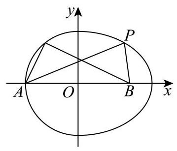
对于①，若点 P P P A ( − 3 , 0 ) A\left( {-3,0}\right) A ( − 3 , 0 ) B ( 3 , 0 ) B\left( {3,0}\right) B ( 3 , 0 ) x 2 18 + y 2 9 = 1 \frac{{x}^{2}}{18} + \frac{{y}^{2}}{9} = 1 18 x 2 + 9 y 2 = 1 ∣ P A ∣ + ∣ P B ∣ = 2 a = 6 2 > 8 \left| {PA}\right| + \left| {PB}\right| = {2a} = 6\sqrt{2} > 8 ∣ P A ∣ + ∣ PB ∣ = 2 a = 6 2 > 8 P P P ∣ P A ∣ + ∣ P B ∣ = 8 \left| {PA}\right| + \left| {PB}\right| = 8 ∣ P A ∣ + ∣ PB ∣ = 8
若点 P P P A ( − 3 , 0 ) 、 B ( 3 , 0 ) A\left( {-3,0}\right) \text{ 、 }B\left( {3,0}\right) A ( − 3 , 0 ) 、 B ( 3 , 0 ) x 2 + y 2 = 9 {x}^{2} + {y}^{2} = 9 x 2 + y 2 = 9 P ( x , y ) P\left( {x, y}\right) P ( x , y ) ∣ P A ∣ + ∣ P B ∣ = ( x + 3 ) 2 + y 2 + ( x − 3 ) 2 + y 2 = 18 + 6 x + 18 − 6 x \left| {PA}\right| + \left| {PB}\right| = \sqrt{{\left( x + 3\right) }^{2} + {y}^{2}} + \sqrt{{\left( x - 3\right) }^{2} + {y}^{2}} = \sqrt{{18} + {6x}} + \sqrt{{18} - {6x}} ∣ P A ∣ + ∣ PB ∣ = ( x + 3 ) 2 + y 2 + ( x − 3 ) 2 + y 2 = 18 + 6 x + 18 − 6 x ( ∣ P A ∣ + ∣ P B ∣ ) 2 = 36 + 2 ( 18 + 6 x ) ( 18 − 6 x ) = 36 + 12 9 − x 2 {\left( \left| PA\right| + \left| PB\right| \right) }^{2} = {36} + 2\sqrt{\left( {{18} + {6x}}\right) \left( {{18} - {6x}}\right) } = {36} + {12}\sqrt{9 - {x}^{2}} ( ∣ P A ∣ + ∣ PB ∣ ) 2 = 36 + 2 ( 18 + 6 x ) ( 18 − 6 x ) = 36 + 12 9 − x 2
因为 − 3 ≤ x ≤ 0 - 3 \leq x \leq 0 − 3 ≤ x ≤ 0 0 ≤ 9 − x 2 ≤ 9 , 0 ≤ 9 − x 2 ≤ 3 , 36 ≤ ( ∣ P A ∣ + ∣ P B ∣ ) 2 ≤ 36 + 36 0 \leq 9 - {x}^{2} \leq 9,0 \leq \sqrt{9 - {x}^{2}} \leq 3,{36} \leq {\left( \left| PA\right| + \left| PB\right| \right) }^{2} \leq {36} + {36} 0 ≤ 9 − x 2 ≤ 9 , 0 ≤ 9 − x 2 ≤ 3 , 36 ≤ ( ∣ P A ∣ + ∣ PB ∣ ) 2 ≤ 36 + 36 6 ≤ ∣ P A ∣ + ∣ P B ∣ ≤ 6 2 6 \leq \left| {PA}\right| + \left| {PB}\right| \leq 6\sqrt{2} 6 ≤ ∣ P A ∣ + ∣ PB ∣ ≤ 6 2 8 ∈ [ 6 , 6 2 ] 8 \in \left\lbrack {6,6\sqrt{2}}\right\rbrack 8 ∈ [ 6 , 6 2 ] P P P ∣ P A ∣ + ∣ P B ∣ = 8 \left| {PA}\right| + \left| {PB}\right| = 8 ∣ P A ∣ + ∣ PB ∣ = 8
对于②，若 P P P ∣ O P ∣ = 3 \left| {OP}\right| = 3 ∣ OP ∣ = 3 1 ∣ O P ∣ 2 = 1 9 \frac{1}{{\left| OP\right| }^{2}} = \frac{1}{9} ∣ OP ∣ 2 1 = 9 1
若 P P P ∣ O P ∣ 2 = x 2 + y 2 = 18 − 2 y 2 + y 2 = 18 − y 2 {\left| OP\right| }^{2} = {x}^{2} + {y}^{2} = {18} - 2{y}^{2} + {y}^{2} = {18} - {y}^{2} ∣ OP ∣ 2 = x 2 + y 2 = 18 − 2 y 2 + y 2 = 18 − y 2 − 3 ≤ y ≤ 3 - 3 \leq y \leq 3 − 3 ≤ y ≤ 3 9 ≤ 18 − y 2 ≤ 18 9 \leq {18} - {y}^{2} \leq {18} 9 ≤ 18 − y 2 ≤ 18 9 ≤ ∣ O P ∣ 2 ≤ 18 , 1 ∣ O P ∣ 2 ∈ [ 1 18 , 1 9 ] 9 \leq {\left| OP\right| }^{2} \leq {18},\frac{1}{{\left| OP\right| }^{2}} \in \left\lbrack {\frac{1}{18},\frac{1}{9}}\right\rbrack 9 ≤ ∣ OP ∣ 2 ≤ 18 , ∣ OP ∣ 2 1 ∈ [ 18 1 , 9 1 ] P , Q P, Q P , Q
(i) 若 P , Q P, Q P , Q ∣ O P ∣ = 3 , ∣ O Q ∣ = 3 , 1 ∣ O P ∣ 2 = 1 9 , 1 ∣ O Q ∣ 2 = 1 9 \left| {OP}\right| = 3,\left| {OQ}\right| = 3,\frac{1}{{\left| OP\right| }^{2}} = \frac{1}{9},\frac{1}{{\left| OQ\right| }^{2}} = \frac{1}{9} ∣ OP ∣ = 3 , ∣ OQ ∣ = 3 , ∣ OP ∣ 2 1 = 9 1 , ∣ OQ ∣ 2 1 = 9 1 1 ∣ O P ∣ 2 + 1 ∣ O Q ∣ 2 = 1 9 + 1 9 = 2 9 \frac{1}{{\left| OP\right| }^{2}} + \frac{1}{{\left| OQ\right| }^{2}} = \frac{1}{9} + \frac{1}{9} = \frac{2}{9} ∣ OP ∣ 2 1 + ∣ OQ ∣ 2 1 = 9 1 + 9 1 = 9 2
(ii) 若 P P P Q Q Q 1 ∣ O P ∣ 2 = 1 9 , 1 ∣ O Q ∣ 2 ∈ [ 1 18 , 1 9 ] \frac{1}{{\left| OP\right| }^{2}} = \frac{1}{9},\frac{1}{{\left| OQ\right| }^{2}} \in \left\lbrack {\frac{1}{18},\frac{1}{9}}\right\rbrack ∣ OP ∣ 2 1 = 9 1 , ∣ OQ ∣ 2 1 ∈ [ 18 1 , 9 1 ] 1 9 + 1 18 ≤ 1 ∣ O P ∣ 2 + 1 ∣ O Q ∣ 2 ≤ 1 9 + 1 9 \frac{1}{9} + \frac{1}{18} \leq \frac{1}{{\left| OP\right| }^{2}} + \frac{1}{{\left| OQ\right| }^{2}} \leq \frac{1}{9} + \frac{1}{9} 9 1 + 18 1 ≤ ∣ OP ∣ 2 1 + ∣ OQ ∣ 2 1 ≤ 9 1 + 9 1 1 ∣ O P ∣ 2 + 1 ∣ O Q ∣ 2 ∈ [ 1 6 , 2 9 ] \frac{1}{{\left| OP\right| }^{2}} + \frac{1}{{\left| OQ\right| }^{2}} \in \left\lbrack {\frac{1}{6},\frac{2}{9}}\right\rbrack ∣ OP ∣ 2 1 + ∣ OQ ∣ 2 1 ∈ [ 6 1 , 9 2 ]
(iii) 若 Q Q Q P P P 1 ∣ O Q ∣ 2 = 1 9 , 1 ∣ O P ∣ 2 ∈ [ 1 18 , 1 9 ] \frac{1}{{\left| OQ\right| }^{2}} = \frac{1}{9},\frac{1}{{\left| OP\right| }^{2}} \in \left\lbrack {\frac{1}{18},\frac{1}{9}}\right\rbrack ∣ OQ ∣ 2 1 = 9 1 , ∣ OP ∣ 2 1 ∈ [ 18 1 , 9 1 ] 1 9 + 1 18 ≤ 1 ∣ O Q ∣ 2 + 1 ∣ O P ∣ 2 ≤ 1 9 + 1 9 \frac{1}{9} + \frac{1}{18} \leq \frac{1}{{\left| OQ\right| }^{2}} + \frac{1}{{\left| OP\right| }^{2}} \leq \frac{1}{9} + \frac{1}{9} 9 1 + 18 1 ≤ ∣ OQ ∣ 2 1 + ∣ OP ∣ 2 1 ≤ 9 1 + 9 1 1 ∣ O P ∣ 2 + 1 ∣ O Q ∣ 2 ∈ [ 1 6 , 2 9 ] \frac{1}{{\left| OP\right| }^{2}} + \frac{1}{{\left| OQ\right| }^{2}} \in \left\lbrack {\frac{1}{6},\frac{2}{9}}\right\rbrack ∣ OP ∣ 2 1 + ∣ OQ ∣ 2 1 ∈ [ 6 1 , 9 2 ]
(iv) 若 P , Q P, Q P , Q P ( 3 2 cos a , 3 sin a ) , Q ( 3 2 cos β , 3 sin β ) P\left( {3\sqrt{2}\cos a,3\sin a}\right) , Q\left( {3\sqrt{2}\cos \beta ,3\sin \beta }\right) P ( 3 2 cos a , 3 sin a ) , Q ( 3 2 cos β , 3 sin β ) a , β ∈ [ − π 2 , π 2 ] a,\beta \in \left\lbrack {-\frac{\pi }{2},\frac{\pi }{2}}\right\rbrack a , β ∈ [ − 2 π , 2 π ] O P ⊥ O Q {OP} \bot {OQ} OP ⊥ OQ O P → ⋅ O Q → = 0 \overrightarrow{OP} \cdot \overrightarrow{OQ} = 0 OP ⋅ OQ = 0
即 18 cos a cos β + 9 sin a sin β = 0 , 2 cos a cos β = − sin a sin β {18}\cos a\cos \beta + 9\sin a\sin \beta = 0,2\cos a\cos \beta = - \sin a\sin \beta 18 cos a cos β + 9 sin a sin β = 0 , 2 cos a cos β = − sin a sin β
所以 1 ∣ O P ∣ 2 = 1 18 cos 2 a + 9 sin 2 a = 1 9 ( cos 2 a + 1 ) \frac{1}{{\left| OP\right| }^{2}} = \frac{1}{{18}{\cos }^{2}a + 9{\sin }^{2}a} = \frac{1}{9\left( {{\cos }^{2}a + 1}\right) } ∣ OP ∣ 2 1 = 18 c o s 2 a + 9 s i n 2 a 1 = 9 ( c o s 2 a + 1 ) 1
1 ∣ O Q ∣ 2 = 1 18 cos 2 β + 9 sin 2 β = 1 9 ( cos 2 β + 1 ) , \frac{1}{{\left| OQ\right| }^{2}} = \frac{1}{{18}{\cos }^{2}\beta + 9{\sin }^{2}\beta } = \frac{1}{9\left( {{\cos }^{2}\beta + 1}\right) }, ∣ OQ ∣ 2 1 = 18 c o s 2 β + 9 s i n 2 β 1 = 9 ( c o s 2 β + 1 ) 1 ,
所以 1 ∣ O P ∣ 2 + 1 ∣ O Q ∣ 2 = 1 9 ( cos 2 a + 1 ) + 1 9 ( cos 2 β + 1 ) = 1 9 ( 1 cos 2 a + 1 + 1 cos 2 β + 1 ) = cos 2 a + cos 2 β + 2 9 ( cos 2 a ⋅ cos 2 β + cos 2 a + cos 2 β + 1 ) , \frac{1}{{\left| OP\right| }^{2}} + \frac{1}{{\left| OQ\right| }^{2}} = \frac{1}{9\left( {{\cos }^{2}a + 1}\right) } + \frac{1}{9\left( {{\cos }^{2}\beta + 1}\right) } = \frac{1}{9}\left( {\frac{1}{{\cos }^{2}a + 1} + \frac{1}{{\cos }^{2}\beta + 1}}\right) \; = \frac{{\cos }^{2}a + {\cos }^{2}\beta + 2}{9\left( {{\cos }^{2}a \cdot {\cos }^{2}\beta + {\cos }^{2}a + {\cos }^{2}\beta + 1}\right) }, ∣ OP ∣ 2 1 + ∣ OQ ∣ 2 1 = 9 ( c o s 2 a + 1 ) 1 + 9 ( c o s 2 β + 1 ) 1 = 9 1 ( c o s 2 a + 1 1 + c o s 2 β + 1 1 ) = 9 ( c o s 2 a ⋅ c o s 2 β + c o s 2 a + c o s 2 β + 1 ) c o s 2 a + c o s 2 β + 2 ,
又因为 2 cos a cos β = − sin a sin β 2\cos a\cos \beta = - \sin a\sin \beta 2 cos a cos β = − sin a sin β 4 cos 2 a cos 2 β = sin 2 a sin 2 β 4{\cos }^{2}a{\cos }^{2}\beta = {\sin }^{2}a{\sin }^{2}\beta 4 cos 2 a cos 2 β = sin 2 a sin 2 β 4 cos 2 a cos 2 β = ( 1 − cos 2 a ) ( 1 − cos 2 β ) 4{\cos }^{2}a{\cos }^{2}\beta = \left( {1 - {\cos }^{2}a}\right) \left( {1 - {\cos }^{2}\beta }\right) 4 cos 2 a cos 2 β = ( 1 − cos 2 a ) ( 1 − cos 2 β )
3 cos 2 a cos 2 β = 1 − cos 2 a − cos 2 β , 3{\cos }^{2}a{\cos }^{2}\beta = 1 - {\cos }^{2}a - {\cos }^{2}\beta , 3 cos 2 a cos 2 β = 1 − cos 2 a − cos 2 β ,
所以
1 ∣ O P ∣ 2 + 1 ∣ O Q ∣ 2 = cos 2 a + cos 2 β + 2 3 ( 1 − cos 2 a − cos 2 β ) + 9 cos 2 a + 9 cos 2 β + 9
\frac{1}{{\left| OP\right| }^{2}} + \frac{1}{{\left| OQ\right| }^{2}} = \frac{{\cos }^{2}a + {\cos }^{2}\beta + 2}{3\left( {1 - {\cos }^{2}a - {\cos }^{2}\beta }\right) + 9{\cos }^{2}a + 9{\cos }^{2}\beta + 9}
∣ OP ∣ 2 1 + ∣ OQ ∣ 2 1 = 3 ( 1 − cos 2 a − cos 2 β ) + 9 cos 2 a + 9 cos 2 β + 9 cos 2 a + cos 2 β + 2
cos 2 a + cos 2 β + 2 6 ( cos 2 a + cos 2 β + 2 ) = 1 6 .
\frac{{\cos }^{2}a + {\cos }^{2}\beta + 2}{6\left( {{\cos }^{2}a + {\cos }^{2}\beta + 2}\right) } = \frac{1}{6}.
6 ( cos 2 a + cos 2 β + 2 ) cos 2 a + cos 2 β + 2 = 6 1 .
综上所述， 1 ∣ O P ∣ 2 + 1 ∣ O Q ∣ 2 \frac{1}{{\left| OP\right| }^{2}} + \frac{1}{{\left| OQ\right| }^{2}} ∣ OP ∣ 2 1 + ∣ OQ ∣ 2 1 [ 1 6 , 2 9 ] \left\lbrack {\frac{1}{6},\frac{2}{9}}\right\rbrack [ 6 1 , 9 2 ]
杨浦 · 第12题 ★★★★★ · 教师预估 记 a 1 → , a 2 → … , a m → \overrightarrow{{a}_{1}},\overrightarrow{{a}_{2}}\ldots ,\overrightarrow{{a}_{m}} a 1 , a 2 … , a m m ( m ∈ N , m ≥ 1 ) m\left( {m \in \mathbf{N}, m \geq 1}\right) m ( m ∈ N , m ≥ 1 ) a i → 、 a j → 、 a k → \overrightarrow{{a}_{i}}\text{ 、 }\overrightarrow{{a}_{j}}\text{ 、 }\overrightarrow{{a}_{k}} a i 、 a j 、 a k 1 ∣ a k → ∣ a k → = 1 2 ( 1 ∣ a i → ∣ a i → + 1 ∣ a j → ∣ a j → ) \frac{1}{\left| \overrightarrow{{a}_{k}}\right| }\overrightarrow{{a}_{k}} = \frac{1}{2}\left( {\frac{1}{\left| \overrightarrow{{a}_{i}}\right| }\overrightarrow{{a}_{i}} + \frac{1}{\left| \overrightarrow{{a}_{j}}\right| }\overrightarrow{{a}_{j}}}\right) ∣ a k ∣ 1 a k = 2 1 ( ∣ a i ∣ 1 a i + ∣ a j ∣ 1 a j ) m m m
考点： 投影条件确定三条互相垂直方向及每方向容纳数。难度依据： 须证明上界与给出可取构造
展开答案与解析 【答案】 12
【解析】
【分析】 根据已知条件利用向量投影、共线性质结合条件①②分析即可得.
【详解】 设 a i → , a j → \overrightarrow{{a}_{i}},\overrightarrow{{a}_{j}} a i , a j m m m
根据投影的定义，向量 a i → \overrightarrow{{a}_{i}} a i a j → \overrightarrow{{a}_{j}} a j a i → ⋅ a j → ∣ a j → ∣ ⋅ a j → ∣ a j → ∣ = a i → ⋅ a j → ∣ a j → ∣ 2 ⋅ a j → \frac{\overrightarrow{{a}_{i}} \cdot \overrightarrow{{a}_{j}}}{\left| \overrightarrow{{a}_{j}}\right| } \cdot \frac{\overrightarrow{{a}_{j}}}{\left| \overrightarrow{{a}_{j}}\right| } = \frac{\overrightarrow{{a}_{i}} \cdot \overrightarrow{{a}_{j}}}{{\left| \overrightarrow{{a}_{j}}\right| }^{2}} \cdot \overrightarrow{{a}_{j}} ∣ a j ∣ a i ⋅ a j ⋅ ∣ a j ∣ a j = ∣ a j ∣ 2 a i ⋅ a j ⋅ a j
由条件①可知, a i → ⋅ a j → ∣ a j → ∣ 2 ⋅ a j → = a i → \frac{\overrightarrow{{a}_{i}} \cdot \overrightarrow{{a}_{j}}}{{\left| \overrightarrow{{a}_{j}}\right| }^{2}} \cdot \overrightarrow{{a}_{j}} = \overrightarrow{{a}_{i}} ∣ a j ∣ 2 a i ⋅ a j ⋅ a j = a i a i → ⋅ a j → ∣ a j → ∣ 2 ⋅ a j → = 0 → \frac{\overrightarrow{{a}_{i}} \cdot \overrightarrow{{a}_{j}}}{{\left| \overrightarrow{{a}_{j}}\right| }^{2}} \cdot \overrightarrow{{a}_{j}} = \overrightarrow{0} ∣ a j ∣ 2 a i ⋅ a j ⋅ a j = 0
当 a i → ⋅ a j → ∣ a j → ∣ 2 ⋅ a j → = a i → \frac{\overrightarrow{{a}_{i}} \cdot \overrightarrow{{a}_{j}}}{{\left| \overrightarrow{{a}_{j}}\right| }^{2}} \cdot \overrightarrow{{a}_{j}} = \overrightarrow{{a}_{i}} ∣ a j ∣ 2 a i ⋅ a j ⋅ a j = a i a i → , a j → \overrightarrow{{a}_{i}},\overrightarrow{{a}_{j}} a i , a j a i → ⋅ a j → ∣ a j → ∣ 2 ⋅ a j → = 0 → \frac{\overrightarrow{{a}_{i}} \cdot \overrightarrow{{a}_{j}}}{{\left| \overrightarrow{{a}_{j}}\right| }^{2}} \cdot \overrightarrow{{a}_{j}} = \overrightarrow{0} ∣ a j ∣ 2 a i ⋅ a j ⋅ a j = 0 a i → , a j → \overrightarrow{{a}_{i}},\overrightarrow{{a}_{j}} a i , a j
1 ∣ a k → ∣ a k → , 1 ∣ a i → ∣ a i → , 1 ∣ a j → ∣ a j → \frac{1}{\left| \overrightarrow{{a}_{k}}\right| }\overrightarrow{{a}_{k}},\frac{1}{\left| \overrightarrow{{a}_{i}}\right| }\overrightarrow{{a}_{i}},\frac{1}{\left| \overrightarrow{{a}_{j}}\right| }\overrightarrow{{a}_{j}} ∣ a k ∣ 1 a k , ∣ a i ∣ 1 a i , ∣ a j ∣ 1 a j
当 a i → 、 a j → \overrightarrow{{a}_{i}}\text{ 、 }\overrightarrow{{a}_{j}} a i 、 a j cos a i → , a j → ≠ 1 \cos \overrightarrow{{a}_{i}},\overrightarrow{{a}_{j}} \neq 1 cos a i , a j = 1
则 ( 1 ∣ a i → ∣ a i → + 1 ∣ a j → ∣ a j → ) 2 = 2 + 2 cos a i → , a j → ≠ 2 {\left( \frac{1}{\left| \overrightarrow{{a}_{i}}\right| }\overrightarrow{{a}_{i}} + \frac{1}{\left| \overrightarrow{{a}_{j}}\right| }\overrightarrow{{a}_{j}}\right) }^{2} = \sqrt{2 + 2\cos \overrightarrow{{a}_{i}},\overrightarrow{{a}_{j}}} \neq 2 ( ∣ a i ∣ 1 a i + ∣ a j ∣ 1 a j ) 2 = 2 + 2 cos a i , a j = 2
则 1 2 ∣ ( 1 ∣ α i → ∣ α i → + 1 ∣ α j → ∣ α j → ) ∣ ≠ 1 \frac{1}{2}\left| \left( {\frac{1}{\left| \overrightarrow{{\alpha }_{i}}\right| }\overrightarrow{{\alpha }_{i}} + \frac{1}{\left| \overrightarrow{{\alpha }_{j}}\right| }\overrightarrow{{\alpha }_{j}}}\right) \right| \neq 1 2 1 ( ∣ α i ∣ 1 α i + ∣ α j ∣ 1 α j ) = 1 ∣ 1 ∣ α k → ∣ α k → ∣ = 1 \left| {\frac{1}{\left| \overrightarrow{{\alpha }_{k}}\right| }\overrightarrow{{\alpha }_{k}}}\right| = 1 ∣ α k ∣ 1 α k = 1
故不符合 1 ∣ a k → ∣ a k → = 1 2 ( 1 ∣ a i → ∣ a i → + 1 ∣ a j → ∣ a j → ) \frac{1}{\left| \overrightarrow{{a}_{k}}\right| }\overrightarrow{{a}_{k}} = \frac{1}{2}\left( {\frac{1}{\left| \overrightarrow{{a}_{i}}\right| }\overrightarrow{{a}_{i}} + \frac{1}{\left| \overrightarrow{{a}_{j}}\right| }\overrightarrow{{a}_{j}}}\right) ∣ a k ∣ 1 a k = 2 1 ( ∣ a i ∣ 1 a i + ∣ a j ∣ 1 a j )
则 a i → 、 a j → \overrightarrow{{a}_{i}}\text{ 、 }\overrightarrow{{a}_{j}} a i 、 a j 1 ∣ a k → ∣ a k → = 1 2 ( 1 ∣ a i → ∣ a i → + 1 ∣ a j → ∣ a j → ) \frac{1}{\left| \overrightarrow{{a}_{k}}\right| }\overrightarrow{{a}_{k}} = \frac{1}{2}\left( {\frac{1}{\left| \overrightarrow{{a}_{i}}\right| }\overrightarrow{{a}_{i}} + \frac{1}{\left| \overrightarrow{{a}_{j}}\right| }\overrightarrow{{a}_{j}}}\right) ∣ a k ∣ 1 a k = 2 1 ( ∣ a i ∣ 1 a i + ∣ a j ∣ 1 a j ) a k → 、 a i → 、 a j → \overrightarrow{{a}_{k}}\text{ 、 }\overrightarrow{{a}_{i}}\text{ 、 }\overrightarrow{{a}_{j}} a k 、 a i 、 a j
由其中任意三个向量 a i → 、 a j → 、 a k → \overrightarrow{{a}_{i}}\text{ 、 }\overrightarrow{{a}_{j}}\text{ 、 }\overrightarrow{{a}_{k}} a i 、 a j 、 a k 1 ∣ a k → ∣ a k → = 1 2 ( 1 ∣ a i → ∣ a i → + 1 ∣ a j → ∣ a j → ) \frac{1}{\left| \overrightarrow{{a}_{k}}\right| }\overrightarrow{{a}_{k}} = \frac{1}{2}\left( {\frac{1}{\left| \overrightarrow{{a}_{i}}\right| }\overrightarrow{{a}_{i}} + \frac{1}{\left| \overrightarrow{{a}_{j}}\right| }\overrightarrow{{a}_{j}}}\right) ∣ a k ∣ 1 a k = 2 1 ( ∣ a i ∣ 1 a i + ∣ a j ∣ 1 a j )
则其中任意三个向量 a k → \overrightarrow{{a}_{k}} a k a i → \overrightarrow{{a}_{i}} a i a j → \overrightarrow{{a}_{j}} a j
故结合①②可得:这些向量中任意两个向量要么共线，要么垂直，且同一方向最多两个不等向量,
例如可取空间中三个两两互相垂直的单位向量 e 1 → , e 2 → , e 3 → \overrightarrow{{e}_{1}},\overrightarrow{{e}_{2}},\overrightarrow{{e}_{3}} e 1 , e 2 , e 3 − e 1 → , − e 2 → , − e 3 → - \overrightarrow{{e}_{1}}, - \overrightarrow{{e}_{2}}, - \overrightarrow{{e}_{3}} − e 1 , − e 2 , − e 3
再取 2 e 1 → , 2 e 2 → , 2 e 3 → , − 2 e 1 → , − 2 e 2 → , − 2 e 3 → 2\overrightarrow{{e}_{1}},2\overrightarrow{{e}_{2}},2\overrightarrow{{e}_{3}}, - 2\overrightarrow{{e}_{1}}, - 2\overrightarrow{{e}_{2}}, - 2\overrightarrow{{e}_{3}} 2 e 1 , 2 e 2 , 2 e 3 , − 2 e 1 , − 2 e 2 , − 2 e 3
若存在第 13 个向量 a 13 → \overrightarrow{{a}_{13}} a 13 a 13 → \overrightarrow{{a}_{13}} a 13
由于已有的向量中包含三个互相垂直的方向,
则 a 13 → \overrightarrow{{a}_{13}} a 13
但此时任一方向都有两不同向量,故不存在 a 13 → \overrightarrow{{a}_{13}} a 13
所以满足条件的 m m m
虹口 · 第12题 ★★★★★ · 教师预估 原题对点集只给出单向限制，尚不能唯一确定完整取值范围；源答案与条件的对称性也存在冲突。
在以 O O O i → = ( 1 , 0 , 0 ) , j → = ( 0 , 1 , 0 ) , A \overrightarrow{i} = \left( {1,0,0}\right) ,\overrightarrow{j} = \left( {0,1,0}\right) , A i = ( 1 , 0 , 0 ) , j = ( 0 , 1 , 0 ) , A B B B A = { P ∣ O P → ⋅ j → = 1 , ⟨ O P → , j → ⟩ = π 4 } A = \left\{ {P\left| {\;\overrightarrow{OP} \cdot \overrightarrow{j} = 1}\right. ,\left\langle {\overrightarrow{OP},\overrightarrow{j}}\right\rangle = \frac{\pi }{4}}\right\} A = { P OP ⋅ j = 1 , ⟨ OP , j ⟩ = 4 π } Q ∈ B Q \in B Q ∈ B P ∈ A P \in A P ∈ A O P → ⋅ O Q → = 2 \overrightarrow{OP} \cdot \overrightarrow{OQ} = 2 OP ⋅ OQ = 2 T ∈ B , O T → = x i → + y j → ( x 、 y ∈ R ) T \in B,\overrightarrow{OT} = x\overrightarrow{i} + y\overrightarrow{j}\left( {x\text{ 、 }y \in \mathbf{R}}\right) T ∈ B , OT = x i + y j ( x 、 y ∈ R ) ∣ O T → − j → ∣ = 2 \left| {\overrightarrow{OT} - \overrightarrow{j}}\right| = 2 OT − j = 2 O T → ⋅ i → \overrightarrow{OT} \cdot \overrightarrow{i} OT ⋅ i
考点： 空间数量积及向量夹角；圆与直线交点存在性；存在量词与点集条件。难度依据： 空间数量积及向量夹角；圆与直线交点存在性；存在量词与点集条件
核查说明： 题设仅说Q属于B时满足存在P的条件，并未说B等于所有满足条件的点构成的最大集合。即使按最大集合理解，T=(x,y,0)的存在条件为|2-y|≤|x|，与x²+(y-1)²=4联立关于x对称，源答案区间不关于x对称，不能作为字面题设已确定的完整范围。
展开答案与解析 【答案】 [ − 2 , − 1 − 7 2 ] ∪ [ − 1 + 7 2 , 2 ] \left\lbrack {-2,\frac{-1 - \sqrt{7}}{2}}\right\rbrack \cup \left\lbrack {\frac{-1 + \sqrt{7}}{2},2}\right\rbrack [ − 2 , 2 − 1 − 7 ] ∪ [ 2 − 1 + 7 , 2 ]
【解析】
【分析】 根据空间向量数量积的坐标表示公式, 结合直线与圆的位置关系进行求解即可.
【详解】 设 P ( x 1 , y 1 , z 1 ) P\left( {{x}_{1},{y}_{1},{z}_{1}}\right) P ( x 1 , y 1 , z 1 ) O P → ⋅ j → = 1 , O P → , j → = π 4 \overrightarrow{OP} \cdot \overrightarrow{j} = 1,\overrightarrow{OP},\overrightarrow{j} = \frac{\pi }{4} OP ⋅ j = 1 , OP , j = 4 π
所以 y 1 = 1 {y}_{1} = 1 y 1 = 1 x 1 2 + 1 + z 1 2 ⋅ 1 ⋅ 2 2 = 1 ⇒ x 1 2 + 1 + z 1 2 = 2 ⇒ x 1 2 + z 1 2 = 1 \sqrt{{x}_{1}^{2} + 1 + {z}_{1}^{2}} \cdot 1 \cdot \frac{\sqrt{2}}{2} = 1 \Rightarrow {x}_{1}^{2} + 1 + {z}_{1}^{2} = 2 \Rightarrow {x}_{1}^{2} + {z}_{1}^{2} = 1 x 1 2 + 1 + z 1 2 ⋅ 1 ⋅ 2 2 = 1 ⇒ x 1 2 + 1 + z 1 2 = 2 ⇒ x 1 2 + z 1 2 = 1
即 P ( x 1 , 1 , z 1 ) P\left( {{x}_{1},1,{z}_{1}}\right) P ( x 1 , 1 , z 1 ) x 1 2 + z 1 2 = 1 {x}_{1}^{2} + {z}_{1}^{2} = 1 x 1 2 + z 1 2 = 1 − 1 ≤ x 1 ≤ 1 - 1 \leq {x}_{1} \leq 1 − 1 ≤ x 1 ≤ 1
设 Q ( a , b , c ) Q\left( {a, b, c}\right) Q ( a , b , c ) O P → ⋅ O Q → = 2 \overrightarrow{OP} \cdot \overrightarrow{OQ} = 2 OP ⋅ OQ = 2 a x 1 + b + c z 1 = 2 a{x}_{1} + b + c{z}_{1} = 2 a x 1 + b + c z 1 = 2
因为 O T → = x i → + y j → ( x 、 y ∈ R ) \overrightarrow{OT} = x\overrightarrow{i} + y\overrightarrow{j}\left( {x\text{ 、 }y \in \mathbf{R}}\right) OT = x i + y j ( x 、 y ∈ R )
所以 O T → = ( x , y , 0 ) \overrightarrow{OT} = \left( {x, y,0}\right) OT = ( x , y , 0 )
因为 ∣ O T → − j → ∣ = 2 \left| {\overrightarrow{OT} - \overrightarrow{j}}\right| = 2 OT − j = 2
所以 x 2 + ( y − 1 ) 2 = 2 ⇒ x 2 + ( y − 1 ) 2 = 4 \sqrt{{x}^{2} + {\left( y - 1\right) }^{2}} = 2 \Rightarrow {x}^{2} + {\left( y - 1\right) }^{2} = 4 x 2 + ( y − 1 ) 2 = 2 ⇒ x 2 + ( y − 1 ) 2 = 4
因为 T ∈ B T \in B T ∈ B x x 1 + y = 2 ⇒ y = 2 − x x 1 x{x}_{1} + y = 2 \Rightarrow y = 2 - x{x}_{1} x x 1 + y = 2 ⇒ y = 2 − x x 1 x 2 + ( y − 1 ) 2 = 4 {x}^{2} + {\left( y - 1\right) }^{2} = 4 x 2 + ( y − 1 ) 2 = 4
得 x 2 + ( 2 − x x 1 − 1 ) 2 = 4 ⇒ ( 1 + x 1 2 ) x 2 − 2 x 1 x − 3 = 0 {x}^{2} + {\left( 2 - x{x}_{1} - 1\right) }^{2} = 4 \Rightarrow \left( {1 + {x}_{1}^{2}}\right) {x}^{2} - 2{x}_{1}x - 3 = 0 x 2 + ( 2 − x x 1 − 1 ) 2 = 4 ⇒ ( 1 + x 1 2 ) x 2 − 2 x 1 x − 3 = 0
Δ = 4 x 1 2 + 12 ( 1 + x 1 2 ) = 12 + 16 x 1 2 > 0 , \Delta = 4{x}_{1}^{2} + {12}\left( {1 + {x}_{1}^{2}}\right) = {12} + {16}{x}_{1}^{2} > 0, Δ = 4 x 1 2 + 12 ( 1 + x 1 2 ) = 12 + 16 x 1 2 > 0 ,
因此直线 x x 1 + y − 2 = 0 x{x}_{1} + y - 2 = 0 x x 1 + y − 2 = 0 x 2 + ( y − 1 ) 2 = 4 {x}^{2} + {\left( y - 1\right) }^{2} = 4 x 2 + ( y − 1 ) 2 = 4
因为 − 1 ≤ x 1 ≤ 1 - 1 \leq {x}_{1} \leq 1 − 1 ≤ x 1 ≤ 1 y = 2 − x x 1 y = 2 - x{x}_{1} y = 2 − x x 1 − x 1 - {x}_{1} − x 1 − 1 ≤ − x 1 ≤ 1 - 1 \leq - {x}_{1} \leq 1 − 1 ≤ − x 1 ≤ 1
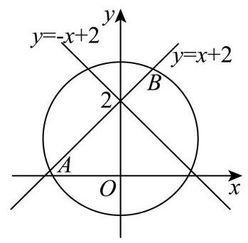
由 { x 2 + ( y − 1 ) 2 = 4 y = x + 2 ⇒ 2 x 2 + 2 x − 3 = 0 ⇒ x = − 1 ± 7 2 \left\{ {\begin{array}{l} {x}^{2} + {\left( y - 1\right) }^{2} = 4 \\ y = x + 2 \end{array} \Rightarrow 2{x}^{2} + {2x} - 3 = 0 \Rightarrow x = \frac{-1 \pm \sqrt{7}}{2}}\right. { x 2 + ( y − 1 ) 2 = 4 y = x + 2 ⇒ 2 x 2 + 2 x − 3 = 0 ⇒ x = 2 − 1 ± 7
直线 y = x + 2 y = x + 2 y = x + 2 x 2 + ( y − 1 ) 2 = 4 {x}^{2} + {\left( y - 1\right) }^{2} = 4 x 2 + ( y − 1 ) 2 = 4 A ( − 1 − 7 2 , 0 ) , B ( − 1 + 7 2 , 0 ) A\left( {\frac{-1 - \sqrt{7}}{2},0}\right) , B\left( {\frac{-1 + \sqrt{7}}{2},0}\right) A ( 2 − 1 − 7 , 0 ) , B ( 2 − 1 + 7 , 0 ) y = x + 2 y = x + 2 y = x + 2 y = − x + 2 y = - x + 2 y = − x + 2 ( 0 , 2 ) \left( {0,2}\right) ( 0 , 2 ) x 2 + ( y − 1 ) 2 = 4 {x}^{2} + {\left( y - 1\right) }^{2} = 4 x 2 + ( y − 1 ) 2 = 4
所以当 − 1 ≤ − x 1 ≤ 1 - 1 \leq - {x}_{1} \leq 1 − 1 ≤ − x 1 ≤ 1 x ∈ [ − 2 , − 1 − 7 2 ] ∪ [ − 1 + 7 2 , 2 ] x \in \left\lbrack {-2,\frac{-1 - \sqrt{7}}{2}}\right\rbrack \cup \left\lbrack {\frac{-1 + \sqrt{7}}{2},2}\right\rbrack x ∈ [ − 2 , 2 − 1 − 7 ] ∪ [ 2 − 1 + 7 , 2 ]
因为 O T → ⋅ i → = x \overrightarrow{OT} \cdot \overrightarrow{i} = x OT ⋅ i = x
所以 O T → ⋅ i → \overrightarrow{OT} \cdot \overrightarrow{i} OT ⋅ i [ − 2 , − 1 − 7 2 ] ∪ [ − 1 + 7 2 , 2 ] \left\lbrack {-2,\frac{-1 - \sqrt{7}}{2}}\right\rbrack \cup \left\lbrack {\frac{-1 + \sqrt{7}}{2},2}\right\rbrack [ − 2 , 2 − 1 − 7 ] ∪ [ 2 − 1 + 7 , 2 ]
闵行 · 第16题 ★★★★☆ · 教师预估 已知平面上 13 个向量 a 1 → ⋅ a 2 → 、 ⋯ . a 13 → \overrightarrow{{a}_{1}} \cdot \overrightarrow{{a}_{2}}\text{ 、 }\cdots .\overrightarrow{{a}_{13}} a 1 ⋅ a 2 、 ⋯ . a 13 ∣ a 1 → ∣ = 1 \left| \overrightarrow{{a}_{1}}\right| = 1 a 1 = 1 n ∈ N , 1 ≤ n ≤ 12 n \in \mathbf{N},1 \leq n \leq {12} n ∈ N , 1 ≤ n ≤ 12 ∣ a n + 1 → ∣ = 2 ∣ a n → ∣ \left| \overrightarrow{{a}_{n + 1}}\right| = \sqrt{2}\left| \overrightarrow{{a}_{n}}\right| a n + 1 = 2 a n a n → ⋅ a n + 1 → = 0 \overrightarrow{{a}_{n}} \cdot \overrightarrow{{a}_{n + 1}} = 0 a n ⋅ a n + 1 = 0 ∣ a 1 → + a 2 → + ⋯ + a 13 → ∣ \left| {\overrightarrow{{a}_{1}} + \overrightarrow{{a}_{2}} + \cdots + \overrightarrow{{a}_{13}}}\right| a 1 + a 2 + ⋯ + a 13
A. 0
B. 3 \sqrt{3} 3
C. 16 6 {16}\sqrt{6} 16 6
D. 63 2 {63}\sqrt{2} 63 2
考点： 相邻垂直向量和的模；等比求和。难度依据： 相邻垂直向量和的模；等比求和
展开答案与解析 【答案】 B
【解析】
【分析】 由题意可得 ∣ a 1 → ∣ = 1 , ∣ a n → ∣ \left| \overrightarrow{{a}_{1}}\right| = 1,\left| \overrightarrow{{a}_{n}}\right| a 1 = 1 , a n 2 \sqrt{2} 2 a 1 → , a 3 → , a 5 → , a 7 → , a 9 → , a 11 → , a 13 → \overrightarrow{{a}_{1}},\overrightarrow{{a}_{3}},\overrightarrow{{a}_{5}},\overrightarrow{{a}_{7}},\overrightarrow{{a}_{9}},\overrightarrow{{a}_{11}},\overrightarrow{{a}_{13}} a 1 , a 3 , a 5 , a 7 , a 9 , a 11 , a 13 a 2 → , a 4 → , a 6 → , a 8 → , a 10 → , a 12 → \overrightarrow{{a}_{2}},\overrightarrow{{a}_{4}},\overrightarrow{{a}_{6}},\overrightarrow{{a}_{8}},\overrightarrow{{a}_{10}},\overrightarrow{{a}_{12}} a 2 , a 4 , a 6 , a 8 , a 10 , a 12 ∣ a 1 → + a 2 → + ⋯ + a 13 → ∣ \left| {\overrightarrow{{a}_{1}} + \overrightarrow{{a}_{2}} + \cdots + \overrightarrow{{a}_{13}}}\right| a 1 + a 2 + ⋯ + a 13 a 1 → , a 3 → , a 5 → , a 7 → , a 9 → , a 11 → \overrightarrow{{a}_{1}},\overrightarrow{{a}_{3}},\overrightarrow{{a}_{5}},\overrightarrow{{a}_{7}},\overrightarrow{{a}_{9}},\overrightarrow{{a}_{11}} a 1 , a 3 , a 5 , a 7 , a 9 , a 11 a 13 → \overrightarrow{{a}_{13}} a 13 a 2 → , a 4 → , a 6 → , a 8 → , a 10 → \overrightarrow{{a}_{2}},\overrightarrow{{a}_{4}},\overrightarrow{{a}_{6}},\overrightarrow{{a}_{8}},\overrightarrow{{a}_{10}} a 2 , a 4 , a 6 , a 8 , a 10 a 12 → \overrightarrow{{a}_{12}} a 12
【详解】 因为 ∣ a 1 → ∣ = 1 \left| \overrightarrow{{a}_{1}}\right| = 1 a 1 = 1
且对任意 n ∈ N , 1 ≤ n ≤ 12 n \in \mathbf{N},1 \leq n \leq {12} n ∈ N , 1 ≤ n ≤ 12 ∣ a n + 1 → ∣ = 2 ∣ a n → ∣ \left| \overrightarrow{{a}_{n + 1}}\right| = \sqrt{2}\left| \overrightarrow{{a}_{n}}\right| a n + 1 = 2 a n
所以 ∣ a n → ∣ \left| \overrightarrow{{a}_{n}}\right| a n 2 \sqrt{2} 2
所以 ∣ a n → ∣ = ( 2 ) n − 1 \left| \overrightarrow{{a}_{n}}\right| = {\left( \sqrt{2}\right) }^{n - 1} a n = ( 2 ) n − 1
又因为 a n → ⋅ a n + 1 → = 0 \overrightarrow{{a}_{n}} \cdot \overrightarrow{{a}_{n + 1}} = 0 a n ⋅ a n + 1 = 0
即相邻向量垂直,
即 a 1 → ⊥ a 2 → , a 2 → ⊥ a 3 → , ⋯ , a 12 → ⊥ a 13 → \overrightarrow{{a}_{1}} \bot \overrightarrow{{a}_{2}},\overrightarrow{{a}_{2}} \bot \overrightarrow{{a}_{3}},\cdots ,\overrightarrow{{a}_{12}} \bot \overrightarrow{{a}_{13}} a 1 ⊥ a 2 , a 2 ⊥ a 3 , ⋯ , a 12 ⊥ a 13
所以 a 1 → , a 3 → , a 5 → , a 7 → , a 9 → , a 11 → , a 13 → \overrightarrow{{a}_{1}},\overrightarrow{{a}_{3}},\overrightarrow{{a}_{5}},\overrightarrow{{a}_{7}},\overrightarrow{{a}_{9}},\overrightarrow{{a}_{11}},\overrightarrow{{a}_{13}} a 1 , a 3 , a 5 , a 7 , a 9 , a 11 , a 13 a 2 → , a 4 → , a 6 → , a 8 → , a 10 → , a 12 → \overrightarrow{{a}_{2}},\overrightarrow{{a}_{4}},\overrightarrow{{a}_{6}},\overrightarrow{{a}_{8}},\overrightarrow{{a}_{10}},\overrightarrow{{a}_{12}} a 2 , a 4 , a 6 , a 8 , a 10 , a 12
要使 ∣ a 1 → + a 2 → + ⋯ + a 13 → ∣ \left| {\overrightarrow{{a}_{1}} + \overrightarrow{{a}_{2}} + \cdots + \overrightarrow{{a}_{13}}}\right| a 1 + a 2 + ⋯ + a 13
设 S 1 → = a 1 → + a 3 → + a 5 → + a 7 → + a 9 → + a 11 → + a 13 → , S 2 → = a 2 → + a 4 → + a 6 → + a 8 → + a 10 → + a 12 → \overrightarrow{{S}_{1}} = \overrightarrow{{a}_{1}} + \overrightarrow{{a}_{3}} + \overrightarrow{{a}_{5}} + \overrightarrow{{a}_{7}} + \overrightarrow{{a}_{9}} + \overrightarrow{{a}_{11}} + \overrightarrow{{a}_{13}},\overrightarrow{{S}_{2}} = \overrightarrow{{a}_{2}} + \overrightarrow{{a}_{4}} + \overrightarrow{{a}_{6}} + \overrightarrow{{a}_{8}} + \overrightarrow{{a}_{10}} + \overrightarrow{{a}_{12}} S 1 = a 1 + a 3 + a 5 + a 7 + a 9 + a 11 + a 13 , S 2 = a 2 + a 4 + a 6 + a 8 + a 10 + a 12
则有 S 1 → ⊥ S 2 → \overrightarrow{{S}_{1}} \bot \overrightarrow{{S}_{2}} S 1 ⊥ S 2
即求 ∣ S 1 → + S 2 → ∣ \left| {\overrightarrow{{S}_{1}} + \overrightarrow{{S}_{2}}}\right| S 1 + S 2
当 a 1 → , a 3 → , a 5 → , a 7 → , a 9 → , a 11 → \overrightarrow{{a}_{1}},\overrightarrow{{a}_{3}},\overrightarrow{{a}_{5}},\overrightarrow{{a}_{7}},\overrightarrow{{a}_{9}},\overrightarrow{{a}_{11}} a 1 , a 3 , a 5 , a 7 , a 9 , a 11 a 13 → \overrightarrow{{a}_{13}} a 13 ∣ S 1 → ∣ \left| \overrightarrow{{S}_{1}}\right| S 1
且 ∣ S 1 → ∣ min = ∣ a 13 → ∣ − ( ∣ a 1 → ∣ + ∣ a 3 → ∣ + ∣ a 5 → ∣ + ∣ a 7 → ∣ + ∣ a 9 → ∣ + ∣ a 11 → ∣ ) {\left| \overrightarrow{{S}_{1}}\right| }_{\min } = \left| \overrightarrow{{a}_{13}}\right| - \left( {\left| \overrightarrow{{a}_{1}}\right| + \left| \overrightarrow{{a}_{3}}\right| + \left| \overrightarrow{{a}_{5}}\right| + \left| \overrightarrow{{a}_{7}}\right| + \left| \overrightarrow{{a}_{9}}\right| + \left| \overrightarrow{{a}_{11}}\right| }\right) S 1 m i n = a 13 − ( a 1 + a 3 + a 5 + a 7 + a 9 + a 11 )
= 2 6 − ( 2 6 − 1 ) = 1 = {2}^{6} - \left( {{2}^{6} - 1}\right) = 1 = 2 6 − ( 2 6 − 1 ) = 1
当 a 2 → , a 4 → , a 6 → , a 8 → , a 10 → \overrightarrow{{a}_{2}},\overrightarrow{{a}_{4}},\overrightarrow{{a}_{6}},\overrightarrow{{a}_{8}},\overrightarrow{{a}_{10}} a 2 , a 4 , a 6 , a 8 , a 10 a 12 → \overrightarrow{{a}_{12}} a 12 ∣ S 2 → ∣ \left| \overrightarrow{{S}_{2}}\right| S 2
且 ∣ S 2 → ∣ min = ∣ a 12 → ∣ − ( ∣ a 2 → ∣ + ∣ a 4 → ∣ + ∣ a 6 → ∣ + ∣ a 8 → ∣ + ∣ a 10 → ∣ ) {\left| \overrightarrow{{S}_{2}}\right| }_{\min } = \left| \overrightarrow{{a}_{12}}\right| - \left( {\left| \overrightarrow{{a}_{2}}\right| + \left| \overrightarrow{{a}_{4}}\right| + \left| \overrightarrow{{a}_{6}}\right| + \left| \overrightarrow{{a}_{8}}\right| + \left| \overrightarrow{{a}_{10}}\right| }\right) S 2 m i n = a 12 − ( a 2 + a 4 + a 6 + a 8 + a 10 )
= 32 2 − 2 ( 1 − 2 5 ) 1 − 2 = 32 2 + 2 − 32 2 = 2 = {32}\sqrt{2} - \frac{\sqrt{2}\left( {1 - {2}^{5}}\right) }{1 - 2} = {32}\sqrt{2} + \sqrt{2} - {32}\sqrt{2} = \sqrt{2} = 32 2 − 1 − 2 2 ( 1 − 2 5 ) = 32 2 + 2 − 32 2 = 2
所以 ∣ S 1 → + S 2 → ∣ min = ( S 1 → + S 2 → ) 2 = S 1 → 2 + 2 S 1 → ⋅ S 2 → + S 2 → 2 = 3 {\left| \overrightarrow{{S}_{1}} + \overrightarrow{{S}_{2}}\right| }_{\min } = \sqrt{{\left( \overrightarrow{{S}_{1}} + \overrightarrow{{S}_{2}}\right) }^{2}} = \sqrt{{\overrightarrow{{S}_{1}}}^{2} + 2\overrightarrow{{S}_{1}} \cdot \overrightarrow{{S}_{2}} + {\overrightarrow{{S}_{2}}}^{2}} = \sqrt{3} S 1 + S 2 m i n = ( S 1 + S 2 ) 2 = S 1 2 + 2 S 1 ⋅ S 2 + S 2 2 = 3
即 ∣ a 1 → + a 2 → + ⋯ + a 13 → ∣ \left| {\overrightarrow{{a}_{1}} + \overrightarrow{{a}_{2}} + \cdots + \overrightarrow{{a}_{13}}}\right| a 1 + a 2 + ⋯ + a 13 3 \sqrt{3} 3
青浦 · 第12题 ★★★★☆ · 教师预估 已知平面内的三个非零向量 a → , b → , c → \overrightarrow{a},\overrightarrow{b},\overrightarrow{c} a , b , c ⟨ a → , b → ⟩ = π 4 \left\langle {\overrightarrow{a},\overrightarrow{b}}\right\rangle = \frac{\pi }{4} ⟨ a , b ⟩ = 4 π ∣ a → − b → ∣ = 2 \left| {\overrightarrow{a} - \overrightarrow{b}}\right| = 2 a − b = 2 ∣ b → − c → ∣ = ∣ c → − a → ∣ = 17 \left| {\overrightarrow{b} - \overrightarrow{c}}\right| = \left| {\overrightarrow{c} - \overrightarrow{a}}\right| = \sqrt{17} b − c = c − a = 17 a → ⋅ c → − b → ⋅ c → ∣ c → ∣ \frac{\overrightarrow{a} \cdot \overrightarrow{c} - \overrightarrow{b} \cdot \overrightarrow{c}}{\left| \overrightarrow{c}\right| } ∣ c ∣ a ⋅ c − b ⋅ c ∣ c → ∣ = \left| \overrightarrow{c}\right| = c =
考点： 数量积投影最值及向量终点几何；圆周角轨迹与坐标；基本不等式求最值。难度依据： 数量积投影最值及向量终点几何；圆周角轨迹与坐标；基本不等式求最值
展开答案与解析 【答案】 7 \sqrt{7} 7
【解析】
【分析】 先通过题干向量关系和几何法确定过点 A , B A, B A , B
【详解】 设 A , B A, B A , B a → , b → \overrightarrow{a},\overrightarrow{b} a , b M M M A B {AB} A B ∣ a → − b → ∣ = ∣ A B ∣ = 2 \left| {\overrightarrow{a} - \overrightarrow{b}}\right| = \left| {AB}\right| = 2 a − b = ∣ A B ∣ = 2 ∣ A M ∣ = 1 \left| {AM}\right| = 1 ∣ A M ∣ = 1 ∣ c → − a → ∣ = ∣ c → − b → ∣ = 17 \left| {\overrightarrow{c} - \overrightarrow{a}}\right| = \left| {\overrightarrow{c} - \overrightarrow{b}}\right| = \sqrt{17} c − a = c − b = 17 c → \overrightarrow{c} c C C C A B {AB} A B
且由勾股定理得 ∣ C M ∣ = ∣ A C → ∣ 2 − ∣ A M ∣ 2 = 17 − 1 = 4 \left| {CM}\right| = \sqrt{{\left| \overrightarrow{AC}\right| }^{2} - {\left| AM\right| }^{2}} = \sqrt{{17} - 1} = 4 ∣ CM ∣ = A C 2 − ∣ A M ∣ 2 = 17 − 1 = 4
如图所示，建立坐标系:
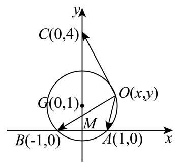
M ( 0 , 0 ) , A ( 1 , 0 ) , B ( − 1 , 0 ) , C ( 0 , ± 4 ) , M\left( {0,0}\right) ,\;A\left( {1,0}\right) ,\;B\left( {-1,0}\right) ,\;C\left( {0, \pm 4}\right) , M ( 0 , 0 ) , A ( 1 , 0 ) , B ( − 1 , 0 ) , C ( 0 , ± 4 ) ,
公共起点 O ( x , y ) O\left( {x, y}\right) O ( x , y ) a → = O A → , b → = O B → , c → = O C → \overrightarrow{a} = \overrightarrow{OA},\overrightarrow{b} = \overrightarrow{OB},\overrightarrow{c} = \overrightarrow{OC} a = O A , b = OB , c = OC
在 △ O A B \bigtriangleup {OAB} △ O A B A B sin ∠ A O B = 2 sin π 4 = 2 2 = 2 R \frac{AB}{\sin \angle {AOB}} = \frac{2}{\sin \frac{\pi }{4}} = 2\sqrt{2} = {2R} s i n ∠ A OB A B = s i n 4 π 2 = 2 2 = 2 R
R R R △ O A B \bigtriangleup {OAB} △ O A B R = 2 R = \sqrt{2} R = 2
令 △ O A B \bigtriangleup {OAB} △ O A B G G G G G G A B {AB} A B ( 0 , ± 1 ) \left( {0, \pm 1}\right) ( 0 , ± 1 )
根据对称性,以 C ( 0 , 4 ) , G ( 0 , 1 ) C\left( {0,4}\right) , G\left( {0,1}\right) C ( 0 , 4 ) , G ( 0 , 1 ) O O O x 2 + ( y − 1 ) 2 = 2 {x}^{2} + {\left( y - 1\right) }^{2} = 2 x 2 + ( y − 1 ) 2 = 2
a → − b → = O A → − O B → = ( 2 , 0 ) , c → = O C → = ( − x , 4 − y ) \overrightarrow{a} - \overrightarrow{b} = \overrightarrow{OA} - \overrightarrow{OB} = \left( {2,0}\right) ,\overrightarrow{c} = \overrightarrow{OC} = \left( {-x,4 - y}\right) a − b = O A − OB = ( 2 , 0 ) , c = OC = ( − x , 4 − y ) k = a → ⋅ c → − b → ⋅ c → ∣ c → ∣ k = \frac{\overrightarrow{a} \cdot \overrightarrow{c} - \overrightarrow{b} \cdot \overrightarrow{c}}{\left| \overrightarrow{c}\right| } k = ∣ c ∣ a ⋅ c − b ⋅ c
则 k = ( a → − b → ) ⋅ c → ∣ c → ∣ = − 2 x x 2 + ( y − 4 ) 2 k = \frac{\left( {\overrightarrow{a} - \overrightarrow{b}}\right) \cdot \overrightarrow{c}}{\left| \overrightarrow{c}\right| } = \frac{-{2x}}{\sqrt{{x}^{2} + {\left( y - 4\right) }^{2}}} k = ∣ c ∣ ( a − b ) ⋅ c = x 2 + ( y − 4 ) 2 − 2 x
代入 x 2 = − y 2 + 2 y + 1 {x}^{2} = - {y}^{2} + {2y} + 1 x 2 = − y 2 + 2 y + 1 k 2 = 4 ( − y 2 + 2 y + 1 ) − 6 y + 17 {k}^{2} = \frac{4\left( {-{y}^{2} + {2y} + 1}\right) }{-{6y} + {17}} k 2 = − 6 y + 17 4 ( − y 2 + 2 y + 1 )
令 t = − 6 y + 17 ( t > 0 ) t = - {6y} + {17}\left( {t > 0}\right) t = − 6 y + 17 ( t > 0 ) k 2 = − t − 49 t + 22 9 ≤ − 14 + 22 9 = 8 9 {k}^{2} = \frac{-t - \frac{49}{t} + {22}}{9} \leq \frac{-{14} + {22}}{9} = \frac{8}{9} k 2 = 9 − t − t 49 + 22 ≤ 9 − 14 + 22 = 9 8
当且仅当 t = 7 t = 7 t = 7 ∣ c → ∣ 2 = t = 7 {\left| \overrightarrow{c}\right| }^{2} = t = 7 c 2 = t = 7 ∣ c → ∣ = 7 \left| \overrightarrow{c}\right| = \sqrt{7} c = 7
由对称性可知当 C ( 0 , − 4 ) C\left( {0, - 4}\right) C ( 0 , − 4 ) x 2 + ( y + 1 ) 2 = 2 {x}^{2} + {\left( y + 1\right) }^{2} = 2 x 2 + ( y + 1 ) 2 = 2 7 \sqrt{7} 7
静安 · 第16题 ★★★★☆ · 教师预估 设 M 、 N M\text{ 、 }N M 、 N P P P M 、 N M\text{ 、 }N M 、 N P M → ⋅ P N → \overrightarrow{PM} \cdot \overrightarrow{PN} PM ⋅ PN
① P M → ⋅ P N → \overrightarrow{PM} \cdot \overrightarrow{PN} PM ⋅ PN
② P M → ⋅ P N → \overrightarrow{PM} \cdot \overrightarrow{PN} PM ⋅ PN
则下列判断正确的选项是 ( ).
A. ①正确，②错误
B. ①错误，②正确
C. ①和②都错误
D. ①和②都正确
考点： 正方体数量积最值；正方体动点。难度依据： 正方体数量积最值；正方体动点
展开答案与解析 【答案】 A
【解析】
【分析】 分 M 、 N M\text{ 、 }N M 、 N M 、 N M\text{ 、 }N M 、 N M 、 N M\text{ 、 }N M 、 N ∣ M N ∣ \left| {MN}\right| ∣ MN ∣ M N {MN} MN O O O P M → ⋅ P N → = ∣ P O → ∣ 2 − 1 4 ∣ M N → ∣ 2 \overrightarrow{PM} \cdot \overrightarrow{PN} = {\left| \overrightarrow{PO}\right| }^{2} - \frac{1}{4}{\left| \overrightarrow{MN}\right| }^{2} PM ⋅ PN = PO 2 − 4 1 MN 2 ∣ O P ∣ \left| {OP}\right| ∣ OP ∣
【详解】 设 M N {MN} MN O O O
若 M 、 N M\text{ 、 }N M 、 N ∣ M N ∣ = 1 \left| {MN}\right| = 1 ∣ MN ∣ = 1
则 0 ≤ ∣ O P ∣ ≤ ( 1 2 ) 2 + 1 2 + 1 2 0 \leq \left| {OP}\right| \leq \sqrt{{\left( \frac{1}{2}\right) }^{2} + {1}^{2} + {1}^{2}} 0 ≤ ∣ OP ∣ ≤ ( 2 1 ) 2 + 1 2 + 1 2 ∣ O P ∣ ∈ [ 0 , 3 2 ] \left| {OP}\right| \in \left\lbrack {0,\frac{3}{2}}\right\rbrack ∣ OP ∣ ∈ [ 0 , 2 3 ]
P M → ⋅ P N → = ( P O → + O M → ) ⋅ ( P O → + O N → ) = ∣ P O → ∣ 2 − 1 4 ∣ M N → ∣ 2 ∈ [ − 1 4 , 2 ] \overrightarrow{PM} \cdot \overrightarrow{PN} = \left( {\overrightarrow{PO} + \overrightarrow{OM}}\right) \cdot \left( {\overrightarrow{PO} + \overrightarrow{ON}}\right) = {\left| \overrightarrow{PO}\right| }^{2} - \frac{1}{4}{\left| \overrightarrow{MN}\right| }^{2} \in \left\lbrack {-\frac{1}{4},2}\right\rbrack PM ⋅ PN = ( PO + OM ) ⋅ ( PO + ON ) = PO 2 − 4 1 MN 2 ∈ [ − 4 1 , 2 ]
此时 P M → ⋅ P N → \overrightarrow{PM} \cdot \overrightarrow{PN} PM ⋅ PN
若 M 、 N M\text{ 、 }N M 、 N ∣ M N ∣ = 2 \left| {MN}\right| = \sqrt{2} ∣ MN ∣ = 2
则 0 ≤ ∣ O P ∣ ≤ ( 2 2 ) 2 + 1 2 0 \leq \left| {OP}\right| \leq \sqrt{{\left( \frac{\sqrt{2}}{2}\right) }^{2} + {1}^{2}} 0 ≤ ∣ OP ∣ ≤ ( 2 2 ) 2 + 1 2 ∣ O P ∣ ∈ [ 0 , 6 2 ] \left| {OP}\right| \in \left\lbrack {0,\frac{\sqrt{6}}{2}}\right\rbrack ∣ OP ∣ ∈ [ 0 , 2 6 ]
P M → ⋅ P N → = ∣ P O → ∣ 2 − 1 4 ∣ M N → ∣ 2 ∈ [ − 1 2 , 1 ] \overrightarrow{PM} \cdot \overrightarrow{PN} = {\left| \overrightarrow{PO}\right| }^{2} - \frac{1}{4}{\left| \overrightarrow{MN}\right| }^{2} \in \left\lbrack {-\frac{1}{2},1}\right\rbrack PM ⋅ PN = PO 2 − 4 1 MN 2 ∈ [ − 2 1 , 1 ]
此时 P M → ⋅ P N → \overrightarrow{PM} \cdot \overrightarrow{PN} PM ⋅ PN
若 M 、 N M\text{ 、 }N M 、 N ∣ M N ∣ = 3 \left| {MN}\right| = \sqrt{3} ∣ MN ∣ = 3
则 1 2 ≤ ∣ O P ∣ ≤ 3 2 \frac{1}{2} \leq \left| {OP}\right| \leq \frac{\sqrt{3}}{2} 2 1 ≤ ∣ OP ∣ ≤ 2 3 ∣ O P ∣ ∈ [ 1 2 , 3 2 ] \left| {OP}\right| \in \left\lbrack {\frac{1}{2},\frac{\sqrt{3}}{2}}\right\rbrack ∣ OP ∣ ∈ [ 2 1 , 2 3 ]
则 P M → ⋅ P N → = ∣ P O → ∣ 2 − 1 4 ∣ M N → ∣ 2 ≤ 3 4 − 3 4 = 0 \overrightarrow{PM} \cdot \overrightarrow{PN} = {\left| \overrightarrow{PO}\right| }^{2} - \frac{1}{4}{\left| \overrightarrow{MN}\right| }^{2} \leq \frac{3}{4} - \frac{3}{4} = 0 PM ⋅ PN = PO 2 − 4 1 MN 2 ≤ 4 3 − 4 3 = 0
此时 P M → ⋅ P N → \overrightarrow{PM} \cdot \overrightarrow{PN} PM ⋅ PN
综上可得:①正确；②错误.